作者: 麦好
出版社: 机械工业出版社
副标题: 案例应用解析
出版年: 2016-7-15
丛书: 大数据技术丛书
ISBN: 9787111540212
推荐序
在2013年的中国大数据创新峰会上，我偶然结识了作者，期间聊到了人工智能革命和机器学习的话题，被作者的渊博知识所折服，慢慢地结下了深厚的友谊。时间一晃而过，机器学习现在已经得到了井喷式发展，按照麻省理工学院罗德尼·布鲁克斯的预测：到2100年以前，我们的日常生活中将充满智能机器人，而且人类无法将自己同它们区分开来，我们也将是机器人，同机器人互相联系。
追忆2011年，当时我在吉林大学读研三，幸运地拿到了百度研发工程师的offer，进入百度商务搜索架构部，一直做着与凤巢广告相关的工作。现代广告业的奠基人大卫·奥格威曾经说过，除非你的广告建立在伟大的创意之上，否则它就像夜航的船，不为人所注意。广告的创意是广告的灵魂，我也一直沿着广告内容技术的方向，优化创意，提升用户的体验，提升广告主的转化。在这个方向上，我采用了机器学习的相关技术，取得了毕昇（获得2014年度百度最高奖）、图片凤巢、知识凤巢、地域识别等项目的成功，深刻地体会到了机器学习的强大，正是有了机器学习的闪闪发光，才推动了很多令人惊艳的产品的诞生。对于互联网、IT从业人员，机器学习已经成为必备利器，掌握了它，就等于站在了巨人的肩膀上工作，可帮助自己提高个人的核心竞争力。
我和作者认识近3年，同时也是《机器学习实践指南》第1版的读者，并在工作之余与作者一起管理《机器学习实践指南》的读者QQ群（群号：192029861），在群里认识了更多专注机器学习的朋友和学者。《机器学习实践指南》第1版主要针对初、中级读者，作者出书的目标就是：以机器学习算法的实践应用为主，将更多的“门外汉”带入机器学习殿堂，让更多拥有机器学习理论却无法下手的朋友掌握机器学习实践思维，轻松步入机器学习实战领域。实践思维对IT行业非常重要，一旦形成了适当的思维方式，很多工作中遇到的技术难题将迎刃而解，学习新知识的速度也更快，因为只有实践与理论相结合才能更精准地理解知识。也希望对机器学习有兴趣的读者能从中受益。
《机器学习实践指南》第2版出版在即，我高兴地接受了作者的邀请——为本书写推荐序。第2版比第1版增加了更多的案例和算法解析，全书详细介绍了机器学习发展及应用前景、科学计算平台、Python计算平台应用、R语言计算平台应用、生产环境基础、统计分析基础、描述性分析案例、假设检验与回归模型案例、神经网络、统计算法、欧氏距离与余弦相似度、SVM、回归算法、PCA降维、关联规则、聚类与分类算法、数据拟合案例、图像算法案例、机器视觉案例、文本分类案例等机器学习实践与应用。
第2版致力推动机器学习理论在国内的普及和应用，为公司创建更多的商业价值；同时，力争让更多的学生、IT工程师等进入人工智能相关领域，适应智能时代工作的需要。
最后，希望大家喜欢这本书，进而从中受益。
徐培治
百度在线网络技术（北京）有限公司
2016年3月于北京
前言
为什么要写这本书
随着全球第三次工业革命的迅猛发展，机器学习技术异军突起，人类对机器学习技术的研究也开辟出了许多全新的应用领域，这使智能机器的计算能力和可定制性上升到了一个新的层次。到了2015年，人类在机器学习领域取得了一系列重大的突破，这项技术已悄无声息地潜入我们的日常生活，而在未来，机器学习也将拥抱变化，持续发力。如今，它已经在各行各业的技术革新中扮演着日益重要的角色，从各方面影响和改变着我们的生活。
近年来，机器学习技术在国外得到了海量应用和深入发展。2015年11月，谷歌开源了全新的TensorFlow机器学习系统，该系统更快、更智能，也更具有弹性。2015年1月，机器学习平台GraphLab改名为Dato，并获得了1850万美元的新融资（投资方为Vulcan Capital、Opus Capital、New Enterprise Associates、Madrona Venture Group），此前他们曾获得680万美元的融资。2015年8月，Facebook推出了“M”，Facebook认为人类不仅会回答人工智能所不能回答的问题，而且从长远来看，人类也会帮助改善人工智能技术，“M”除了能做到回答问题、查阅信息等基本功能外，还可以帮助用户完成如购买商品、餐厅定位、安排旅行计划等操作。在2015年12月召开的“2015年神经信息处理系统”（NIPS）会议上，微软研究人员和工程师公开了20多篇机器学习最新研究成果的论文。此外，微软还宣布，机器学习正在成为Windows 10的一部分：Skype翻译可以将口语几乎实时地翻译成其他语言，就像《星际迷航》中的通用翻译器那样，可以做到面对面的交流。Cortana个人数字助理在与用户的互动中不断学习与改进，从而帮助用户管理日历、跟踪快递，甚至能与用户聊天和讲笑话，实现真正的个性化互动体验。Clutter是微软Office 2016的成员，通过学习它可以识别出哪些电子邮件对用户来说最重要，并自动将不重要的邮件重定向到一个单独的文件夹中，从而保持用户收件箱的整洁。2015年9月，美军军队医疗中心指挥官少将Steve Jones在美军陆军的一次会议上发言表示，未来可以让智能机器人代替人类上战场运送伤员，美国军方甚至高调宣布：未来战场上机器人救起的可能不是人，而是机器人，因为智能机器人军团将代替人类出征。
在国内，机器学习掀起了技术革新的热潮，智能技术得到了广泛的普及和应用。隶属于中国科学院的新松机器人自动化公司生产了智能复合型机器人，这个安装了眼睛和感知器件的智能机器人，可以在车间里自由地行走并十分精确地完成任务，当其他工位人手不足时，接到指令的他还会主动上前帮忙，马上进入角色并开始工作。百度创造和完善了大规模机器学习的技术，搭建了一个能容纳万亿特征数据的、分钟级别模型更新的、高效训练的点击率预估系统；为进一步深入地发展机器学习技术，百度开始研究如何从“机器学习”到“复制人类大脑”；此外，百度甚至在2016年提出，百度的产品和服务都靠机器学习等技术来驱动。
随着机器学习技术在国内外的大量应用，机器学习工程师成为炙手可热的职位。现在中国已经悄然兴起了机器学习的学习热潮，掌握了机器学习技术的工程师将成为各大IT巨头疯抢的“香馍馍”，良好的发展势头和较高的职业薪水，吸引着越来越多的软件工程师和数据分析师涌入机器学习的领域。国内知名的公司百度、阿里巴巴、腾讯（俗称BAT）为迎接大数据时代带来的挑战，早已全面引进机器学习方面的人才，并有组织地对机器学习技术展开大规模的、更深入的研究。其他各大公司（包括非IT行业的公司）也提出了引进机器学习研发工程师的渴求。
但是，机器学习的入门门槛较高，尤其是对研究者的数学理解能力有较高的要求，相对于数据结构、算法导论中讲述的计算机算法及系统架构知识来说，机器学习是一个全新的领域，理解机器学习算法往往要从理解它所涉及的数学公式和数学知识开始，打好数学基础是非常有必要的，一旦掌握了数学分析、线性代数、概率与统计、统计学、离散数学、抽象代数、数学建模等数学理论后，理解机器学习算法就会容易很多，不再畏惧那些让人生厌的、麻烦的数学符号和数学公式，说不定还会喜欢上这些数学公式，并亲自推导一番。希望本书能帮助朋友们进入机器学习的精彩世界。
读者对象
·开发人员。在理解机器学习算法的基础上，调用机器学习的中间库进行开发，将机器学习应用于各种场景，如数据分析、图像识别、文本分类、搜索引擎、中文智能输入法等。
·架构师。在理解机器学习算法的基础上，适应现代云计算平台的发展，将机器学习算法应用在大规模的并行计算上。同时，机器学习算法是大数据分析的基础，如神经网络、SVM、相似度分析、统计分析等技术。
·机器学习的初、中级读者。人类对机器学习的研究只是一个开始，还远远没有结束。近年来，机器学习一直保持着强劲的发展势头，并拥有美好的发展前景，这点不同于某些软件开发领域中的程序语言或架构知识。掌握机器学习技术有一定的难度，但也意味着，掌握机器学习的技术就能获得更高的薪水和更具前景的职业。
如何阅读本书
全书分为准备篇、基础篇、统计分析实战篇和机器学习实战篇。机器学习算法建立在复杂的计算理论基础之上，并涉及多门数学学科。抽象的理论加上成堆的数学公式，给部分读者带来了极大的挑战，将渴求学习的人们挡在了门外。针对这种情况，本书力求理论联系实际，在介绍理论基础的同时，注重机器学习算法的实际运用，让读者更好地明白其中的原理。
准备篇中首先将介绍机器学习的发展及应用前景，使读者产生浓厚的兴趣，同时也将介绍目前常用的科学计算平台和本书将用到的工程计算平台，使读者消除对机器学习的畏难情绪，这些平台的使用也降低了机器学习软件实现的难度。
基础篇将介绍数学知识基础和计算平台应用实例，介绍计算平台的开发基本知识，并应用这些平台实现计算应用。
最后，本书将针对统计分析实战和机器学习实战两个部分帮助读者建立机器学习实战指南，应用计算平台对统计分析及机器学习算法进行实现和应用，同时还会附上效果图，让读者对机器学习的基本应用和理论基础有一个形象的理解。
勘误和支持
由于作者的水平有限，编写的时间也很仓促，书中难免会出现一些错误或不准确的地方，不妥之处恳请读者批评指正。如果遇到任何问题，或有更多的宝贵意见，欢迎发送邮件至我的邮箱myhaspl@myhaspl.com，很期待能够听到您的真挚反馈。此外，本书的代码及相关资源（包括思考题中涉及的数据等）的下载地址为：https://yunpan.cn/cYjhBYGLKkKTb
（提取码：65ad）。
第1章 机器学习发展及应用前景
纵观国内软件工程师的发展路线，前期多以程序员（“码农”）、测试工程师、数据库管理员、多媒体技术员、网页与信息技术员等职业为主；中期主要是软件设计师、软件评测师、技术支持师等职业；后期是职业发展的黄金阶段，这一阶段对于拥有丰富技术经验的工程师来说十分重要，但这一阶段容易遭遇到技术发展瓶颈，因此，很多人将目光投向了项目管理和系统架构，比如：系统架构师、项目管理师等。
近年来，国内对机器学习的研究日益深入，应用领域不断扩大，催生了新的IT职位——机器学习工程师，百度、搜狗、阿里巴巴、淘宝、奇虎等国内IT巨头纷纷提出了对机器学习工程师的需求，掌握机器学习的人才成为了各大IT厂商争抢的“香饽饽”。机器学习迅速走红成为热门技术，这给软件工程师带来了绝佳的发展机遇，研究与应用机器学习算法成为了突破技术瓶颈的方式，机器学习工程师、项目管理师和系统架构师并称为后期发展的三大黄金职位。
1.1 机器学习概述
机器学习作为一门多领域的交叉学科，在近20年里异军突出。机器学习涉及概率论、统计学、微积分、代数学、算法复杂度理论等多门学科。通过可以让计算机自动“学习”的算法来实现人工智能，是人类在人工智能领域展开的积极探索。
2009年，被誉为人工大脑之父的雨果·德·加里斯教授走进清华大学讲堂，在两小时的演讲时间内，给大家描述了一个人工智能的世界：20年后，人工智能机器可以和人类做朋友，50年后，人工智能将成为人类最大的威胁，世界最终会因人工智能超过人类而爆发一场战争，这场智能战争也许会夺去数十亿人的生命。这样的描述并不是幻想，随着人类在人工智能领域取得的进步，这很有可能成为事实。而这一切主要归功于对机器学习的研究和探索。
1.1.1 什么是机器学习
学习是人类具有的一种重要智能行为。人类一直梦想机器能像人类一样学习，也一直在为这个终极目标努力。那么，什么是机器学习呢？长期以来众说纷纭，Langley（1996）定义机器学习为：“机器学习是一门人工智能的科学，该领域的主要研究对象是人工智能，特别是如何在经验学习中改善具体算法的性能”（Machine learning is a science of the artificial.The field’s main objects of study are artifacts，specifically algorithms that improve their performance with experience.）。Mitchell（1997）在《Machine Learning》中写道：“机器学习是计算机算法的研究，并通过经验提高其自动进行改善”（Machine Learning is the study of computer algorithms that improve automatically through experience.）。Alpaydin（2004）提出自己对机器学习的定义：“机器学习是用数据或以往的经验，来优化计算机程序的性能标准”（Machine learning is programming computers to optimize a performance criterion using example data or past experience）。
笔者综合维基百科和百度百科的定义，尝试着将机器学习定义如下：“机器学习是一门人工智能的科学，该领域的主要研究对象是人工智能，专门研究计算机怎样模拟或实现人类的学习行为，以获取新的知识或技能，重新组织已有的知识结构使之不断改善自身的性能，它是人工智能的核心，是使计算机具有智能的根本途径。机器学习的研究方法通常是根据生理学、认知科学等对人类学习机理的了解，建立人类学习过程的计算模型或认识模型，发展各种学习理论和学习方法，研究通用的学习算法并进行理论上的分析，建立面向任务的具有特定应用的学习系统。”
1.1.2 机器学习的发展
早在古代，人类就萌生了制造出智能机器的想法。中国人在4500年前发明的指南车，以及三国时期诸葛亮发明的尽人皆知的木牛流马；日本人在几百年前制造过靠机械装置驱动的玩偶；1770年英国公使给中国皇帝进贡了一个能写“八方向化，九土来王”8个汉字的机器玩偶（这个机器人至今还保存在故宫博物院），等等。这些例子，都只是人类早期对机器学习的一种认识和尝试。
真正的机器学习研究起步较晚，它的发展过程大体上可分为以下4个时期：
第一阶段是在20世纪50年代中叶到20世纪60年代中叶，属于热烈时期。
第二阶段是在20世纪60年代中叶至20世纪70年代中叶，被称为机器学习冷静期。
第三阶段是从20世纪70年代中叶至20世纪80年代中叶，称为机器学习复兴期。
最新的阶段起始于1986年。当时，机器学习综合应用了心理学、生物学和神经生理学以及数学、自动化和计算机科学，并形成了机器学习理论基础，同时还结合各种学习方法取长补短，形成集成学习系统。此外，机器学习与人工智能各种基础问题的统一性观点正在形成，各种学习方法的应用范围不断扩大，同时出现了商业化的机器学习产品，还积极开展了与机器学习有关的学术活动。
近年来，随着全球第三次工业革命的迅猛发展，机器学习在国内外得到了广泛的应用和发展，如今，它已经在各行各业的技术革新中扮演着日益重要的角色，从各方面影响和改变着我们的生活。
2015年8月，Facebook推出了“M”，Facebook认为人类不仅会回答人工智能所不能回答的问题，而且从长远来看，人类也会帮助改善人工智能技术，“M”除了能做到回答问题、查阅信息等基本功能，还可以帮助用户完成如购买商品、餐厅定位、安排旅行计划等操作。
2015年11月，谷歌开源了全新的TensorFlow机器学习系统，该系统更快、更智能、更具有弹性。2015年1月，机器学习平台GraphLab改名为Dato，并获得了1850万美元的新融资（投资方为Vulcan Capital、Opus Capital、New Enterprise Associates、Madrona Venture Group），此前他们曾获得680万美元的融资。
在2015年12月召开的“2015年神经信息处理系统”（NIPS）会议上，微软研究人员和工程师公开了20多篇机器学习最新研究成果的论文。此外，微软还宣布，机器学习正在成为Windows 10的一部分：Skype翻译可以将口语几乎实时地翻译成其他语言，就像《星际迷航》中的通用翻译器那样，可以做到面对面的交流。Cortana个人数字助理在与用户的互动中不断学习与改进，从而帮助用户管理日历、跟踪快递甚至与用户聊天和讲笑话，实现真正的个性化互动体验。Clutter是微软Office 2016的成员，通过学习它可以识别出哪些电子邮件对用户来说最重要，并自动将不重要的邮件重定向到一个单独的文件夹中，从而保持用户收件箱的整洁。
2015年年底，隶属于中国科学院的新松机器人自动化公司生产了智能复合型机器人，这个安装了眼睛和感知器件的智能机器人，可以在车间里自由地行走并十分精确地完成任务，当其他工位人手不足时，接到指令的他还会主动上前帮忙，马上进入角色并开始工作。
百度创造和完善了大规模机器学习的技术，搭建了一个能容纳万亿特征数据的、分钟级别模型更新的、高效训练的点击率预估系统；为进一步深入地发展机器学习技术，百度开始研究如何从“机器学习”到“复制人类大脑”；2016年年初，百度提出，百度的产品和服务都靠机器学习等技术来驱动。
1.1.3 机器学习的未来
纵观人类文明的发展史，人类已经走过了石器时代、红铜时代、青铜时代、铁器时代、黑暗时代、启蒙时代、蒸汽时代、电气时代、原子时代等时代历程，未来近百年内，人类将从原子时代走向智能时代，而且对于机器学习的未来，人类已经提出了很多构想。
2013年4月的汉诺威工业博览会上，工业4.0战略的概念被首次提出，“工业4.0”是指以智能制造为主导的第四次工业革命，或者革命性的生产方法。该战略旨在通过充分利用信息通信技术和网络空间虚拟系统与信息物理系统相结合的手段，将制造业向智能化转型。根据机器学习等智能技术的未来发展趋势，工业4.0主要包括智能工厂（重点研究智能化生产系统及过程，以及网络化分布式生产设施的实现）、智能生产（主要涉及整个企业的生产物流管理、人机互动，以及3D技术在工业生产过程中的应用等）、智能物流（主要通过互联网、物联网、物流网，整合物流资源，充分发挥现有物流的效率）等应用。
2015年9月，美军军队医疗中心指挥官少将Steve Jones在美军陆军的一次会议上发言表示，未来可以让智能机器人代替人类上战场运送伤员，美国军方甚至高调宣布：未来战场上机器人救起的可能不是人，而是机器人，因为智能机器人军团将代替人类出征。
在21世纪以前，“人工智能大爆炸”的设想似乎还只是科幻小说家杞人忧天的幻想。到了今天，有越来越多的人开始严肃地思考一个问题：当技术奇点到来的时候，人类将会怎样？2009年，Kurzweil与X-Prize创始人Peter Diamandis共同建立了奇点大学（Singularity University），致力于“聚集、教育并激励一批核心的领导者，以应对人类在指数级增长的科技下遭遇到的重要挑战”，人类保卫战似乎已经迫在眉睫。这所大学由谷歌、欧特克、美国基因技术公司等联合支持创建，共有三个项目，覆盖范围包括机器人学、医学、生物科技、数据科学和企业管理等。
云计算带来了强大的运算能力，大数据算法也得到了广泛应用，虽然它们还不足以使计算机变得更智能，但它们创造了强人工智能产生的必要条件——大数据使得机器能够从海量的信息中进行学习，云计算拥有廉价且强大的接近人脑的运算能力。
在不久的将来，机器学习将走向强人工智能时代，将出现真正的能推理和解决问题的智能机器，这些机器将有知觉和自我意识，智能水平与人类相当。
1.2 机器学习应用前景
机器学习应用广泛，无论是在军事领域还是民用领域，都有机器学习算法施展的机会。
1.2.1 数据分析与挖掘
“数据挖掘”和“数据分析”通常被相提并论，并在许多场合被认为是可以相互替代的术语。关于数据挖掘，现在已有多种文字不同但含义接近的定义，例如“识别出巨量数据中有效的、新颖的、潜在有用的、最终可理解的模式的非平凡过程”；百度百科将数据分析定义为：“数据分析是指用适当的统计方法对收集来的大量第一手资料和第二手资料进行分析，以求最大化地开发数据资料的功能，发挥数据的作用，它是为了提取有用信息和形成结论而对数据加以详细研究和概括总结的过程。”无论是数据分析还是数据挖掘，都是帮助人们收集、分析数据，使之成为信息，并作出判断，因此可以将这两项合称为“数据分析与挖掘”。
数据分析与挖掘技术是机器学习算法和数据存取技术的结合，利用机器学习提供的统计分析、知识发现等手段分析海量数据，同时利用数据存取机制实现数据的高效读写。机器学习在数据分析与挖掘领域中拥有无可取代的地位，2012年Hadoop进军机器学习领域就是一个很好的例子。
2012年，Cloudera收购Myrrix共创Big Learning，从此，机器学习俱乐部多了一名新会员。Hadoop和便宜的硬件使得大数据分析更加容易，随着硬盘和CPU越来越便宜，以及开源数据库和计算框架的成熟，创业公司甚至个人都可以进行TB级以上的复杂计算。Myrrix从Apache Mahout项目演变而来，是一个基于机器学习的实时可扩展的集群和推荐系统。
其他大公司也纷纷采用机器学习技术分析数据，以提高其产品和服务的质量。微软官方正式启动Azure机器学习平台，并已经在Xbox和Bing中使用，它能够支持R、Python、Hadoop、Spark等语言。福特用AI安排工作进度，通过AI解决其因员工日益增多而带来的工作安排问题。谷歌将大型机器学习技术应用于药物发现，将神经网络的深度学习应用于虚拟药物筛选，主要是试图替换或提高高通量筛选过程中的计算方法。雅虎使用机器学习算法挖掘160亿邮件数据，实验室的研究人员研究了两百万人之间的160亿封邮件，以分析用户的行为习惯。PayPal使用机器学习来打击诈骗，通过机器学习和统计模型来识别诈骗行为，将更复杂的算法用于过滤交易。AWS向欧洲开发商开放机器学习服务，可以通过AWS Dublin区域使用该服务，公司期望亚马逊的机器学习能够帮助解决限制问题，所有的分析和预测均通过在欧洲的数据完成，并且从不离开这个区域。
1.2.2 模式识别
模式识别起源于工程领域，而机器学习起源于计算机科学，这两个不同学科的结合带来了模式识别领域的调整和发展。模式识别研究主要集中在两个方面：一是研究生物体（包括人）是如何感知对象的，属于认识科学的范畴；二是在给定的任务下，如何用计算机实现模式识别的理论和方法，这些是机器学习的长项，也是机器学习研究的内容之一。
模式识别的应用领域广泛，包括计算机视觉、医学图像分析、光学文字识别、自然语言处理、语音识别、手写识别、生物特征识别、文件分类、搜索引擎等，而这些领域也正是机器学习的大展身手的舞台，因此模式识别与机器学习的关系越来越密切，以至于国外很多书籍把模式识别与机器学习综合在一本书里讲述。
1.2.3 更广阔的领域
2015年是机器学习年，用机器学习改造人类社会的革命时代已经来临。不但谷歌、亚马逊、埃森哲、丰田、特斯拉、美国强生等大公司都在大规模地采用机器学习技术，而且，创业公司也加入了这场机器学习的革命，并拥有和大公司同等的地位。创业公司已经公布了机器学习的创新型应用，投资商对机器学习创业公司表示出浓厚的兴趣。已经有超过170家创业公司进入AI浪潮，谷歌、IBM等大型科技公司并对AI投入重金。
机器学习技术在全球各行各业的应用已经进入井喷时期，相关新闻比比皆是。Google DeepMind研究人员已经成功让计算机通过机器学习成为Atari视频游戏的大师。谷歌与美国强生合作发展的AI手术机器人，能够帮助外科医生减少对病人的伤害。Facebook开发了人工智能测试，能够判断AI的智能程度。Dato也加入了机器学习创业洪流，机器学习平台GraphLab（GraphLab是一个开源项目，旨在帮助机器分析图像，如社交关系图）改名Dato，获得了1850万美元的新融资。微软已经为“小娜”构建了聊天机制，机器学习使得“小娜”不仅能够识别玩笑并能预测运动赛事，还能够告诉你早点去开会（比如因为交通堵塞）。英特尔的18核Xeon芯片为机器学习专门做了调整，为快速变化的服务市场设计了E7芯片，该公司宣称，新的芯片在运作企业应用时要快6倍。Airbnb公布了机器学习包Aerosolve，Airbnb相信人与机器以共生的方式进行合作的效率会比只有人或机器高，这个包的设计本质是追求人性化。机器学习也进入了Gartner的2015 Hype Cycle报告，Hype Cycle只展示数字人文主义的技术并且它主要展示Gartner认为有重大影响的技术，而机器学习是报告中第一个出现的技术。
1.3 小结
机器学习作为一门多领域交叉学科，该领域的主要研究对象是人工智能，专门研究计算机怎样模拟或实现人类的学习行为，以获取新的知识或技能，重新组织已有的知识结构，使之不断改善自身的性能，它是人工智能的核心，是使计算机具有智能的根本途径。
近年来，机器学习的研究与应用在国内外越来越重视。机器学习已经广泛应用于语音识别、图像识别、数据挖掘等领域。大数据时代的到来，使机器学习有了新的应用领域，从包含设备维护、借贷申请、金融交易、医疗记录、广告点击、用户消费、客户网络行为等数据中发现有价值的信息已经成为其研究与应用的热点。
我们以记者与雨果·德·加里斯教授的部分专访内容来结束这一章。
记者：为什么选择这个研究工作？
雨果·德·加里斯：对人类大脑的好奇心和人脑的想象力的好奇心。人类只是一个个分子构成的机器，像计算机的芯片一样，像编制程序一样。另一方面，作为生物人都会死亡消失的，但人工智能机器就不会。所以说，这个研究就像制造神一样。
当人类促使技术进步，让具有人工智能的机器人得以诞生和发展，但总有一天人工智能机器会实现自己进化，当这种技术达到一个奇点的时候，就不需要人类来推动了。比人类聪明得多的人工智能机器将在以年为单位的短时间里产生。
记者：预测一下未来人工智能机器的前景。
雨果·德·加里斯：下一个20年，它们很有可能出现在我们的家里，为我们打扫房间，照顾小孩，和我们聊天，给我们来自地球上知识库里面的无限知识。我们还将可以和它们有性关系，被它们教育，从它们那里得到娱乐和开怀大笑。20年后的大脑制造业，每年全球范围内将可能创造万亿美元的价值。人工智能机器有比我们聪明万亿倍的可能性，不夸张地说，人工智能机器和人类交流，就像人类试图和岩石交流一样艰难。不过，真正的人工智能在我死后的三四十年内不会被制造出来。我活着看不到工作的真正结果，这是让我沮丧和失望的一个根源。
第2章 科学计算平台
机器学习算法具有坚实的数学理论支持，机器学习的应用建立在科学计算的基础上，而数学计算又是科学计算的主要组成部分。计算机技术的飞速发展和计算数学方法及理论的日益成熟，使解决复杂的数学计算问题成为可能。这些问题在以前用一般的计算工具来解决非常困难，而现在用计算机来处理却非常容易。目前用计算机处理得较多的数学计算主要分为以下两类：
第一类是数值计算，它以数值数组作为运算对象，给出数值解；计算过程中可能会产生误差累积问题，影响了计算结果的精确性；计算速度快，占用资源少。
第二类是符号计算，它以符号对象和符号表达式作为运算对象，给出解析解；运算不受计算误差累积问题的影响；计算指令简单；占用资源多，计算耗时长。
数值计算方法成为了科学计算的重要手段，它研究怎样利用计算工具来求出数学问题的数值解。数值计算方法的计算对象是微积分、线性代数、插值与逼近及最小二乘拟合、数值积分与数值微分、矩阵的特征值与特征向量求解、线性方程组与非线性方程求根，以及微分方程数值解法等数学问题，这些是模式识别、数据分析及自动制造等机器学习领域需要应用的数学。
符号计算是专家系统等机器学习领域需要应用的数学，在符号计算中，计算机处理的数据和得到的结果都是符号。符号既可以是字母和公式，也可以是数值，其运算以推理解析的方式进行，不受计算误差积累问题困扰，计算结果为完全正确的封闭解或任意精度的数值解，这意味着符号计算给出的结果能避免因舍入误差而引起的问题。还有更多的数学分支正在进入机器学习领域，复杂的数学计算需要强大的科学计算平台。科学计算平台提供了机器学习算法应用的底层支持。
2.1 科学计算软件平台概述
现代科学研究的方法主要有三种：理论论证、科学实验、科学计算。近年来，科学计算方法逐步成为科学研究的主流方法，在金融工程、信息检索、基因研究、环境模拟、数值计算、数据分析、决策支持等领域得到了广泛使用。由于计算机技术的发展及其在各技术科学领域的应用推广与深化，这些应用领域不论其背景与含义如何，都要用计算机进行科学计算，都必须建立相应的数学模型，并研究其适合于计算机编程的计算方法。科学计算平台已经成为科学研究必要的基础条件平台，有力地推动了科学研究的发展和工程技术的进步。
机器学习应用需要科学计算的支持。大部分科学计算应用的领域都需要用到机器学习算法，科学计算平台与机器学习之间的关系就像鱼与水的关系。现代机器学习研究与应用早已经离不开科学计算平台的支撑，科学计算平台也因为机器学习的迅猛发展而进入了全新的百家争鸣时代。
2.1.1 常用的科学计算软件
目前常用的科学计算软件有以下几种：
1.MATLAB
MATLAB是一种用于数值计算、可视化及编程的高级语言和交互式环境。使用MATLAB，可以分析数据、开发算法、创建模型和应用程序，通过矩阵运算、绘制函数和数据、实现算法、创建用户界面、连接其他编程语言等方式完成计算，比电子表格或传统编程语言（如C/C++或Java）更方便快捷。MATLAB具有强大的数值计算功能，可完成矩阵分析、线性代数、多元函数分析、数值微积分、方程求解、边值问题求解、数理统计等常见的数值计算，同时它也能进行符号计算。
2.GNU Octave
GNU Octave与MATLAB相似，它是自由软件基金会开发的一个自由再发布软件，以John W.Eaton为首的一些志愿者共同开发了叫作GNU Octave的高级语言，这种语言与MATLAB兼容，主要用于数值计算，同时它还提供了一个方便的命令行方式，可以数值求解线性和非线性问题，以及做一些数值模拟。
3.Mathematica
Mathematica系统是美国Wolfram研究公司开发的一个功能强大的计算机数学系统。它提供了范围广泛的数学计算功能，支持在各个领域工作的人们做科学研究的过程中的各种计算。这个系统是一个集成化的计算机软件系统，它的主要功能包括符号演算、数值计算和图形三个方面，可以帮助人们解决各种领域里比较复杂的符号计算和数值计算的理论和实际问题。
4.Maple
1980年9月，加拿大滑铁卢大学的符号计算研究小组研制出一种计算机代数系统，取名为Maple，如今Maple已演变成为优秀的数学软件，它具有良好的使用环境、强有力的符号计算能力、高精度的数字计算、灵活的图形显示和高效的可编程功能。Maple在符号计算方面功能强大，符号计算式可以直接以数学的形式来输入和输出，直观方便。
5.SPSS
SPSS预测分析是IBM公司的产品，它提供了统计分析、数据和文本挖掘、预测模型和决策优化等功能。IBM宣称，使用SPSS可获得5大优势：商业智能，利用强大而简单的分析功能，控制数据爆炸，满足组织灵活部署商业智能的需求，提升用户期望值；绩效管理，指导管理战略，使其朝着最能盈利的方向发展，并提供及时准确的数据、场景建模、浅显易懂的报告等；预测分析，通过发现细微的模式关联，开发和部署预测模型，以优化决策制定；分析决策管理，一线业务员工可利用该系统，与每位客户进行互动，从中获取丰富信息，提高业务成绩；风险管理，在合理的前提下，利用智能的风险管理程序和技术，制定规避风险的决策。
6.R
R语言是主要用于统计分析、绘图的语言和操作环境。R目前由“R开发核心团队”负责开发，它是基于S语言的一个GNU项目，语法来自Scheme，所以也可以当作S语言的一种实现，虽然R主要用于统计分析或者开发统计相关的软件，但也可用作矩阵计算，其分析速度堪比GNU Octave甚至MATLAB。R主要是以命令行操作，网上也有几种图形用户界面可供下载。R内建多种统计学及数字分析功能，还能透过安装套件（Packages）增强。
7.NumPy、SciPy、matplotlib等Python科学计算平台
Python是一种面向对象的、动态的程序设计语言，它具有非常简洁而清晰的语法，既可以用于快速开发程序脚本，也可以用于开发大规模的软件，特别适合于完成各种高层任务。随着NumPy、SciPy、matplotlib等众多程序库的开发，Python越来越适合用于科学计算。NumPy是一个基础科学的计算包，包括：一个强大的N维数组对象封装了C++和Fortran代码的工具、线性代数、傅立叶转换和随机数生成函数等其他复杂功能的计算包。SciPy是一个开源的数学、科学和工程计算包，能完成最优化、线性代数、积分、插值、特殊函数、快速傅里叶变换、信号处理和图像处理、常微分方程求解等计算。matplotlib是Python最著名的绘图库，它提供了一整套和MATLAB相似的命令API，十分适合交互式制图，它也可以方便地用作绘图控件，嵌入GUI应用程序中。
2.1.2 本书使用的工程计算平台
MATLAB、Mathematica、Maple、SPSS等软件功能齐全、界面友好，同时内含多种强大的软件包，但价格昂贵，它们都是商业化软件，GNU Octave、R和Python科学计算包作为开源免费的工程计算平台，会是不错的选择。
本书选择R和Python科学计算包作为工程计算平台，Python和R都能在多种操作系统平台上运行。Python是一种非常流行的脚本语言，用户较多，容易掌握，也有成熟并行计算框架dispy等，测试成功的单机机器学习算法稍加修改就能应用于大规模分布式计算的工程之中。正是因为Python具有如此之多的优点，Google内部也经常使用它。R语言内置大量统计分析包，能访问部分系统函数，核心为解释执行的语言，大部分用户可见的R函数由R语言本身编写，出于效率原理，计算密集型任务通过在运行时链接与调用C、C++、FORTRAN代码完成。此外，通过Rcpp能把丰富的R环境与C/C++等结合，将R的API与数据对象封装成类以及类的方法，供外部C++程序调用。
2.2 计算平台的配置
本章将以Windows平台和Linux平台为例，讲解R和Python科学计算平台的配置。Python和R具有跨平台运行的特点，Windows平台编写的Python和R代码只需修正兼容性问题即可正常运行在类UNIX平台上，如：中文字符的UTF8与GBK转换、Windows系统与类UNIX平台的文件路径差异等。
2.2.1 Numpy等Python科学计算包的安装与配置
Python科学计算包有两种安装方式，即：分别安装科学计算平台内的软件包和安装WinPython集成计算包。如果是开发环境，建议使用WinPython。
1.分别安装科学计算平台内的软件包
先安装Python，关于它的版本，推荐使用2.7版本，然后安装NumPy、SciPy、matplotlib等Python软件包，它们都有Windows系统下的安装包。
Python安装包的下载页面为http://www.python.org/download/ ，选择2.7版本的Windows安装可执行文件下载即可。
NumPy安装包下载页面为https://pypi.python.org/pypi/numpy ，下载Windows版本的安装可执行文件即可。
SciPy安装包下载页面为https://pypi.python.org/pypi/scipy/ ，该软件包目前没有Windows版本的安装执行文件，要用传统的Python安装第三方软件包的方式安装，将安装包下载解压，然后在命令行进入解压目录，输入以下命令：
代码详情
1 | python setup.py install |
Matplotlib软件包的下载页面为http://matplotlib.org/downloads.html ，下载Windows版本的安装可执行文件即可，注意应下载Latest stable version对应的软件包。Windows版本的安装可执行文件通常命名格式为：产品名称+平台名称+CPU型号+版本号。以Matplotlib为例，打开其下载页面，如图2-1所示。
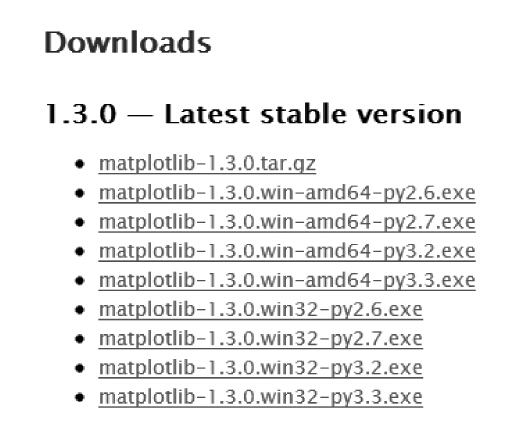
图2-1 Matplotlib下载页面
假设计算机的操作系统是32位，Python版本号为2.7，则下载安装matplotlib-1.3.0.win32-py2.7.exe，如果操作系统是64位的，Python版本号为2.7，则下载安装matplotlib-1.3.0.win-amd64-py2.7.exe。
在类UNIX平台上（以UBUNTU为例），可使用下面的命令安装Python及相关科学计算包：
代码详情
1 | sudo apt-get install python-numpy python-scipy python-matplotlib ipython ipython-notebook python-pandas python-sympy python-nose |
2.安装WinPython集成计算包
WinPython集成计算包集成了Numpy等第三方Python科学计算库，在winpython.sourceforge.net下载并安装WinPython后，Numpy等计算库和Python 2.7会一同被安装。此外，WinPython附带一款非常不错的IDE开发调试环境：Spyder，如图2-2所示是Spyder的界面截图。
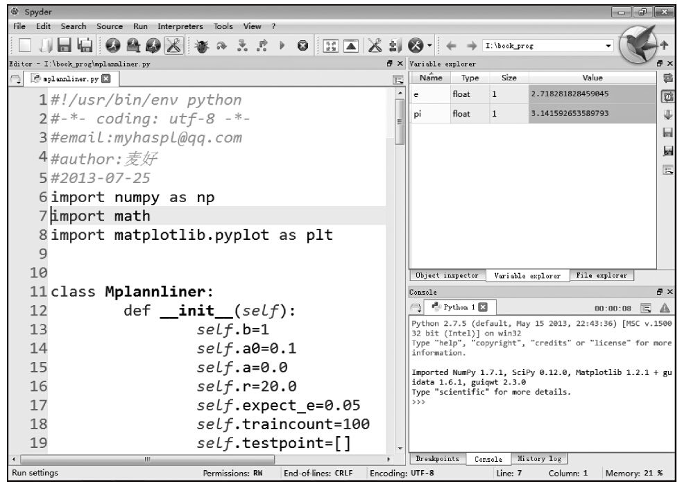
图2-2 Spyder界面
在图2-2所示的界面中，右上角是类似于MATLAB的“工作空间”，可很方便地观察和修改变量（包含多维数组）的值，同时还拥有方便用户的智能代码（Call-Tips和Auto-Complete）功能，如图2-3所示。
在IDE开发窗口下方的Console栏可以使用pdb（类似于C语言的GDB调试工具）调试Python代码，也可以通过Spyder的调试菜单进行调试。下面是pdb调试工具的使用帮助：
代码详情
1 | >>> debugfile(r'K:\book_prog\zxecf.py'， |
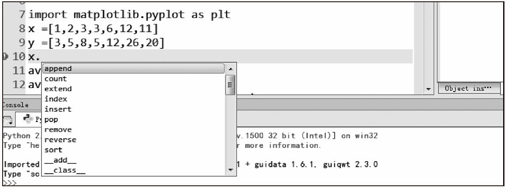
图2-3 智能代码功能
常用的pdb调试命令如下：
·h(elp)：打印当前版本pdb可用的命令。
·disable/enable：禁用/启用断点。
·n(ext)：让程序运行下一行。
·c(ont(inue))：让程序正常运行，直到遇到断点。
·j(ump)：让程序跳转到指定的行数。
·b(reak)：设置断点，例如“b 23”，就是在当前脚本的23行打上断点，函数名也可作为参数。
·condition：设置条件断点。下面语句就是对第5个断点加上条件x>=8：
代码详情
1 | (Pdb) condition 5 x>=8 |
·cl(ear)：清除指定参数的断点或所有断点。
·p：打印某个变量。比如：
代码详情
1 | (Pdb) p _file |
·！：感叹号后面跟着语句，可以直接改变某个变量。
·q(uit)：退出调试。
综上所述，在Spyder的帮助下，能更高效地开发与调试Python代码，因此笔者推荐在开发环境中安装WinPython，方便快捷，有利于机器学习算法代码的编写。此外，安装好WinPython后，请在windows操作系统的“开始→程序→WinPython→WinPython Control Panel”中进行注册。
2.2.2 OpenCV安装与配置
OpenCV是Intel开源计算机视觉库，它由一系列C函数和少量C++类构成，实现了图像处理和计算机视觉方面的很多通用算法。OpenCV拥有包括300多个C函数的跨平台的中高层API。它不依赖于其他的外部库（尽管也可以使用某些外部库），对工程应用来说，OpenCV是一个非常好的计算平台，因为它遵守BSD开源协议，对非商业应用和商业应用都是免费。
OpenCV的主要功能有：图像数据操作，图像/视频的输入输出，矩阵/向量数据操作及线性代数运算，支持多种动态数据结构、基本图像处理、结构分析、摄像头定标、运动分析、目标识别、基本的GUI和图像标注。而且，OpenCV提供了官方的Python接口，其使用方法和C语言接口基本一致，只是一些函数和结构体可能会有不同。另外，函数通过参数来返回值时一次会返回多个值。
在Windows上下载安装OpenCV的可执行文件后可直接运行，下载页面为http://opencv.org/downloads.html 。
其在Linux平台上的安装方式在OpenCV官网上有介绍，具体安装顺序如下：
1）安装基本软件包。GCC 4.4.x或更高版本、CMake或更高版本、Git、GTK+2.x或更高版本、including headers(libgtk2.0-dev)、pkgconfig、Python 2.6或更高版本、Numpy 1.5或更高版本、python-dev、python-numpy、ffmpeg或libav开发包、ibavcodec-dev、libavformat-dev、libswscale-dev。
2）安装可选软件包。libdc13942.x、libjpeg-dev、libpng-dev、libtiff-dev、libjasper-dev。
3）在http://opencv.org/downloads.html 下载其源代码，解压后，进入目录以源代码编译方式安装OpenCV。
代码详情
1 | $cd ~/opencv |
OpenCV官方提供了Python绑定库，以Python2.7为例讲述了安装绑定库的方法，在Windows下，将它复制到Python的目录下，将opencv\build\python\2.7下的cv2.pyd文件复制到python-2.7.5\Lib\site-packages目录下即可。在Linux下安装了Python后，要确保usr/lib/python2.7/site-packages下有cv.py和cv2.so文件，如果没有，将这两个文件复制过来即可。
2.2.3 mlpy安装与配置
mlpy是基于NumPy/SciPy和GSL构建的Python模块，它提供了高层函数和类，允许使用少量代码来完成复杂的分类、特征提取、回归、聚类等任务。mply为免费软件，建立在GPL3开源协议之上。
mlpy在Windows下的安装方式较简单，可以直接在下面网址下载可执行文件安装：
http://sourceforge.net/projects/mlpy/files/
在类Linux平台上，其安装方法稍稍复杂一些，以Linux、OSX和FreeBSD为例，安装配置mlpy，需要先安装配置好以下软件：
·GCC
·Python且版本>=2.6或为3.X
·NumPy且版本>=1.3.0
·SciPy且版本>=0.7.0
·GSL且版本>=1.11
然后，在上面网址中找到mlpy源代码包下载，并解压安装。假设GSL头文件和库文件没有安装在系统的标准位置，在这种情况下，mply的安装方式如下：
代码详情
1 | $python setup.py build_ext --include-dirs=/path/to/header --rpath=/path/to/lib |
如果GSL安装在标准位置，则只需要运行上述命令中的最后一行。
2.2.4 BeautifulSoup安装与配置
BeautifulSoup是用Python写的一个HTML/XML的解析器，它可以很好地处理不规范标记，并生成剖析树，通常用来分析“爬虫”抓取的Web文档，或者直接充当部分“爬虫”的角色。对于不规则的HTML文档，有补全功能。有了它，解析与分类网页就方便多了，节省了开发者的很多时间和精力。
安装BeautifulSoup很简单，在Windows平台和Linux平台上都是使用的传统第三方库安装方式。首先下载BeautifulSoup源码，其官网为：http://www.crummy.com/software/BeautifulSoup/ 。
然后解压后运行以下命令：
代码详情
1 | python setup.py install |
此外，在UBUNTU下还可以使用系统包管理器安装。
代码详情
1 | $ apt-get install python-bs4 |
2.2.5 Neurolab安装与配置
NeuroLab是一个简单而强大的、用Python编写的神经网络库，包括基础神经网络、训练算法，并具有弹性的构架，可创建其他网络，它用纯Python和numpy写成。API的使用与MATLAB的神经网络工具箱类似，具有弹性的网络配置和学习算法，可以改变神经网络和学习算法的类型、训练、误差、初始函数和激活函数等神经网络参数。
Windows和Linux下的安装方式如下。
首先在下面的页面下载Neurolab：
http://code.google.com/p/neurolab/downloads/list
然后解压后运行如下命令：
代码详情
1 | python setup.py install |
2.2.6 R安装与配置
R的原始码可自由下载使用，也有已编译的执行档版本可以下载，可在多种平台下运行，包括类UNIX（包含FreeBSD和Linux）、Windows和MacOS。
WINDOWS安装方式如下。
首先访问其官网下载页面：
http://ftp.ctex.org/mirrors/CRAN/
然后下载安装可执行文件安装即可。
UBUNTU下的安装方式如下：
代码详情
1 | $ sudo apt-get update |
2.3 小结
“不要重复造轮子”（Stop Trying to Reinvent the Wheel），这可能是每个软件工程师入行时被告知的第一条准则。在轮子适合“机器学习”这台车的情况下，机器学习算法才能跑得更好，适合的科学计算平台就是机器学习的“轮子”。
笔者认为，作为机器学习这驾马车的“轮子”应该具备以下特征：
·开源免费，且开源协议友好，例如：LGPL协议或BSD协议，这样更有利于商业应用。
·平台有文档，接口规范，能实际代码用例最好。
·配置简单灵活，支持的操作系统平台多，运行速度快。
·代码结构清晰、简单，便于使用者修改这个“轮子”，通俗地说：移植性强。
本书采用的计算平台在本章都一一列出其安装和配置方法。算法是一种计算思维的描述，万变不离其宗，好的工具原理都差不多。
也许随着时间的推移，算法在改进，更好的“轮子”将出现，所以不一定采用本书上所写的这些平台作为机器学习实验和应用的工具，但有一条原则：功能强大的计算平台不一定适合所有的工程，一切以适用为准。
第二部分 基础篇
合抱之木，生于毫末；九层之台，起于累土；千里之行，始于足下。
——老子
第3章 计算平台应用实例
3.1 Python计算平台简介及应用实例
目前，科学计算平台很多，在本书中，使用Python编写的机器学习算法用到的计算平台有：Numpy等科学计算包、OpenCV的Python绑定库、mlpy机器学习库、BeautifulSoup网页解析库、Neurolab神经网络库等，所有平台均为开源免费软件。本章将讲解这些计算平台的操作，并解析一些基础实例应用。
3.1.1 Python语言基础
1989年圣诞节期间，吉多·范罗苏姆为了打发假日时间，决心开发一个新的脚本解释程序，作为ABC语言的一种继承，就这样，Python在吉多手中诞生了。Python的设计哲学是优雅、明确、简单。Python提供了丰富的API和工具，使程序员能使用C语言、C++、Cython编写扩充模块。Python编译器本身也可以被集成到其他需要脚本语言的程序中。此外，很多人把Python作为一种“胶水语言”使用，用它将其他语言编写的程序进行集成和封装。
Python包含了一组完善而且容易理解的标准库，能够轻松地完成很多常见的任务，且代码语法简洁、清晰，使用缩进定义语句块，具备很高的可读性。由于Python语言具有简洁、易读以及可扩展性，在国内外用Python做科学计算的研究机构、商业公司日益增多，比如：三大经典科学计算库Numpy、SciPy和matplotlib均扩展了Python，通过Python可以轻松完成快速数组处理、数值运算和绘图任务。
1.Python基本数据类型
Python是解释运行的动态语言，解释器的提示符为“>>>”。Python的基本数据类型包括数字型、字符串型和列表，此外还可以用类型表示函数、模块、类型本身、对象的方法、编译后的Python代码、运行时信息等。
1）数字型，可将Python作为一个计算器使用，在计算过程中可使用“+”（加）、“-”（减）、“*”（乘）、“/”（除）、“（”、“）”以及“%”（取余）等操作符。此外，Python用“#”表示其后的内容是注释。下面代码演示了其基本的计算功能和注释的使用。
代码详情
1 | >>> 2+2 |
Python使用“=”进行赋值操作，赋值操作不会返回任何结果，也可以在同一行中连接赋值，赋值语句将从右到左依次完成赋值。下面的代码对变量进行复数和实数的赋值。
代码详情
1 | >>> c=5.2-6.5j###复数 |
变量在使用前，要处于定义状态（即已经赋值），否则会出错。下面代码试图对未定义的变量myx进行操作结果出错了。
代码详情
1 | >>> myx # 访问未定义的变量 |
在Python计算中可使用浮点数。如果在计算过程中出现了浮点数，则整型会自动转换为浮点型计算；如果全是整型，则计算结果也为整型。在下面例子中，第一行代码两个操作数均为整型，返回的结果并不会精确为整型；而在第二行代码中，第一个操作数7.0为浮点型，返回的结果为浮点数。（以下代码请在Python解释器下运行）。
代码详情
1 | >>> 7/3 |
复数运算使用(real+imagj)的形式，也可使用complex(real，imag)创建一个复数对象，其中real表示实部，imag表示虚部。下面是一些复数计算的例子。
代码详情
1 | >>> 2+6J |
变量“_”表示刚计算的结果。下面代码通过计算（3+2）×6演示了该变量的使用。
代码详情
1 | >>> 3+2 |
2）字符串型。Python的字符串通常用单引号和双引号包围的形式表示，通过print语句可将字符串输出到输出设备中（默认情况下输出到屏幕）。此外，Python 2.0及以后的版本支持Unicode字符串，中文字符一般使用Unicode编码（国际组织制定的容纳世界所有文字和符号的字符编码方案，用0~0x10FFFF映射字符，最多可以容纳1114112个字符），在前面加u表示后面是Unicode字符串。下面的代码演示了Unicode字符的定义与使用、字符串的输出等操作。
代码详情
1 | >>> 'spam eggs' |
Python的字符串可视为列表（数组），使用“[索引]”的方式能对它进行切片操作（索引从0开始），使用“+”可对字符串进行连接。下面的代码演示了字符串的连接、切片等操作。
代码详情
1 | >>> word = 'Help' + 'A' |
Python的字符串可使用转义字符，方法是在特殊字符前加上“\”。主要的转义字符有：
\’ 单引号
\” 双引号
\a 发出系统响铃声
\b 退格符
\n 换行符
\t 横向制表符
\v 纵向制表符
\r 回车符
\f 换页符
\\ \
\o 八进制数代表的字符
\x 十六进制数代表的字符
\000 终止符，\000后的字符串全部忽略
此外，Python的字符串相比其他程序语言多了一种描述方式，就是用3个引号标示字符串，其功能是将字符串内容原样输出，如果字符串本身包括换行，则输出换行，如果包括特殊字符，则字符串无需使用转义字符。下面的代码演示了中文字符串的输出、转义字符的使用、字符串切片、统计长度、三引号使用等操作。
代码详情
1 | >>> 'doesn\'t' |
Python字符串的三引号表示方式意义重大，用它可以在CGI（CGI允许Web服务器执行外部程序，并将它们的输出发送给Web浏览器）程序中轻松输出HTML代码。下面是CGI的“Hello World”程序：
代码详情
1 | #!/usr/bin/env python |
3）列表。Python可将不同类型（包括复合类型本身）的值组成复合类型，列表就是复合类型之一。与字符串相同，列表可以使用切片操作，其索引也是从0开始的。此外，统计列表的长度使用len函数，使用“*”将生成新列表，其元素由源列表重复填充，使用“+”可连接列表。下面的代码演示了列表的定义、连接、重复填充、切片、统计长度等操作。
代码详情
1 | >>> a = ['hello'， |
列表和字符串也可称为序列，序列由若干个元素组成，每个元素的先后顺序明确，不能更改。
2.Python语句
1）条件语句。if语句的作用是判断条件是否成立，如果成立，则执行后面的语句块；if…elif…elif语句可用于对多个条件进行判断，并执行最先满足条件的语句块；else语句表示所有条件都不成立时执行。下面的例子展示了if语句的使用方法，功能是对输入数字的范围进行判断，并将其中的负数转变为0。
代码详情
1 | >>> x = int(raw_input("Please enter an integer: ")) |
2）循环语句。for语句表示循环，它与C语言中的for语句略有不同。C语言的for语句可定义步长和终止循环条件，而Python的for语句在Python的序列（列表、字符串等）中迭代，每次只操作其中一项。下面的代码在单词列表中迭代，每次迭代输出单词及其长度。
代码详情
1 | >>> # Measure some strings: |
也可以在迭代过程中修改序列。下面的例子运行结果是在列表迭代过程中修改了列表本身。
代码详情
1 | >>>words = ['cat'， |
3）range函数。for语句仅能在列表等序列中进行迭代，从表面上来看，它比C语言的for循环功能弱很多，其实不然，有了range函数，其功能远比C语言的for循环强大。range函数可产生符合某种规律的列表等序列。下面代码产生0~9共10个数字，增长步长为1。
代码详情
1 | >>> range(10) |
range函数还可以产生更复杂的序列，常用调用格式为：
代码详情
1 | range(起始值，终止值，步长 |
其中起始值和步长可以省略，起始值默认为0，步长默认为1。
代码详情
1 | >>> range(5， |
下面的代码是range函数与for语句组合的应用，输出列表元素的索引及值。
代码详情
1 | >>> a = ['Mary'， |
下面的代码完成1至10中奇数的累加。
代码详情
1 | >>> mysum=0 |
4）break与continue。break语句结束本层循环，continue语句忽略下面的语句继续本层的下次循环。下面的代码使用break语句，查找2至10以内（不含10）的素数，如果不是素数，则分解因数。
代码详情
1 | >>> for n in range(2， |
下面的代码使用了continue语句，判断50至60之间的数哪些是奇数，哪些是偶数。
代码详情
1 | >>> for num in range(50， |
5）while循环。在while循环中会一直执行后面的语句块，直到条件不满足才终止。下面的代码用于在列表中循环，并输出元素。
代码详情
1 | >>> a=range(10) |
6）函数定义。Python使用def关键字定义函数。下面的代码定义了屏幕输出函数show，参数是要输出的内容。
代码详情
1 | >>> def show(mess="hello"): |
下面的代码定义了斐波那契数列的计算函数fib。
代码详情
1 | >>> def fib(n): |
3.Python的元组、集合以及字典
1）tuple元组。tuple元组类似列表，不同的是它的内容不能修改。Python元组的定义方式是使用圆括号包含元素或直接列举元素。下面的代码将定义x为元组类型，当对x[0]（x的第一个元素）进行修改时，Python解释器提示错误。
代码详情
1 | >>> x = 10， |
2）Sets集合。Python使用方括号定义Sets集合，集合的特点是无重复元素，集合中的元素无先后顺序，也不能用索引进行管理。下面的代码定义了一个水果列表，通过set函数转换为集合，去除重复元素。
代码详情
1 | >>> basket = ['apple'， |
下面的代码通过in操作检查成员与集合的关系。
代码详情
1 | >>> 'orange' in fruit ###集合类是否有成员 |
既然是集合，当然能对它进行集合的数学运算。Python集合支持union（联合或并）、intersection（交）、difference（差）和sysmmetric difference（对称差）等操作，可通过“-”、“|”、“&”、“^”操作符计算集合的差集、并集、交集和对称差集。下面的代码演示了对集合a和b的运算。
代码详情
1 | >>> a = set('abracadabra') |
3）Dictionaries字典。Dictionaries（字典）是一种散列结构，可理解为Hash（散列）类型。字典由若干个键值对组成，键值对是一种映射，一个键对应于一个值。键值对由两个部分组成，第一部分是键，键在字典中必须保持唯一，字典与列表和元组不同，列表和元组属于序列，元素以先后顺序来管理，而字典的元素是以键为单位对值进行管理的；第二部分为值，值与键一一对应，值可以彼此相同。
Python使用花括号定义字典，使用类似索引的方式存取值，但索引为键。此外，可使用del操作删除键值对，使用keys()方法返回字典变量存储的所有键。下面的代码演示了一个学生学号的字典变量，以及如何对学生信息进行删除、查询等操作。
代码详情
1 | >>> tel = {'张三 |
上面代码中，“\xcd”等为汉字在Python内部的编码。
4.Python类
Python语言有强大的面向对象编程能力。Python和C++等语言一样拥有类机制，Python类的定义方式如下：
代码详情
1 | class 类名 |
下面的代码定义了一个复数类Complex，同时定义了类的实例变量x，最后输出该变量的实部和虚部。Complex类很简单，在类构造函数中对实部成员和虚部成员进行赋值。
代码详情
1 | >>> class Complex: |
5.Python异常处理
Python的异常处理能力很强大，可准确反馈出错信息。在Python中，异常是对象，可对它进行操作。所有异常都是基类Exception的成员，从基类Exception继承，在exceptions模块中定义。Python异常处理的格式如下：
代码详情
1 | try : |
下面的代码将检查输入是否为有效数字。程序通过将输入转换成整型来测试是否为数字，如果不是数字，int函数将触发异常ValueError，异常处理程序提示“哦！输入不是有效数字，请重新输入（Oops!That was no valid number.Try again…）”，直到输入正确格式的数字后，程序才退出。
代码详情
1 | >>> while True: |
前面演示了异常的被动触发，Python还能主动触发异常，处理方式为：先通过raise语句抛出异常，然后用except捕捉异常。下面的代码演示raise主动抛出NameError异常后被捕捉，输出“An exception flew by!”后，继续抛出异常，以便给更外层的异常处理函数继续处理。
代码详情
1 | >>> try: |
以上简要介绍了Python编程语言的基本语法，它和C++有几分相似，有一定编程基础的读者应该都能看懂。Python是一门上手很快的编程语言，它与其他语言最大的不同就是它区分语句块时使用的不是括号，而是每行语句前面的空格数量。因此，Python代码非常工整和漂亮，它严格遵守代码语句块的缩进原则，可依靠缩进判断语句块的范围。
3.1.2 Numpy库
本书中介绍的机器学习算法大部分是调用Numpy库来完成基础数值计算的。下面了解一下Numpy库的基本使用方法。
1.ndarray数组基础
Python中用列表保存一组值，可将列表当成数组使用。此外，Python有array模块，但它不支持多维数组，无论是列表还是array模块都没有科学运算函数，不适合做矩阵等科学计算。因此，Numpy没有使用Python本身的数组机制，而是提供了ndarray数组对象，该对象不但能方便地存取数组，而且拥有丰富的数组计算函数，比如向量的加法、减法、乘法等。
使用ndarray数组，首先需要导入Numpy函数库，可以直接导入该函数库（本节频繁使用Numpy库的函数，因此采用这种方法）。
代码详情
1 | from numpy import * |
或者指定导入库的别名。
代码详情
1 | import numpy as np |
下面正式进入Numpy的数组世界。如果没有说明，所称数组均为Numpy的数组对象，与Python的列表和array模块无关。
1）创建数组。创建数组是进行数组计算的先决条件，可通过array()函数定义数组实例对象，其参数为Python的序列对象（比如列表）。如果想定义多维数组，则传递多层嵌套的序列。例如下面这条语句定义了一个二维数组，其大小为（2，3），即共有2行，每行各3列。
代码详情
1 | a = np.array([[ 1.， |
上面语句定义了如表3-1所示的数组。
表3-1 二维数组结构
接着使用array()函数创建一个（2，3）大小的数组变量x。
代码详情
1 | >>> from numpy import * |
以刚才定义的x变量为例，来熟悉ndarray数组对象的主要属性。ndarray数组对象拥有ndarray.ndim、ndarray.shape、ndarray.size、ndarray.dtype、ndarray.itemsize、ndarray.data等属性。
ndarray.ndim：数组的维度数。
代码详情
1 | >>> x.ndim |
ndarray.shape：数组的维数，返回的格式为（n，m），其中n为行数，m为列数。
代码详情
1 | >>> x.shape |
ndarray.size：数组元素的总数。
代码详情
1 | >>> x.size |
ndarray.dtype：数组元素的类型，比如：numpy.int32（32位整型）、numpy.int16（16位整型）及numpy.float64（64位浮点型）。
代码详情
1 | >>> x.dtype |
ndarray.itemsize：数组中每个元素占有的字节大小。
代码详情
1 | >>> x.itemsize |
ndarray.data：数组元素的缓冲区。
代码详情
1 | >>> x.data |
下面是一个关于Numpy的ndarray数组的例子，演示了ndarray数组的基本操作。
首先，创建a和b两个数组对象。其中，a对象使用Numpy的arange函数产生了等差序列数组（Numpy的arange函数与Python的range函数类似，其参数依次为开始值、结束值、步长），并用reshape函数创建了指定形状的新数组。a的大小为（3，5）；b的大小为（1，3）。
代码详情
1 | >>> a = arange(15).reshape(3， |
接着读取a和b的主要属性，如：shape、ndim、dtype、itemsize等。此外，下面的代码还演示了type函数的使用，type函数会返回对象的类型，对于ndarray对象而言，其类型为numpy.ndarray。
代码详情
1 | >>> a.shape |
最后，对a和b对象重新赋值，以便进一步了解ndarray数组的元素类型。下面分别演示了int32、float64等类型的使用方法，最后演示了不常见的复数作为数组元素（数组c的元素）的情况。
代码详情
1 | >>> a = array( [2， |
2）特殊数组。Numpy的特殊数组主要有以下几种：
·zeros数组：全零数组，元素全为0，使用zeros函数创建。
·ones数组：全1数组，元素全为1，使用ones函数创建。
·empty数组：空数组，元素全近似为0，使用empty函数创建。
下面的代码依次演示了全零数组、全1数组、空数组的创建方法。
代码详情
1 | >>> zeros( (3， |
3）序列数组。刚才已经提到过arange函数，它与Python的range函数相似，但它属于Numpy函数库，其参数依次为开始值、结束值、步长。此外，还可使用linspace函数创建等差序列数组，其参数分别为起始值、终止值、元素数量。下面的代码分别演示了arange函数和linspace函数的用法。
代码详情
1 | >>> arange( 10， |
4）输出数组。可使用print输出Numpy的数组对象。下面的代码是一维数组的创建和输出。
代码详情
1 | >>> a = arange(6) # 一维数组 |
下面的代码是二维数组的创建和输出，从输出结果可清晰地看出b的大小为（4，3）。
代码详情
1 | >>> b = arange(12).reshape(4， |
5）数组索引。Numpy数组的每个元素、每行元素、每列元素都可以用索引访问，不过要注意索引是从0开始的。比如，某数组大小为（2，3），则第2行第1列元素的索引是[1，0]。下面以三维数组为例，演示数组的创建、输出及索引。
首先创建三维数组c，并输出其元素。
代码详情
1 | >>> c = arange(24).reshape(2， |
三维数组c可表示为如图3-1所示的形式。
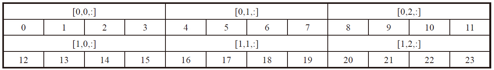
图3-1 三维数组c
图3-1中单元格上方标注了[0，0，:]、[0，1，:]等索引，索引中的“:”表示该维度内的所有元素。对照图3-1，查找索引[1，2，:]处（第2行第3列）的所有元素和索引[0，1，2]处的元素，可得出元素为[20，21，22，23]和6。下面编写代码验证一下。
代码详情
1 | >>> print c[1， |
6）数组运算。数组的加减乘除以及乘方运算方式为，相应位置的元素分别进行计算。比如：
数组加法：array([20，31，42，53])=array([20，30，40，50])+array([0，1，2，3])
数组减法：array([20，29，38，47])=array([20，30，40，50])-array([0，1，2，3])
数组乘法：array([[2，0]，[0，4]])=array([[1，1]，[0，1]])*array([[2，0]，[3，4]])
数组乘方：array([0，1，2，3])的二次方=array([0，1，4，9])
数组除法：array([20.，15.，13.33333333，12.5])=array([20，30，40，50])/array([1，2，3，4])
下面的代码演示了数组的加、减、乘、除及更多运算（关键代码处注释了运算类型）。
代码详情
1 | >>> a = array( [20， |
7）数组的拷贝。数组的拷贝分为浅拷贝和深拷贝两种，浅拷贝通过数组变量的赋值完成，深拷贝使用数组对象的copy方法。
浅拷贝只拷贝数组的引用，如果对拷贝进行修改，源数组也将修改。下面的代码演示了浅拷贝的方法。
代码详情
1 | >>> a=ones((2， |
深拷贝会复制一份和源数组一样的数组，新数组与源数组不会存放在同一内存位置中，因此，对新数组的修改不会影响源数组。下面的代码演示了b使用copy方法从源数组a复制一份拷贝的情况。可以看到，修改b后，a仍然不变。
代码详情
1 | >>> a=ones((2， |
2.矩阵
1）创建矩阵。Numpy的矩阵对象与数组对象相似，主要不同之处在于，矩阵对象的计算遵循矩阵数学运算规律。矩阵使用matrix函数创建，以（2，2）大小的矩阵（2行2列）为例，可用以下两种方式定义参数：
‘第1行第1列元素第1行第2列元素；第2行第1列元素第2行第2列元素’
[[第1行第1列元素，第1行第2列元素]，[第2行第1列元素，第2行第2列元素]]
下面的代码演示了矩阵的创建及类型查询方法。
代码详情
1 | >>> A = matrix('1.0 2.0; 3.0 4.0')###矩阵 |
2）矩阵运算。矩阵的常用数学运算有转置、乘法、求逆等。下面的代码演示了矩阵的基本运算（请先导入numpy库再执行以下代码）。
代码详情
1 | >>> A.T #转置 |
注意 关于Numpy及其函数的更多信息可查阅Numpy官网：
http://wiki.scipy.org/Numpy_Example_List
3.1.3 pylab、matplotlib绘图
为了验证算法的有效性，机器学习通常需要进行绘图，pylab、matplotlib等模块是专业的Python绘图模块。
1.sin函数绘制
在二维坐标系中绘图的基本方式是使用plot方法，其参数分别为x轴数值、y轴数值，这里的数值可以是单个数也可以是Numpy的一维数组对象。下面的代码演示了sin函数图像的绘制。
代码详情
1 | import numpy as np |
如图3-2所示为sin函数图像效果图，从效果图上观察，曲线清晰，坐标系的标尺根据绘制参数已进行自动调整。
2.cos函数绘制
下面的代码使用plot方法绘制cos函数图像。
代码详情
1 | import numpy as np |
绘图效果如图3-3所示。
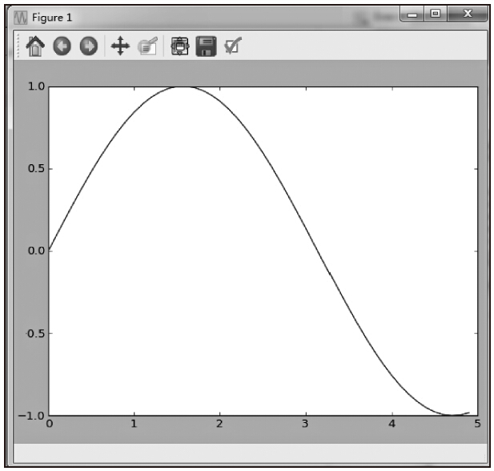
图3-2 sin函数图像效果图
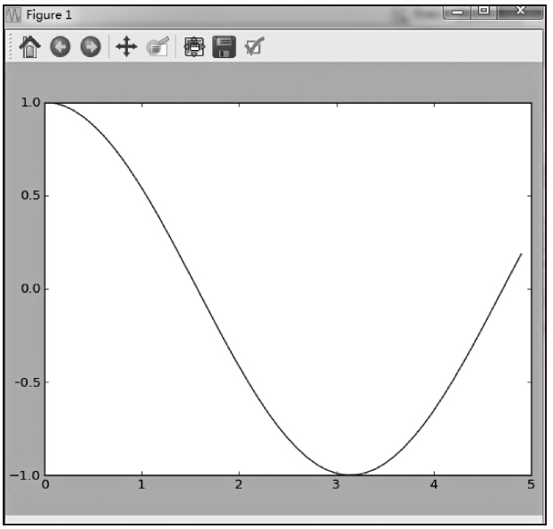
图3-3 cos函数图像效果图
进一步扩充图3-3所示cos函数绘制范围，将自变量x的范围扩大到[-8，8]，三角函数cos图像的周期性一目了然，如图3-4所示。下面是绘制代码。
代码详情
1 | import numpy as np |
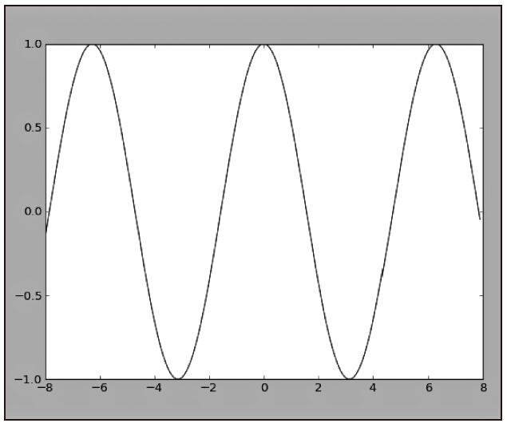
图3-4 cos函数周期图像
图3-5 树叶写真
3.1.4 图像基础
1.数字图像
数字图像是指将二维图像用有限数字的数值像素表示，像素表面上看起来不像分离的点，但实质它们就是点。例如，图3-5所示的树叶写真就是由很多像素点组成的，但用肉眼无法观察到像素点的存在。
我们使用一款取像素的软件对图3-5进行分析，如图3-6所示。可以看到，线的十字交叉处就是一个像素点，软件显示，在图像的[459，530]处像素点的值为（64，77，67）。中间是放大的这部分图片区域，放大后，图像仿佛由一个个小的颗粒组成，将这些颗粒进一步放大，就能看到颗粒是由若干个像素点组成，如果将图像完全放大，就能看清每个像素点的存在了。
（64，77，67）就是图3-6中某点的像素值。每个像素点可有各自的颜色值，可采用三原色显示，因而又分成红、绿、蓝三个子像素（RGB色域），或者青、品红、黄和黑（CMYK色域），通常计算机的图像采用的像素标准为红、绿、蓝三个子色。图3-6所示十字交叉处的像素值含义为：红色值为64，绿色值为77，蓝色值为67。
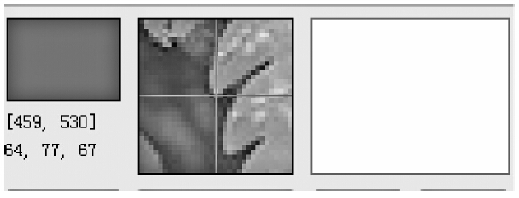
图3-6 树叶放大的颗粒效果（附彩图）
分辨率是度量图像内数据量多少的一个参数，通常表示成每英寸像素数和每英寸点数。分辨率越高，图像包含的数据越多，就越能表现更丰富的细节，图形文件就越大。从图3-7能较直观地看出这个效果，随着分辨率的增加，字母R越来越清晰。
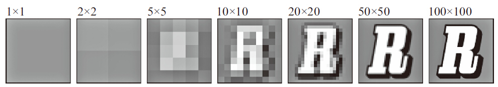
图3-7 R字母在不同分辨率下的效果
2.OpenCV的Python绑定库实例
假设图像的分辨率为800×600，则每一条水平线上包含有800个像素点，共有600条线，在计算机中可以使用一个800列600行的数组来表示该图像。数组的每个元素就是一个像素点，比如，第100行第200列的元素就是图像的第100条水平线第200个像素点的像素值。那么如何提取图像中的像素值呢？
可以使用OpenCV的Python绑定库完成这些操作。OpenCV作为跨平台的计算机视觉库，拥有包括500多个跨平台图像处理的中、高层API，对图像像素的读写自然不在话下。
使用OpenCV函数库之前，需要先导入其Python绑定库。
代码详情
1 | import cv2 |
OpenCV函数对像素点的读写操作可理解为对图像矩阵的存取，OpenCV图像矩阵中每个像素点的值由蓝色值、绿色值、红色值3个部分组成，三色值组合成一个一维数组。假设A图像的高度（行数）为H，宽度（列数）为W，则A图像对应的图像矩阵大小为H×W×3，A图像矩阵可表示H行W列（共H×W个）像素点的组合。
如果想读取A图像150行20列处的像素值（设A的图像矩阵变量为img_a），可进行如下访问：
代码详情
1 | img_a[150， |
下面的代码中第1行是150行20列处像素的蓝色值，第2行是150行20列处像素的绿色值，第3行是150行20列处像素的红色值。
代码详情
1 | blue=img_a[150， |
下面以几个经典实例演示OpenCV的Python绑定库的使用方法。
1）显示图像。程序原理是，首先使用imread（文件名）读取图像文件，生成图像矩阵，然后调用imshow方法显示图像，调用waitKey()方法等待按键，最后调用destroyAllWindows()销毁窗口，这样可方便查看图像。
代码详情
1 | #!/usr/bin/env python |
效果如图3-8所示。
2）随机生成像素。程序的原理是，首先产生空图像矩阵，然后确定矩阵的2000个随机位置，最后将随机位置处的像素值设置为随机数数组。下面是源代码。
代码详情
1 | #!/usr/bin/env python |
图3-8 显示图像
随机产生像素点后，创建新窗口并显示含彩色雪花点的图像，运行以上代码：
代码详情
1 | 产生空图像矩阵 |
效果如图3-9所示。
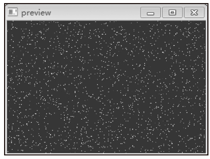
图3-9 随机产生若干像素点（附彩图）
3）获取图像大小。程序通过图像矩阵的shape属性获取图像大小，shape返回tuple元组，元组的第1个元素为高度，第2个元素为宽度，第3个元素为3（像素值由三原色组成）。
代码详情
1 | #!/usr/bin/env python |
运行效果如下，程序返回图像的高为435，宽为656。
代码详情
1 | loading test1.jpg ... |
4）调节图像亮度。调节的原理是，将像素值变小，则将亮度调小，全部色彩变暗；将像素值变大，则将亮度调大，全部色彩变亮。
代码详情
1 | #!/usr/bin/env python |
上面程序将图像每个像素值减少，实现图像亮度变暗的效果，如图3-10所示。然后每个像素值增大，实现图像亮度变亮的效果。
如图3-11所示为图像变亮效果，因为像素值过大，已经出现失真现象。
图3-10 图像变暗（附彩图）
图3-11 图像变亮（附彩图）
5）图像日落效果。日落效果的生成原理很简单，将蓝色值和绿色值设为原来的70%，红色值不变，设图像矩阵为img。代码如下：
代码详情
1 | #生成日落效果 |
完整代码如下：
代码详情
1 | #!/usr/bin/env python |
运行效果如图3-12所示。
图3-12 图像日落效果（附彩图）
6）负片与水印效果。生成负片的原理是，将像素的三色值设为（255-原值）。设图像矩阵为img，代码如下：
代码详情
1 | #生成负片 |
水印效果的原理是，调用putText函数，以图像矩阵为第1个参数，输出内容为第2个参数，在图像上直接输出水印文字。代码如下：
代码详情
1 | #加上水印 |
负片与水印效果的完整代码如下：
代码详情
1 | #!/usr/bin/env python |
运行效果如图3-13所示。
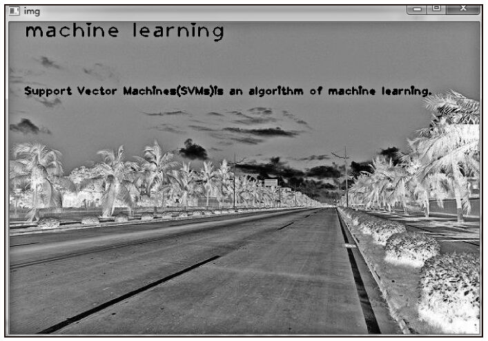
图3-13 负片和水印效果（附彩图）
7）图像平铺。图像平铺的原理是，首先计算平铺后的图像大小，生成同样大小的空白图像，然后在空白图像中逐个像素复制图像，直接将空白图像像素值设置为平铺后该位置对应的像素值，复制的顺序是逐行复制，横向平铺5个图像，纵向平铺2个图像，最后显示图像效果。下面是完整代码：
代码详情
1 | #!/usr/bin/env python |
运行效果如图3-14所示。
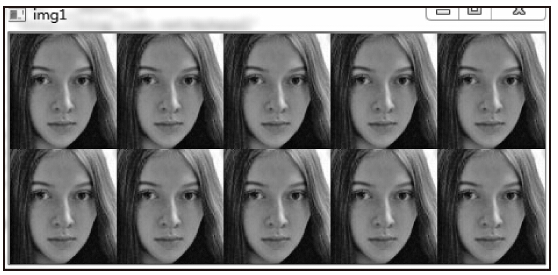
图3-14 图像平铺
8）转置并平铺图像。与刚才的例子相似，但多了一步转置操作。转置的原理是将图像矩阵转换为它的转置矩阵，转置算法是将新图像矩阵[h，w]处的像素设为原图像矩阵[w，h]处的值（这里的值是一维矩阵），相当于矩阵转置的算法。设myimg1为图像矩阵，编写代码如下：
代码详情
1 | for now_y in xrange(0， |
转置并平铺图像完整代码如下：
代码详情
1 | #!/usr/bin/env python |
运行效果如图3-15所示。
图3-15 图像旋转和平铺
3.1.5 图像融合与图像镜像
本节的两个例子是对上节内容精华的总结，较好地综合了OpenCV的基础功能。
1.图像融合
图像融合的原理是，让新图像的每个像素成为两个源图像中对应像素的平均值之和，即：将两个图像的像素值取50%后相加。为简化计算，直接选取其中一个源图像作为新图像，设新图像矩阵为myimg2，编写代码如下：
代码详情
1 | #每个像素为 |
完整代码如下（关键之处有注释）：
代码详情
1 | #!/usr/bin/env python |
效果如图3-16所示。
图3-16 图像融合
2.图像镜像
图像纵向镜像的原理是，首先获取图像的宽度，将宽度的50%取整后作为图像的纵向中线；然后以中线为轴，将图像左边反向复制到图像右边，使图像最右边一列的像素点等于图像最左边一列的像素点。比如，图像大小为200×300（高200，宽300），第180行170列（索引为[180，170，:]）的像素点值为第180行第130列的像素点值（300-170=130）。
横向镜像与纵向镜像类似，不同之处在于将高度的50%取整后作为图像的横向中线，复制时是最下边一行的像素点值等于最上边一行的像素点值。
纵向镜像可按如下形式编写代码：
代码详情
1 | #纵向生成镜像 |
下面的代码演示了图像的纵向镜像。
代码详情
1 | #!/usr/bin/env python |
运行效果如图3-17所示。
图3-17 图像镜像
3.1.6 图像灰度化与图像加噪
1.图像灰度化
图像灰度化的原理是，彩色图像中的每个像素的颜色由R、G、B三个分量决定，而每个分量的取值范围为0~255。而灰度图像是R、G、B三个分量相同的一种特殊的彩色图像，其算法有以下两种：
1）求出每个像素点的R、G、B三个分量的平均值，然后将这个平均值赋予给这个像素的三个分量。
2）根据RGB和YUV颜色空间的变化关系，建立亮度Y与R、G、B三个颜色分量的对应关系：Y=0.3R+0.59G+0.11B，以这个亮度值表达图像的灰度值。
OpenCV有相关的函数cvtColor，用它可直接完成灰度化操作。设img为源图像矩阵，myimg1为灰度化后的目标图像矩阵，编写代码如下：
代码详情
1 | #复制并转换为灰度化图像 |
下面的代码演示了图像的复制与图像的灰度化操作。
代码详情
1 | #!/usr/bin/env python |
上面的代码生成了与源图像一样的新图像，并生成了另一个源图像的灰度化图像，运行效果如图3-18所示。
图3-18 图像灰度化（附彩图）
现在大部分的彩色图像都是采用RGB颜色模式，处理图像的时候，要分别对RGB三种分量进行处理。实际上RGB并不能反映图像的形态特征，只是从光学的原理进行颜色的调配。把图像转换成8位的灰度值图像直接进行处理，可以通过直方图、灰度变化及正交变换之类数学运算对图像做进一步处理，比如说图像识别等。如果有必要，可将图像二值化，这样有利于对图像进一步处理，使图像数据量减小，突显出感兴趣的目标的轮廓。如图3-19所示为某汽车图像二值化的效果。
图3-19 图像二值化
2.图像加噪
给图像人为加噪的原理是，将图像若干个像素点的值设为噪声点的值。比如，为图像加上很多像素值为[25，20，20]的像素点，编写代码如下：
代码详情
1 | for k in xrange(0， |
上面的代码对img.ndim进行判断的用意在于，如果图像是灰度化图像，则img.ndim为2，灰度化图像的像素值不存在红、绿、蓝三色之分，仅有灰度值，因此像素值仅需要一个，将对应噪声点位置的值设为255即可。
下面的代码演示了图像加噪的算法，为彩色图像人为加上100000个色彩随机的噪声点。
代码详情
1 | #!/usr/bin/env python |
运行效果如图3-20所示。
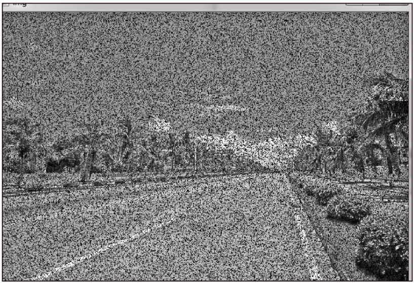
图3-20 图像加噪
上述程序的运行原理是将图像数据矩阵随机位置的像素点设为（25，20，20），当随机的像素点数量较大时，就在图像上生成了噪声。
加上噪声的图像是为了实验图像识别的效果，有些机器学习算法对没有噪声的图像识别的效果很好，但如图3-20这种噪声较多的情况效果就很不理想了，因为在实际工程应用中，很难保证采集到的图像清晰可靠，所以需要人为给图像加上噪声，以方便后期对算法效果进行验证。
3.1.7 声音基础
1.声音原理
声音是由物体的机械振动形成的，发生声音的振动源叫作“声源”。振动着的鼓皮、琴弦、扬声器等都是声源，人的声带也是声源。声音必须通过媒质才能传播，空气、水、金属、木材等是最常见的媒质。声波的频率是每秒钟往复振动的次数，一来一往为一次，又称一周，声波的频率也就是声音的频率，频率单位为赫兹（Hz），每秒振动一周为1Hz。“波长”是声源每振动一周声波所传播的距离，频率越高则波长越短，波长同频率成反比。
“相位”可简称为“相”。一般地说，相位是用来描述简谐振动的，在一个周波之内，任何一点的“相”都不相同，各对应于一个确定的相位角值；而在另一个周波，各种相位将会重复出现。所以在声波传播的路径上，每隔一个波长的距离，其相位相同。
声音的音调是由它的基频决定的，基频越高则音调也越高。如在音乐中中央C的基频是261.6Hz，而A调的基频则是440Hz。通常将声音分为以下频带：20Hz、25Hz、31.5Hz、40Hz、50Hz、63Hz、80Hz、100Hz、125Hz、160Hz、200Hz、250Hz、315Hz、400Hz、500Hz、630Hz、800Hz、1kHz、1.25kHz、1.60kHz、2.0kHz、2.5kHz、3.15kHz、4.0kHz、5.0kHz、6.3kHz、8.0kHz、10kHz、12.5kHz、16kHz、20kHz。一般来说，人耳可感受的正弦波的范围是从20Hz的低频声音到20kHz的高频声。
2.声音波形
声音波波形属于正弦波，拥有振幅和频率两个特征，振幅就是音量，频率就是音调。下面调用Python的WAV声音处理库以及Numpy科学计算库显示一段声音的波形。
显示声音波形数据的主要步骤如下：
1）打开WAV文件，使用wave库的open方法，主要参数为文件名和存取文件方式。
代码详情
1 | #以读方式打开 |
2）读取格式信息，使用wave库的getparams方法。该方法返回的信息中比较重要的是前4项，依次为通道数、样本宽度、样本频率、波形数据长度。
代码详情
1 | #读取格式信息 |
3）读取波形数据，波形数据是WAV文件采样后生成的采样数据，使用wave库的readframes方法读取，该方法返回的数据是字符类型。
代码详情
1 | #读取波形数据 |
4）转换波形数据为Numpy的整型数组对象。
代码详情
1 | #将波形数据转换为数组 |
5）计算时间轴。
代码详情
1 | time = np.arange(0， |
6）绘制波形，绘制前调用pylab的subplot方法创建两个上下形式的绘图区，每个绘图区各绘制一个声道的数据。下面程序中subplot方法的参数共3位整数，从左边开始每位依次表示绘图区总数、列数、创建区域所属绘图的索引，比如subplot(212)表示绘图区有2个，一共1列，当前索引为第2个绘图区。
代码详情
1 | #绘制波形 |
上述绘制声音波形过程的完整代码如下：
代码详情
1 | #!/usr/bin/env python |
程序读取声音文件后，绘制出如图3-21所示的波形。
这个波形表现出：声音信号较连续，随着时间的推移，变化不明显，没有停顿，因此，这是一段音乐或噪声等声音而不是人声，因为人说话的声音有个特点，就是每个字之间有少量停顿。语音停顿期间，声音采样软件采样不到数据，过了这个停顿期，波形会有明显的变化，如图3-22所示波形就是典型的说话声音波形。
3.1.8 声音音量调节
声音音量的调节方式与图像亮度调整类似，不同的是音量调节的是波形大小。音量调节通过调节采样波形的大小实现，采样数据变大时，声音音量放大，采样数据变小时，声音音量降低。音量不能无限调节，音量过大或过小，会形成难听的噪音，使声音失真。
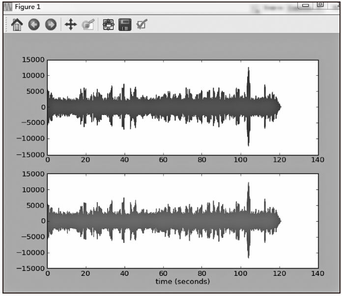
图3-21 声音波形绘制
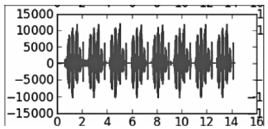
图3-22 说话声音波形
1.放大音量
下面编写代码演示音量的放大。为保证声音质量，需要对音量调节范围设置上限和下限（以原声音为基准计算上限、下限）。为此，编写wavechange函数，计算调整后的数据，其参数x为每次采样的波形数据，dwmax为上限，dwmin为下限，该函数仅会将上限与下限之间区域内的数据放大为原来的1.5倍，在此区域外的数据则设置为上限或下限。
代码详情
1 | def wavechange(x， |
为保证放大后声音不失真，可采用以原声音为基准的放大策略，声音波形图像类似正弦函数图像，在以时间轴为X轴、采样数据为Y轴的坐标系中，波形数据可正可负，上下波动。因此，以原声音数据的最大值为依据计算上下限，上限为原声音数据最大值的88%，下限为原声音数据最大值的14%。
使用wave_data.max()获取原声音波形的最大数据值（max函数返回数组的最大值），然后通过frompyfunc函数设置调节音量的回调函数为刚刚定义的wavechange函数，最后对数据进行放大调节。
代码详情
1 | #放大音量 |
声音数据放大后，需要将新数据写入新的声音文件中。首先以写方式新建新声音文件：
代码详情
1 | fo = wave.open(r"jg.wav"， |
然后，设置新文件的数据参数为源文件的数据参数，并写到新声音文件中。放大音量并没有改变格式信息，因此，放大后的声音与源声音的格式信息一样。
代码详情
1 | #写波形数据参数 |
最后调用writeframes()方法，以放大后声音数据为参数将数据写入新建的声音文件中。
代码详情
1 | fo.writeframes(new_str_data) |
下面的代码演示了放大音量的算法，并绘制出了源声音波形与放大后的声音波形。
代码详情
1 | #!/usr/bin/env python |
如图3-23所示波形图中，上部为源声音，下部显示了音量放大后的波形。下部的波形数据范围为-20000~20000，而上部范围为-15000~15000，下部波形整体比上部大很多。下载本书的代码包运行后，可听到音量放大后的声音效果。
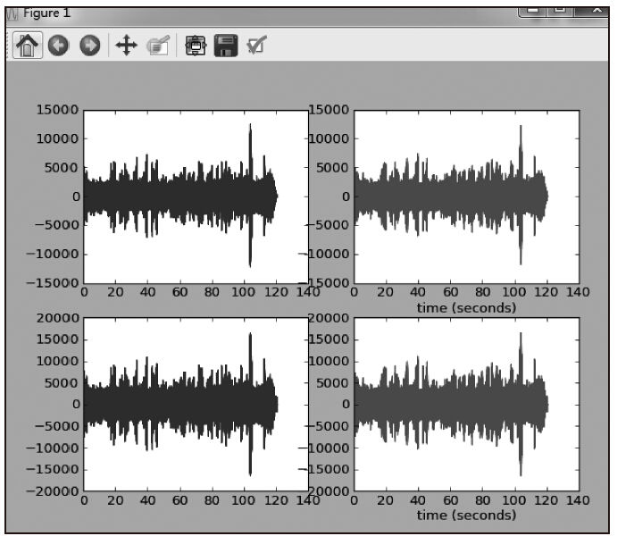
图3-23 声音音量放大波形
2.降低音量
音量降低可通过将采样波形变小来实现，具体来说，就是把每个采样数据按指定比例缩小，同时将缩小幅度控制在合理的范围内，保证音量降低后声音仍然清晰。
1）根据上下限参数对波形数据进行调节，定义缩小波形数据的函数为wavechange。
代码详情
1 | def wavechange(x， |
2）与放大音量类似，以源声音波形数据的最大值为基准，计算上限和下限，以wavechange为回调函数，降低音量。
代码详情
1 | #降低音量 |
3）生成新波形数据。
代码详情
1 | new_wave_data =new_wave_data.astype(wave_data.dtype) |
4）将数据写到新声音文件。
代码详情
1 | #写波形数据参数 |
下面的代码演示了降低音量算法。
代码详情
1 | #!/usr/bin/env python |
如图3-24所示的波形图中，上面为源声音，下面为降低音量后的声音波形。可明显看出，音量缩小后，其波形幅度为-3000~3000，而源声音波形范围大很多，为-15000~15000。
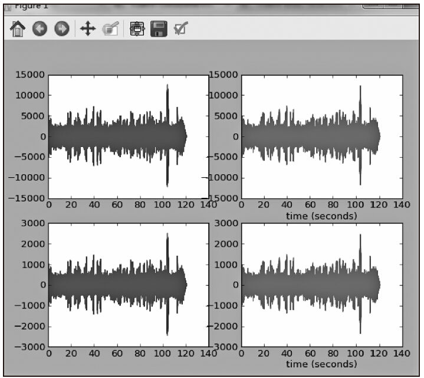
图3-24 声音音量缩小波形
3.1.9 图像信息隐藏
1.图像隐藏原理
信息隐藏是不让除预期接收者之外的任何人知晓信息的传递事件或者信息的内容，载体文件相对隐秘文件的大小越大，隐藏后者就越加容易。因此，数字图像在互联网和其他传媒上被广泛用于隐藏消息。
本节讲述的图像隐藏原理是：首先从源图中提取文字图像信息，并记录这个文字图像信息像素点在图像矩阵中的位置；然后，对载体文件进行预处理，将蓝色像素值全部设为偶数；最后，将记录的文字信息像素点在载体文件对应位置的蓝色像素值设为奇数。解密信息是隐藏信息的逆过程，其过程比较简单，即提取载体文件中蓝色像素值为奇数的像素点，将空白图像中这些像素点对应的位置赋予统一的着色。
2.图像隐藏实例
下面用实例来讲解图像信息隐藏技术。我们的目标是：将如图3-25所示的文字隐藏在如图3-26所示的载体图片里。要求隐藏后，无法察觉图中隐藏了信息。
图3-25 含有待隐藏文字的图像
图3-26 载体图像
本实例隐藏信息的主要过程如下：
1）读取源图像（将写上需隐藏文字的信息）和载体图像，构造图像矩阵。
代码详情
1 | img1 = cv2.imread(fn1) |
2）在源图像中加上水印文字作为待隐藏文字。
代码详情
1 | #加上需要隐藏的消息 |
3）处理隐藏载体图，将所有蓝色值变成偶数，以便加入隐藏信息。
代码详情
1 | #处理隐藏载体图 |
4）读取源图像，将源图像的文字像素点在载体文件的对应位置的蓝色像素值设为奇数，将需要隐藏的信息写入目标载体图。
代码详情
1 | #读取源图像，并将信息写入目标载体图 |
5）保存修改后的目标载体图。
代码详情
1 | cv2.imshow('img2-2'， |
下面的代码演示了隐藏信息的过程。
代码详情
1 | #!/usr/bin/env python |
运行上段代码将信息隐藏后，肉眼观察载体图像，仍无法察觉与之前相比有任何变化。
下面来看看解密信息过程。解密信息与隐藏信息相反，是隐藏信息的逆过程，主要步骤如下：
1）读取载体文件及其大小信息。
代码详情
1 | img = cv2.imread(fn) |
2）生成空白图像矩阵，以便绘制解密文字。
代码详情
1 | imginfo =np.zeros((h， |
3）绘制解密的水印文字。如果蓝色值为奇数，则该像素点为文字。
代码详情
1 | for j in xrange(0， |
4）显示隐藏信息。
代码详情
1 | cv2.imshow('info'， |
下面代码演示了解密信息的过程。
代码详情
1 | #!/usr/bin/env python |
运行解密代码，从载体文件中提取信息，效果如图3-27所示。
3.1.10 声音信息隐藏
1.声音信息隐藏原理
声音文件是一个不错的信息隐藏载体，声音文件数据量大，能隐藏信息的容量也大，假设每秒采集44100次，如果所有采样数据全部利用上，每秒的声音可以存储44100字节的数据，不过这样达不到信息隐藏的效果，只能利用其中一部分采样数据来存储信息，占有的采样数据越少，信息隐藏效果就越好。
比如，如图3-28所示的波形是一段音乐的声音波形，假设某个采样点的数据实际是信息中一个字节大小的数据，那么将这些字节解密后，能还原成一段信息。这种载体的隐藏信息的效果比图像好，一般很难被人发现。
这里采用的隐藏策略是：产生一段正弦波的噪声，然后，在这段噪声中隐藏一段文本文件的内容。下面以实例来讲解这个过程，我们的目标是：将本章前面讲述的Python代码文件3-1.py隐藏到一段噪声中，解密者如果不知道信息解密的规律，就无法从噪声文件还原这个Python代码文件。
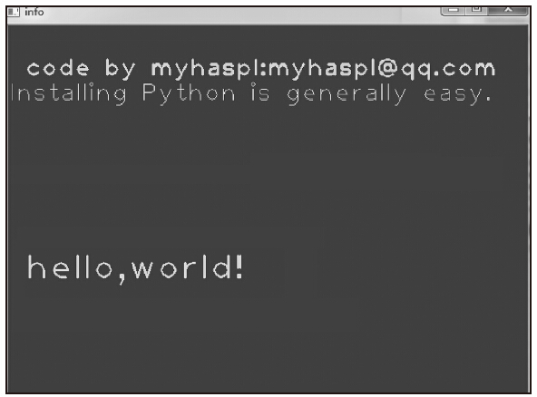
图3-27 解密后的文字
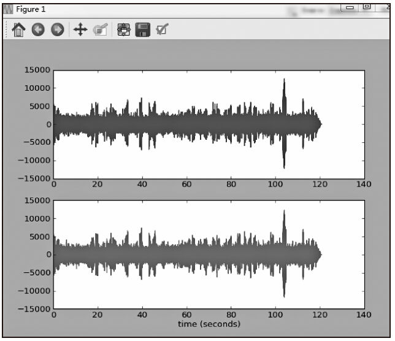
图3-28 音乐的声音波形
2.声音信息隐藏实例
隐藏信息的具体过程如下：
1）读取需要隐藏的文本文件，提取其中的文字信息。
代码详情
1 | # 打开文档 |
2）将文字转化为对应的内部编码（本例的文字为英文字母和符号，因此转换为ASCII码）。
代码详情
1 | wdata=map(ord， |
3）设置噪声载体文件的波形参数。载体文件是程序人为生成，所以将幅度设置为适合的区域，为使载体噪声更接近于自然的噪声，将振幅范围设置为-25600~25600。
代码详情
1 | # 设置波形参数 |
4）计算每个字符的间隔，需要隐藏的若干个字符以等间隔的形式分散在噪声数据中，即：在噪声波形数据中，每隔指定的间隔存放一个字符。
代码详情
1 | #每个字符的间隔 |
5）生成空波形数据，以便写入噪声数据和字符信息。
代码详情
1 | #每周期样本数 |
6）生成噪声数据，并将隐藏文字的字符写入噪声数据中，这一步是关键，也是算法的核心。算法把整个采样的线性区域分为两类，如果当前采样时间处于第4步计算的间隔处，则表示此处为加密字符区（每个字符区只能存放一个字符），写入的数据为经过加密的字符，在间隔之前的时间区域则为随机噪声区。
算法判断是否到了指定的间隔处，间隔处是字符区，否则是噪声区。如果是噪声区，则随机生成噪声；如果是字符区，则将字符进行加密，写入字符区。此处使用了简单的加密算法（实际应用可使用高强度的加密算法），加密方式为：将字符的ASCII码乘以指定的整数后，减去64与该整数的乘积。生成的信息隐藏格式如表3-2所示。
表3-2 信息隐藏格式
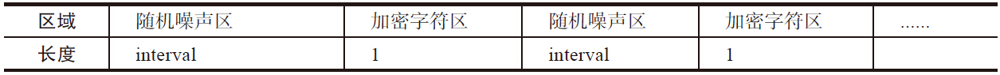
算法代码如下：
代码详情
1 | #写噪声数据和隐藏文字的字符 |
7）写波形数据。
代码详情
1 | #写波形数据参数 |
下面来看看解码信息过程，解码信息是隐藏信息的逆算法，主要步骤如下：
1）读取噪声载体文件以及相关格式信息。
代码详情
1 | new_wdata=[] |
2）找到字符区，将其中的字符解密并还原成字符串。
代码详情
1 | for curpos in xrange(0， |
3）整理还原字符串，将它们写入文件。
代码详情
1 | my_the_text="".join(map(chr， |
下面程序读取名为3-1.py的Python源程序文件，将该文本隐藏在声音文件中，然后打开载体声音文件，将文本还原为Python程序文件。
代码详情
1 | #!/usr/bin/env python |
运行这段代码，程序输出了编码和解码过程。
代码详情
1 | 正在将文件编码进声音 |
上面程序演示了隐藏信息与解码信息的过程。程序运行后，先将Python源代码文件3-1.py隐藏在一段噪声中。然后，从噪声中解码信息，将文本内容输出到mytext.txt中，用记事本打开该文件，如图3-29所示。可以看到解码后的程序和源程序一样，包括空格、符号及字母等。
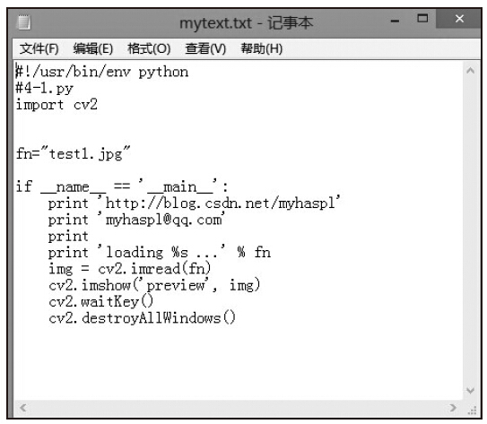
图3-29 解码后文件
如图3-30所示是程序运行后生成的声音波形图像，很难看出来哪些采样点隐藏了文本信息。下载本书源码包后，可以播放这段声音（运行3-18.py后，会产生声音文件pltest.wav），只能听出声音是一段很平常的噪声。
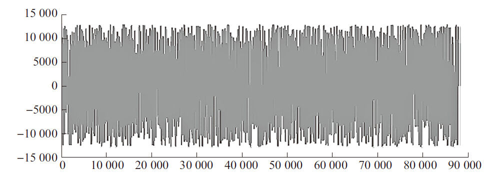
图3-30 隐藏了文本信息的波形
3.信息隐藏与解码总结
综上所述，隐藏信息的算法过程为：
1）读取程序文本文件，将字符转换为ASCII码。
2）确定声音文件的相关参数，生成2秒声音，其中采样数据用随机数代替，生成随机数的取值范围为-15000~15000，在某些采样点上用来自隐藏信息的字符字节代替，代替的方式是将字节对应的ASCII码乘上某个基数加一个调整参数，代替的过程是线性的。
3）将生成的声音数据写入载体文件中。
解码信息的算法过程为：
1）读取载体声音文件及其相关参数。
2）按照隐藏信息时的规律，在正确的位置读取字符，然后将读取的字符合成信息。
3）将信息写入恢复文件中。
3.2 R语言基础
R是用于统计分析、绘图的语言和操作环境，是统计计算和统计制图的优秀工具，属于GNU系统的一个自由、免费、源代码开放的软件。其GUI界面主要包括菜单、命令控制台，在Windows平台下的界面如图3-31所示。
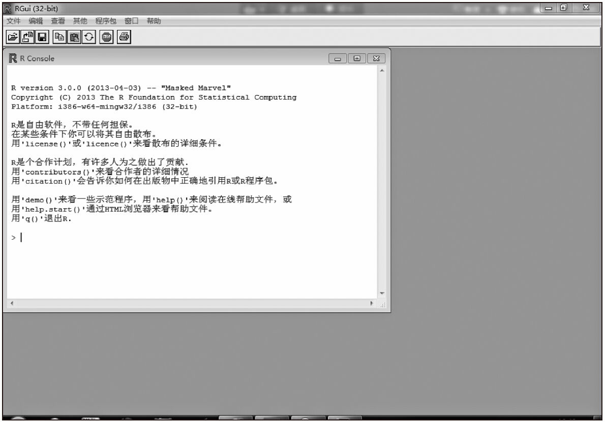
图3-31 R的GUI界面
3.2.1 基本操作
1.提示符
R以“>”为shell提示符，Windows、Linux、MAC均一致。
2.获得帮助的方式
在R中使用help函数获取某个命令或函数的帮助。下面是获取求平均值函数的帮助函数：
代码详情
1 | > help(mean)starting httpd help server ... done> |
输入上述命令后，显示如下HTML形式的帮助文档：
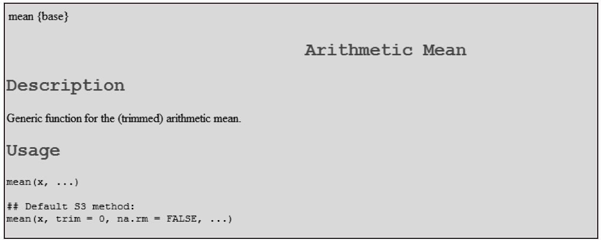
如果想进一步获得这个函数的调用示例，可以通过example命令。
代码详情
1 | > example(mean)mean> x <-c(0:10， |
3.文件载入并执行代码
使用source函数载入并执行代码，把以下代码放在一个名为test.r的文件，用文本编辑工具录入。
代码详情
1 | x<-c(22， |
然后加载执行，查看输出结果。
代码详情
1 | > source("f:/pro/r/test.r") |
最后将执行结果写入文件。
代码详情
1 | > sink("f:/pro/r/test.lis") |
打开test.lis，可看到以下内容：
代码详情
1 | [1] 22 23 44 66 |
如果采用不带参数的sink，将恢复结果。示例如下：
代码详情
1 | > sink() |
4.代码续行
在行尾使用“+”可进行续行。
代码详情
1 | x<-c(11， |
另外，需要提一下，R语言中的注释可以被放在任何地方，只要是以井号（#）开始，到行末结束就可以。
5.物件（对象集）
在R中创建的单元为物件（对象集），这些物件可以是变量、数字数组、字符串、函数，以及从这些物件中产生的更多结构。
objects()可用来显示存储在R中的对象集名字。
代码详情
1 | > objects() |
以上代码显示R目前运行环境中有x和xm两个变量，可以使用rm移除某个对象。
代码详情
1 | > rm(xm) |
退出R程序时，可以以.RData的方式保存这些对象集，如图3-32所示。
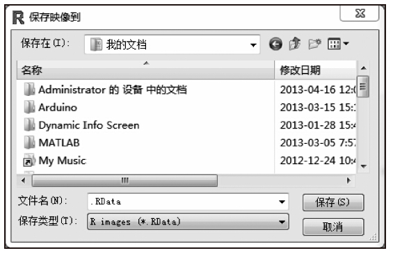
图3-32 保存对象集对话框
当下次再启动R时，加载.RData文件后，这个对象集会被还原。
代码详情
1 | R version 3.0.0 (2013-04-03) --"Masked Marvel" |
1 | </details> |
1 | </details> |
代码详情
1 | > c(12， |
对向量操作，一般是对向量的每个元素进行操作，比如：
代码详情
1 | > z |
向量也可以成为c()中的参数，向量中的元素，将合并成为c()函数中的元素：
代码详情
1 | > c(33， |
再来看看数字型向量运算。向量之间的运算是每个元素分别进行的，比如：
代码详情
1 | > x |
元素个数不一致的向量，元素个数较少的向量将循环扩充和元素个数最多的向量一致，这意味着元素数量最多的向量的元素个数必须是元素数量小的向量的元素个数的整数倍。
代码详情
1 | > z |
对向量元素的操作，可以使用普通的+、-、*、/、^等操作符，也可以使用更多的函数，比如：log、sin、tan、max、mean、sum等，这些函数有些是对每个元素分别计算，有些是对所有元素一起计算。
代码详情
1 | > x |
可以使用sort、length、sqrt对向量进行排序，求长度，求平方根。
代码详情
1 | > c(4， |
2.复数向量与规则向量
复数向量的元素都是复数。复数的表示方法是：实部+虚部i。下面的代码演示了复数向量的使用方法。
代码详情
1 | >c(2+1i， |
1 | </details> |
1 | </details> |
1 | </details> |
1 | </details> |
1 | </details> |
1 | </details> |
1 | </details> |
1 | </details> |
1 | </details> |
1 | </details> |
1 | </details> |
1 | </details> |
1 | </details> |
1 | </details> |
1 | </details> |
1 | </details> |
1 | </details> |
1 | </details> |
1 | </details> |
1 | </details> |
1 | </details> |
1 | </details> |
1 | </details> |
1 | </details> |
1 | </details> |
1 | </details> |
1 | </details> |
1 | </details> |
1 | </details> |
1 | </details> |
1 | </details> |
1 | </details> |
1 | </details> |
1 | </details> |
1 | </details> |
1 | </details> |
1 | </details> |
1 | </details> |
1 | </details> |
1 | </details> |
1 | </details> |
1 | </details> |
1 | </details> |
1 | </details> |
1 | </details> |
1 | </details> |
1 | </details> |
1 | </details> |
1 | </details> |
1 | </details> |
1 | </details> |
1 | </details> |
1 | </details> |
1 | </details> |
1 | </details> |
1 | </details> |
1 | </details> |
1 | </details> |
1 | </details> |
1 | </details> |
1 | </details> |
1 | </details> |
1 | </details> |
1 | </details> |
1 | </details> |
1 | </details> |
1 | </details> |
1 | </details> |
1 | </details> |
1 | </details> |
1 | </details> |
1 | </details> |
1 | </details> |
1 | </details> |
1 | </details> |
1 | </details> |
1 | </details> |
1 | </details> |
1 | </details> |
1 | </details> |
1 | </details> |
1 | </details> |
1 | </details> |
1 | </details> |
1 | </details> |
1 | </details> |
1 | </details> |
1 | </details> |
1 | </details> |
1 | </details> |
1 | </details> |
1 | </details> |
1 | </details> |
1 | </details> |
1 | </details> |
1 | </details> |
1 | </details> |
1 | </details> |
1 | </details> |
1 | </details> |
1 | </details> |
1 | </details> |
1 | </details> |
1 | </details> |
1 | </details> |
1 | </details> |
1 | </details> |
1 | </details> |
1 | </details> |
1 | </details> |
1 | </details> |
1 | </details> |
1 | </details> |
1 | </details> |
1 | </details> |
1 | </details> |
1 | </details> |
1 | </details> |
1 | </details> |
1 | </details> |
1 | </details> |
1 | </details> |
1 | </details> |
1 | </details> |
1 | </details> |
1 | </details> |
1 | </details> |
1 | </details> |
1 | </details> |
1 | </details> |
1 | </details> |
1 | </details> |
1 | </details> |
1 | </details> |
1 | </details> |
1 | </details> |
1 | </details> |
1 | </details> |
1 | </details> |
1 | </details> |
1 | </details> |
1 | </details> |
1 | </details> |
1 | </details> |
1 | </details> |
1 | </details> |
1 | </details> |
1 | </details> |
1 | </details> |
1 | </details> |
1 | </details> |
1 | </details> |
1 | </details> |
1 | </details> |
1 | </details> |
1 | </details> |
1 | </details> |
1 | </details> |
1 | </details> |
1 | </details> |
1 | </details> |
1 | </details> |
1 | </details> |
1 | </details> |
1 | </details> |
1 | </details> |
1 | </details> |
1 | </details> |
1 | </details> |
1 | </details> |
1 | </details> |
1 | </details> |
1 | </details> |
1 | </details> |
1 | </details> |
1 | </details> |
1 | </details> |
1 | </details> |
1 | </details> |
1 | </details> |
1 | </details> |
1 | </details> |
1 | </details> |
1 | </details> |
1 | </details> |
1 | </details> |
1 | </details> |
1 | </details> |
1 | </details> |
1 | </details> |
1 | </details> |
1 | </details> |
1 | </details> |
1 | </details> |
1 | </details> |
1 | </details> |
1 | </details> |
1 | </details> |
1 | </details> |
1 | </details> |
1 | </details> |
1 | </details> |
1 | </details> |
1 | </details> |
1 | </details> |
1 | </details> |
1 | </details> |
1 | </details> |
1 | </details> |
1 | </details> |
1 | </details> |
1 | </details> |
1 | </details> |
1 | </details> |
1 | </details> |
1 | </details> |
1 | </details> |
1 | </details> |
1 | </details> |
1 | </details> |
代码详情
1 | > sort(jiuye$平均教育经费 |
排序后，可以初步发现，这些行业的教育经费中，最大的有12645，而最小的除0之外还有2，不同行业之间的教育经费差异很大。
也可以改变排序顺序，通过指定decreasing参数为TRUE，实现按从大到小的顺序排列。代码如下：
代码详情
1 | > sort(jiuye$平均教育经费 |
6.2.4 中位数
中位数比平均值更有稳健性，因为它不受偏态分布的影响。代码如下：
代码详情
1 | > median(jiuye$平均教育经费 |
教育经费的中位数222.5与它的平均值391.035有一定差距，这说明平均教育经费不是对称分布的。
6.2.5 极差、半极差
极差是一组数据中最大数据与最小数据的差，用来刻画一组数据的离散程度，反映变量分布的变异范围和离散幅度，在样本总体中任何两个单位的标准值之差都不能超过极差。同时，它还能体现一组数据波动的范围。下面的代码计算“平均教育经费”的极差。
代码详情
1 | > max(jiuye$平均教育经费 |
相对极差而言，四分位数间距（上四分位数与下四分位数之差）更稳定，它不受两端个别极大值或极小值的影响，可理解为中间50%观察值的极差，因此又被称为半极差。
四分位数是统计学中分位数的一种，即把所有数值由小到大排列并分成4等份，处于3个分隔点位置的得分就是四分位数，下四分位数是所有数据由小到大排列后处于25%位置的数，上四分位数是所有数据由小到大排列后处于75%位置的数。四分位数在R语言中用quantile函数求解，下面的代码计算了“平均教育经费”和“平均劳动报酬”的四分位数。
代码详情
1 | > quantile(jiuye$平均教育经费 |
变异度反映数据围绕中心位的离散度，四分位数间距数值越大，变异度越大，反之，变异度越小。在R语言中使用IQR函数求解四分位数间距，下面的代码计算“平均教育经费”和“平均劳动报酬”的四分位数间距。
代码详情
1 | > IQR(jiuye$平均教育经费 |
从执行结果来看，“平均教育经费”相比“平均劳动报酬”变异度小很多。
6.2.6 方差
方差是重要的数据分散程度度量指标。其计算公式为：

在R语言中，可使用var函数统计方差。下面的代码计算“平均教育经费”的方差。
代码详情
1 | > var(jiuye$平均教育经费 |
6.2.7 标准差
标准差也是重要的数据分散程度度量指标。其计算公式为：

在R语言中使用sd函数统计标准差。下面的代码计算“平均教育经费”的标准差。
代码详情
1 | > sd(jiuye$平均教育经费 |
6.2.8 变异系数、样本平方和
1.变异系数
变异系数，又称“离散系数”，是概率分布离散程度的一个归一化量度，其定义为标准差与平均值之比。变异系数的计算公式为：

上式中S表示标准差，x表示平均值。变异系数越小，变异程度越小；反之，变异系数越大，变异程度越大。下面的代码计算了“平均教育经费”的变异系数。
代码详情
1 | > sd(jiuye$平均教育经费 |
再看看“平均劳动报酬”的变异系数。代码如下：
代码详情
1 | > sd(jiuye$平均劳动报酬 |
可见，“平均教育经费”相对于“平均劳动报酬”分布更分散，因为它的变异系数更高。
2.样本平方和
样本校正平方和（CSS）为样本与均值差的平方求和。下面的代码计算“平均教育经费”的样本校正平方和。
代码详情
1 | > sum((jiuye$平均教育经费 |
样本未校正平方和（USS）为样本值平方的求和。下面的代码计算了“平均教育经费”的样本未校正平方和。
代码详情
1 | > sum(jiuye$平均教育经费 |
6.2.9 偏度系数、峰度系数
1.偏度系数
在统计学中，偏度系数是用于衡量实数随机变量概率分布的不对称性的。偏度的值可以为正，可以为负，是无量纲的量，其取值通常为-3~+3，其绝对值越大，表明偏斜程度越大。均值右侧更分散的数据偏度系数为正，左侧更分散的数据偏度系数为负。
偏度系数的计算公式为：

在R语言中，可用如下代码计算“平均教育经费”的偏度系数。
代码详情
1 | > mean(jiuye$平均教育经费 |
2.峰度系数
峰度系数衡量实数随机变量概率分布的峰态，峰度高就意味着方差增大是由低频度的大于或小于平均值的极端差值引起的。当数据分布为正态分布时，峰度系数近似为0；当数据分布较正态分布的尾部更分散时，峰度系数为正，两侧的极端数据较多；除此以外，峰度系数为负，两侧的极端数据较少。
峰度系数计算公式为：

在R语言中，可用如下代码计算“平均教育经费”的峰度系数。
代码详情
1 | > mean(jiuye$平均教育经费 |
6.3 正态分布案例解析
6.3.1 正态分布函数
对于一维实随机变量X，设它的累积分布函数是FX (x)。如果存在可测函数fX (x)，满足：

那么X是一个连续型随机变量，并且fX (x)是它的概率密度函数。
累积分布函数，又叫累计分布函数，是概率密度函数的积分，能完整地描述一个实随机变量X的概率分布情况。对于所有实数x，累积分布函数的定义如下：

正态分布的累积分布函数为：

其中，μ是均值，σ是方差。
正态分布的概率密度曲线通常如图6-5所示。

图6-5 正态分布的概率密度曲线
说到正态分布，不得不提一下偏态分布，偏态分布是指频数分布不对称，集中位置偏向于一侧，若集中位置偏向数值小的一侧，则称为正偏态分布；如果集中位置偏向数值大的一侧，则称为负偏态分布。如图6-6所示，左边为负偏态，右边为正偏态。

图6-6 偏态分布
6.3.2 峰度系数分析
可用峰度系数计算“平均劳动报酬”相对于“平均教育经费”哪个更接近正态分布。代码如下：
代码详情
1 | > mean(jiuye$平均劳动报酬 |
上面计算出了“平均劳动报酬”的峰度系数为5.417817，“平均教育经费”的峰度系数为146.8809（见6.2.9节）。这两个峰度系数表明，“平均劳动报酬”相对于“平均教育经费”更接近正态分布。
从下面的分析中可以发现，产品产量最适合正态分布模型，因为它的峰度系数仅为-0.6830728，非常接近正态分布。
代码详情
1 | > mean(cp$产量 |
6.3.3 累积分布概率
在使用pnorm求产品产量的分布函数时，对应的每个实数随机变量都有其累积分布概率。下面的代码计算产品产量的累积分布概率。
代码详情
1 | > mean(cp$产量 |
为了更好地观察效果，再绘制一张产品产量的累积分布概率的散点图。
代码详情
1 | > plot(x,pnorm(x,mymean,mysd)) |
绘制结果如图6-7所示。

图6-7 产品产量累积分布
6.3.4 概率密度函数
1.概率密度概述
一个连续型随机变量的概率密度函数（简称为密度函数）是描述这个随机变量的输出值在某一个确定的取值点附近的可能性的函数。随机变量的取值落在某个区域之内的概率则是概率密度函数在这个区域上的积分，当概率密度函数存在的时候，累积分布函数则是概率密度函数的积分。
正态分布的概率密度函数为：

其中，μ是均值，σ是方差。
其概率密度曲线关于x=μ对称。
2.概率密度函数计算
在R语言中，使用dnorm（变量，平均值，标准差）求解正态分布概率密度函数。下面的代码计算产品产量的概率密度。
代码详情
1 | > mean(cp$产量 |
查看产品产量均值，得到如下结果：
代码详情
1 | > mymean |
绘制散点图如图6-8所示。可以看到该曲线接近于以6014.875为对称点的对称分布。绘制代码如下：
代码详情
1 | >plot(x,dnorm(x,mymean,mysd)) |
此外，rnorm还可以返回正态分布随机数，调用格式为rnorm（长度，平均值，标准差）。比如：
代码详情
1 | >rnorm(50,0,1)->rx |
如图6-9所示是一个经典的正态密度曲线，从曲线上看就像一个驼峰。

图6-8 产品产量概率密度图

图6-9 正态密度曲线
6.3.5 分位点
分位点分为上α分位点与下α分位点。
1.下α分位点
可从概率密度函数的角度理解下α分位点。设连续随机变量X的累积分布函数为F(x)，密度函数为f(x)，则有：

上式的含义为：连续随机变量X小于等于Zα 的概率为α。在这里，称Zα 是X的下α分位点。
下面计算产量分布的下α分位点。设下α分位点的α=25%=0.25，需要分析产量小于多少的概率为25%。
计算产量分布的下α分位点（α=25%），可如下调用qnorm函数（其中，mean为平均值，sd为标准差）：
代码详情
1 | qnorm(0.25,mean,sd) |
具体代码如下：
代码详情
1 | >sd(cp$产量 |
上面的计算结果表明，产量<5213.9的概率为25%。
2.上α分位点
上α分位点的公式为：

其中，Zα 为X的上α分位点。
分析上α分位点的公式可发现，上α分位点的计算与下α分位点有关，比如：计算上α分位点（α=25%）可转化为计算下α分位点（α=1-25%=75%）。
下面计算产量分布的上α分位点。设上α分位点的α=25%，需要分析产量大于多少的概率为25%。
计算产量分布的上α分位点（α=25%），可如下调用qnorm函数（其中，mean为平均值，s d为标准差）：
代码详情
1 | qnorm(1-0.25,mean,sd) |
具体代码如下：
代码详情
1 | > mean(cp$产量 |
上面的计算结果表明，产量>6815.85的概率为25%，即上α分位点的公式中，Zα 为产量6815.85，上α分位点的α为0.25，可用下式表示：
P(x>Zα )=p(x>6815.85)=0.25
3.绘效果图
1）通过下面R语句绘制如图6-10所示的产品产量的概率密度图，P(x>0.25)为图6-10中的阴影面积（根据积分的几何意义，累积分布函数F(x)是密度函数f(x)的积分，图中若干点组成了密度函数曲线，而曲线与X轴围成的面积则为累积分布）。
代码详情
1 | > mean(cp$产量 |
2）绘制产品产量的累积分布图（如图6-11所示）。可绘制一个产品产量的上α(α=0.25）分位点和下α(α=0.25）分位点的效果图。绘制代码如下：
代码详情
1 | > mean(cp$产量 |

图6-10 产品产量的上α分位点

图6-11 产量的上α分位点和下α分位点
分析绘制图6-10与图6-11所示的结果，能较直观地验证刚才得到的结论：上α(α=0.25）分位点表明产量>6815.85的概率为25%，而下α(α=0.25）分位点表明产量<5213.9的概率为25%。
6.3.6 频率直方图
在R语言中，可使用hist语句（设freq参数为TRUE）生成频率直方图。下面的代码绘制“平均劳动报酬”的频率直方图。
代码详情
1 | > hist(jiuye[["平均劳动报酬 |
绘制结果如图6-12所示。
6.3.7 核概率密度与正态概率分布图
1.核概率密度与正态概率
下面考虑让“平均劳动报酬”的概率密度与正态分布在一张图中显示出来，这样就能更好地看清数据的分布情况。示例代码如下：
代码详情
1 | > hist(jiuye[["平均劳动报酬 |
绘制结果如图6-13所示。

图6-12 平均劳动报酬的频率直方图

图6-13 平均劳动报酬的概率密度与正态分布
从图6-13中可以看到，“平均劳动报酬”的偏度大于0，直方图偏左，属于偏态分布。
2.经验累积分布与正态分布
经验分布函数是指根据样本构造的概率分布函数。设x1 ，x2 ，…，xn 为一组样本，定义函数m(x)表示样本中小于或者等于x的样本个数，则称函数

为样本x1 ，x2 ，…，xn 的经验分布函数。
下面的代码绘制“平均劳动报酬”的经验累积分布与正态分布。
代码详情
1 | > plot(ecdf(jiuye[["平均劳动报酬 |
绘制结果如图6-14所示。其中，光滑的线为累积正态分布曲线，不光滑的线为经验累积分布曲线。
6.3.8 正态检验与分布拟合
1.QQ图
QQ图可以测试数据分布是否近似为某种类型分布。如果近似于正态分布，则数据点接近下面方程表示的直线。
y=σx+μ
其中，σ为标准差，μ为平均数。
比如，可用它来测试“平均劳动报酬”分布是否近似于正态分布。在R语言中，使用qqnorm函数来画数据点图，使用qqline函数画这根直线，如图6-15所示。代码如下：

图6-14 平均劳动报酬的经验累积分布与正态分布

图6-15 平均劳动报酬分布QQ图
代码详情
1 | > qqnorm(["平均劳动报酬 |
从图6-15来看，平均劳动报酬离标准正态分布还是有差距的。
相对于“平均劳动报酬”，产品产量就非常接近正态分布。代码如下：
代码详情
1 | > qqnorm(cp$产量 |
绘制出的QQ图如图6-16所示。

图6-16 产品产量QQ图
2.正态检验与分布拟合
1）W检验。W检验可以检验数据是否符合正态分布。在R语言中使用函数shapiro.test()进行正态W检验。代码如下：
代码详情
1 | > shapiro.test(cp$产量 |
上述代码中出现了p值，其作用是：当p值小于某个显著水平a（如0.05）时，认为样本不是来自于正态分布的总体。此例中，0.7903>0.05，可认为产量是正态分布的。
2）Kolmogorov-Smirnov检验。Kolmogorov-Smirnov检验用于检验单一样本是否来自某一特定分布，比如检验一组数据是否为正态分布。它的检验方法是以样本数据的累计频数分布与特定理论分布做比较，若两者间的差距很小，则该样本取自某特定分布族。可比较一个频率分布f(x)与理论分布g(x)，或者两个观测值分布来完成检验。
可以从假设检验的角度来理解Kolmogorov-Smirnov检验，假设检验使用了一种类似于“反证法”的推理方法，它先假设总体中的某项假设成立，计算其会导致什么结果产生。若导致不合理现象发生，拒绝原先的假设；若没有导致不合理的现象发生，即不拒绝原假设，从而接受原假设。
对Kolmogorov-Smirnov检验而言，将原假设H0确定为：两个数据分布一致或者数据符合特定理论分布。用F0 (x)表示分布函数，Fn
(x)表示一组随机样本的累积概率函数，设D为F0 (x)与Fn (x)差距的最大值，定义如下：
D=max|Fn (x)-F0 (x)|
当实际观测值D>D(n，α)时，则拒绝H0，否则接受H0假设。
在R语言中使用ks.test函数完成正态性检验。代码如下：
代码详情
1 | ks.test(x, y, ...,alternative = c("two.sided", "less", "greater"), |
上述代码中有4个参数，第一个参数x为观测值向量；第二个参数y为第二观测值向量或者累计分布函数，或者一个真正的累积分布函数，如pnorm，只对连续CDF有效；第三个参数指明是单侧检验还是双侧检验；exact参数为NULL或者一个逻辑值，表明是否需要计算精确的P值。比如：要生成两个随机的正态分布，然后检验这两个分布是否是同一类型的分类。其示例代码如下：
代码详情
1 | > ks.test(rnorm(80),rnorm(40)) |
从上述代码可见，p值大于0.05，不拒绝原假设，因此可认为这两个分布是同一类型。
Kolmogorov-Smirnov检验要求待验分布是连续的，连续分布出现相同值的概率为0，也就是说，数据中若出现相同值，则连续分布的假设不成立。
6.3.9 其他分布及其拟合
前面几节介绍了R语言函数对正态分布的支持（函数名除前缀外为norm）。除了正态分布外，R语言还支持对其他数据分布的分析和拟合，如下所示：
指数分布 rexp(n,rate=1)
gama分布 rgamma(n,shape,scale=1)
泊松分布 rpois(n,lambda)
Weibull分布 rweibull(n,shape,scale=1)
Cauchy分布 rcauchy(n,location=0,scale=1)
beta分布 rbeta(n,shape1,shape2)
S(tudent)分布 rt(n,df)
Fisher-Snedecor rf(n,df1,df2)
Pearson rchisq(n,df)
二项式分布 rbinom(n,size,prob)
多项式分布 rmultinom(n,size,prob)
几何分布 rgeom(n,prob)
hypergeometric rhyper(nn,m,n,k)
logistic rlogis(n,location=0,scale=1)
lognormal rlnorm(n,meanlog=0,sdlog=1)
negative binomial rnbinom(n,size,prob)
uniform runif(n,min=0,max=1)
Wilcoxon’s statistics rwilcox(nn,m,n),rsignrank(nn,n)
对这些函数的调用格式是：前缀+函数名。
前缀规则如下：
密度函数：d
累计概率分布函数：p
分布函数的反函数：q
相同分布的随机数：r
6.4 多变量分析
多变量分析是统计分析方法中的一种，通常应用于数据同时存在多个变量（因素、指标）的场景，是对单变量统计分析的发展。
6.4.1 多变量数据分析
多变量数据分析也称为多元数据分析，是指对多个变量同时进行分析和可视化操作。
1.求职情况散点图矩阵
在R语言中，当A是一个数值型矩阵或数据框时，可使用pairs(A)语句绘制两列之间的散点图矩阵。下面以求职情况为例，讲解如何使用散点图矩阵来展示多变量数据，表6-3为第二季度市场求职指数情况表。
表6-3 第二季度市场求职指数情况表


输入以下R代码对表6-3的求职数据进行分析：
代码详情
1 | > ejdqz<-read.csv("ejdqz.csv") |
表6-3中求职数据的散点图矩阵如图6-17所示。
查看散点图矩阵有以下两种方式：
1）首先，固定代表某一变量的某一列（或代表某些变量的某几列），然后查看与代表其他某变量的某一行（或代表其他变量的某几行）交叉处的图。
2）首先，固定代表某一变量的某一行（或代表某些变量的某几行），然后查看与代表其他某变量的某一列（或代表其他变量的某几列）交叉处的图。
例如，可以定位于年度，假设需要查看图6-17所示的2012年的数据，就将目光定位于第一行，求职人数接近380万，而绝对求职指数略高于120，相对求职指数在105到110之间。又比如假设需要查看求职人数在340万以上，绝对求职指数在115以上的年份，这样就定位于求职人数和年份，先锁定于第1列和第3列，在第2列（求职人数）的第1行找到340万以上（刻度从左到右数的第2个位置以右）的部分，将该部分设为A区，第3列（绝对求职指数）的第1行找到115万以上（下面最后一行绝对求职指数列对应的刻度表上，从左到右数第4个位置以右）的部分，将该部分设为B区，在A区和B区分别可以找到3个点，A区和B区的3个点互相一一对应，这3个点都属于A、B两个区的共同点，查找这3个点对应的年份（右上角的年份刻度表）为2010、2011、2012。如果A区和B区仅能找到两个共同点，那么就查找这两个共同点所对应的年份。

图6-17 求职散点图矩阵
分析图6-17可以看出，2008年到2010年期间的求职指数在上升，市场求职人数出现了扩张态势，在经历2011年到2012年的小波动后，从2012年开始相对求职指数在逐年下降，市场求职人数呈现收缩态势。
2.学生成绩散点图矩阵
首先，输入如下的R代码加载并显示学生成绩数据：
代码详情
1 | > source<-read.csv("xscj.csv") |
然后，绘制散点图矩阵，代码如下：
代码详情
1 | > pairs(source)#如图 |
学生成绩散点图矩阵如图6-18所示。

图6-18 学生成绩散点图矩阵
从图6-18可以看出，第3行第2列的散点图表明：平时成绩与期末考试成绩有很大的线性相关性，平时成绩较好的，期末考试成绩也较好；平时成绩较差的，期末考试成绩普遍也较差。观察第3行第4列的散点图，可以看到男生（性别为1）的成绩分布比较均匀，范围大致为40分到95分，而女生（性别为0）的成绩分布则集中在两部分，第一部分为60分以下不及格的，这部分的比例相对于第二部分略小，第二部分集中在80分以上，这部分的比例较大。
3.学生成绩协同图
协同图（coplot）是一种多变量的探索性分析图形，R语句的基本形式为coplot(y~x|z)，其中x和y是数值型向量，z是同长度的因子，对于z的每一水平，均绘制相应组的x和y的散点图。下面按性别分组来绘制学生成绩的协同图。
首先，设置因子，R代码如下：
代码详情
1 | > source<-read.csv("xscj.csv") |
然后，以性别来分组，绘制图形，R代码如下：
代码详情
1 | > coplot(平时成绩~期末考试 |
结果如图6-19所示。
从图6-19可以看出，男生的平时成绩与期末考试成绩更成线性关系，若男生平时成绩不错，期末考试的成绩也不错。而女生对于这点则不是非常明显，尤其是在平时成绩及格的情况下，平时成绩好并不意味着期末考试的成绩一定会好。
4.学生成绩点图
首先，设置因子，R代码如下所示：
代码详情
1 | > source<-read.csv("xscj.csv") |
然后，分区段绘制全部学生平时成绩的点图：
代码详情
1 | > dotchart(table(pjcj)) |
结果如图6-20所示。
5.产品销量三维图
首先，读入产品销量数据，R代码如下：
代码详情
1 | > goods<-read.csv("goods.csv") |

图6-19 成绩协同图

图6-20 平时成绩的点图
然后，检查是否安装scatterplot3d库，安装过程如下：
代码详情
1 | > source("<http://bioconductor.org/biocLite.R> |
再然后，显示三维数据图：
代码详情
1 | > library(scatterplot3d) |
结果如图6-21所示。

图6-21 销量一览表
由图6-21可见，销量比较好的主要是地区1的8月、地区2的5月与6月，地区3的销量不容乐观，处于滞销状态，地区4的销量稍微好一点，但销售情况仍然很差，地区1与地区2的销量不错，最高销量接近7000。
最后分析一下1号地区的销售形势，R代码如下：
代码详情
1 | > subset(goods,地区编码 |
结果如图6-22所示。

图6-22 1号地区销售形势图
观察图6-22可以看出，1号地区在2月和8月的销售情况不错，而3月和5月的销售形势则不容乐观。
6.产品销量气泡图
气泡图是一个将点表示为圆圈的散点图，与XY散点图类似，但可表现的数据信息量更多，最典型的应用是通过更改气泡的大小和颜色，使数据的探索更加方便。在R语言中，用symbols()函数作气泡图，具体的调用格式如下：
代码详情
1 | Symbols（ |
以刚才的产品销量为例，输入以下R语言代码绘制产品销量气泡图：
代码详情
1 | > symbols(月份 |
结果如图6-23所示。

图6-23 产品销量气泡图
观察图6-23可以看出，代表1号地区8月销量的气泡最大，表示销量最好，2号地区的5月和6月的销量差不多，且都比较大。
7.产品销量星图
星图的绘制方法如下：
1）若设变量数目为n个，则将圆周n等分，连接圆心和这n个分点，将形成n条半径，这些半径依次定义为变量的坐标轴，标以适当的刻度。
2）对给定的一次观测值，把n个变量值分别取在相应的坐标轴上，将它们连接成n个圆弧。
下面使用星图来分析4个地区各月份的销量，R代码如下：
首先，调用和整理数据。
代码详情
1 | > goods<-read.csv("goods.csv") |
然后调用stars函数绘制图形，通过将draw.segments参数设置为TRUE，指定绘制的星图是由圆弧连接而成的。
代码详情
1 | >stars(mygoods,draw.segments=TRUE) |
结果如图6-24所示。

图6-24 产品销量星图
观察图6-24可以看出，1号地区和2号地区的销量最好。
6.4.2 多元数据相关性分析
1.皮尔森相关系数与协方差
（1）皮尔森相关系数
皮尔森相关系数（Pearson correlation coefficient）也称皮尔森积矩相关系数，是一种线性相关系数，皮尔森相关系数是用来反映两个变量线性相关程度的统计量，用于度量两个变量X和Y之间的相关（线性相关），如表6-4所示。其值介于-1~1之间，负数为负相关，正数为正相关。
表6-4 皮尔森相关系数

皮尔森相关系数的计算公式如下：

上式中，分子是协方差，分子是两个变量标准差的乘积，X和Y的标准差都不为0。

因此，也可将皮尔森相关系数的计算公式写成如下形式：

皮尔森相关系数是对称的，即：ρX,Y =ρY,X 。
此外，可基于样本对协方差和标准差进行估计，可以得到样本相关系数r如下：

利用样本相关系数推断总体中的两个变量是否相关，可以用t统计量对总体相关系数为0的原假设进行检验。若t检验显著，则拒绝原假设，即两个变量是线性相关的；若t检验不显著，则不能拒绝原假设，即两个变量不是线性相关的。
（2）协方差
协方差表示的是两个变量总体误差的方差，这与只表示一个变量误差的方差不同。如果两个变量的变化趋势一致，也就是说如果其中一个大于自身的期望值，另外一个也大于自身的期望值，那么这两个变量之间的协方差就是正值。如果两个变量的变化趋势相反，即其中一个大于自身的期望值，另外一个却小于自身的期望值，那么这两个变量之间的协方差就是负值。
（3）实例剖析
下面以某商品的销量及原料分析数据为例，分析原料对某商品销量的影响，R代码如下：
代码详情
1 | > read.csv("ABCgoods.csv")->mygoods |
在R中可调用cor.test进行检测，它默认采用pearson检验（method参数），置信区间水平默认为0.95(conf.level)，p值<0.05则拒绝原假设，并认为两变量线性相关。代码如下所示：
代码详情
1 | > cor.test(~A原料 |
分析以上cor.test的调用结果，可以看出：
·A原料、B原料、C原料互相线性无关，应属于不需要按指定配比配置的。
·A原料与商品销量线性相关。
2.影响因素分组
下面利用相关性分析，来分析某类商品的网络销售情况，并将影响因素分组。
首先，读入数据：
代码详情
1 | > read.csv("sales2.csv")->mysales |
然后，计算相关系数：
代码详情
1 | > cor(mysales) |
再然后，对各个指标的相关度进行分析。按相关度将指标进行分组，使相关系数高的指标归为同一组，找到出现除开1以外的绝对值最大相关度——月平均评论数与月平均销量的相关系数为0.9798662，包装精美程度.1.3.与月平均销量的相关系数为0.8104570，将这3个指标归为一组，然后找到价格与品牌知名度的相关系数0.7531132，将这两个指标归为一组，好评率为一组，这样一共分为了三组。
将每一个组内部的每个指标的权值设为不同的值（保证权值之和为1），分别设置如下：
1）第1组中月平均销量的权值为0.8，月平均评论数的权值为0.15，包装精美程度.1.3.的权值为0.05（计算时为3-包装精美程度，因为包装精美程度数字越小，表示越精美，指标是这样设计的）。
2）第2组，价格的权值为0.8，品牌知名度.1.3.的权值为0.2（计算时为3-品牌知名度，因为品牌知名度数字越小，表示越知名，指标是这样设计的）
3）第3组就一个指标好评率。不设权值。
最后，计算这3组的得分。
代码详情
1 | > attach(mysales) |
6.5 小结
对于统计中的描述性分析来说，最好的学习方法就是实践，光看理论比较难于理解。本章首先以实例的形式分折了正态分布函数、峰度系数、累计分布概率、概率密度函数及曲线、分位点、正态检验与分布拟合等数据统计指标；然后介绍了正态分布等分布模型；最后，讲解了多变量数据分析和可视化、数据相关性分析等知识。
思考题
（1）下载本书例子中的美国地震台数据earthquakes.csv，对于其中震深Depth进行分析，绘制累计分布概率的散点图。
（2）下载本书例子中的美国地震台数据earthquakes.csv，对于其中震级Magnitude进行分析，分析概率密度。
（3）下载本书例子中的全国就业调查情况数据youxiangz.csv，分析“平均劳动报酬”的正态分析函数、峰度系数、累计分布概率、概率密度函数及曲线、直方图。
（4）下载本书例子中的商品销售情况数据sales2.csv，以价格为X轴，以月平均评论数为Y轴，绘制关于月平均销量的气泡图，分析价格和月平均评论数处于哪些区间内时，月平均销量较好。
（5）下载本书例子中的学生成绩数据xscj.csv，以性别、学号、期末考试为指标，绘制关于期末考试的三维图，分析哪些学生成绩比较好。
第7章 假设检验与回归模型案例
7.1 假设检验
假设检验是除参数估计之外的另一类重要的统计推断问题，它认为小概率事件在一次试验中几乎是不可能发生的，即：对总体的某个假设是真实的，那么不利于或不能支持这一假设的事件在一次试验中几乎是不可能发生的；要是在一次试验中小概率事件发生了，那么就有理由怀疑这一假设的真实性，拒绝这一假设。具体来说，想检验其正确性的称为零假设（null hypothesis），零假设通常反映的是研究者对未知参数的看法，相对于零假设的其他论述则是对立假设（alternative hypothesis），它反映了执行检验者对参数可能数值的对立的看法，也就是说，对立假设通常才是研究者最想知道的。
假设检验的过程，可以用法庭审理的例子来说明：如果现在法庭上有一名被告，假设该被告是清白的，那么检察官必须要提出足够的证据证明被告的确有罪。在证明被告有罪前，被告是被假设为清白的，假设被告是清白的这个假设，就相当于零假设，假设被告是有罪的这个假设，则是对立假设。检察官提出的证据，是否足以确定该被告有罪，则需要经过检验。
7.1.1 二项分布假设检验
考察由n次随机试验组成的随机现象，它要同时满足以下条件：
·重复进行n次随机试验。
·n次试验相互独立。
·每次试验仅有两个可能的结果。
·每次试验成功的概率为p，失败的概率为1-p。
在上述四个条件下，假设X表示n次独立重复试验中成功出现的次数，显然X是可以取0，1，…，n等n+1个值的离散随机变量，这个分布称为二项分布，记为B(n，p)。
在二项分布中，设有k次成功和n-k次失败，k次成功可以出现于n次试验的任何一次，n次试验中正好得到k次成功的概率如下：

在假设检验中，经常遇到非正态总体的统计数据，这类数据可使用二项分布的总体假设检验方法，下面以实例进行讲解。
1.游戏策略调整
某游戏的某区域内经常发生暴力PK事件，从而给在这个区域内做任务的新手玩家和某些老玩家带来了很多困扰，以往发生这类事件的概率为25%，对这个区域的游戏策略进行调整后，随机抽取了300多个玩家进行测试，结果有20个被迫卷入暴力PK，那么这个游戏策略的调整是否有效？
代码详情
1 | > binom.test(x=20,n=300,p=0.25,alternative="less") |
这里将原假设H0设为p≥0.25，而备择假设H1设为p<0.25。观察以上结果，在95%的置信率基础上，p值<2.2e-16<0.05，因此可以认为该游戏策略的调整对维护这个区域的秩序起到了一定的效果。
2.游戏宝石出产检测
某网络游戏中有一区域为宝石采矿区，玩家在此开采宝石的比例应为高级宝石∶中级宝石∶低级宝石=3∶11∶23，抽取671个玩家的采矿记录，开采数量为70∶190∶411，请问实际出产比例是否符合理论要求？
代码详情
1 | > chisq.test(c(70,190,411),p=c(3,11,23)/37) |
观察以上结果，p值为0.08165，结果大于0.05接受原假设，实际出产比例符合理论要求。
7.1.2 数据分布检验
1.正态分布检测
使用shapiro.test函数可检测数据的正态分布。例如，设显著性水平为0.05，检查以下数据是否为正态分布。
代码详情
1 | 12,22,67,89,56,10,124,235,77,88,66,79,80,82 |
R代码如下：
代码详情
1 | > x<-c(12,22,67,89,56,10,124,235,77,88,66,79,80,82) |
观察以上结果，p值小于显著性水平0.05，因此可拒绝原假设，因为原假设为符合正态分布，因此可认为该数据不符合正态分布。
再来看一个例子，如下面R代码所示：
代码详情
1 | > shapiro.test(rnorm(100, mean = 5, sd = 3)) |
观察以上结果，p值大于显著性水平0.05，不能拒绝原假设，因此可认为该数据符合正态分布。
2.Kolmogorov-Smirnov检验
Kolmogorov-Smirnov检验（K-S检验）基于累积分布函数，用于检验一个经验分布是否符合某种理论分布或比较两个经验分布是否有显著性差异。下面以对某后台服务程序的稳定性检测为例进行讲解。
现对某服务器的某后台服务程序进行稳定性检测，记录8次无故障稳定工作的小时数，分别为：240、180、320、190、160、60、400、340，经估计它符合λ=1/290的指数分布，下面来验证一下稳定性的分布：
代码详情
1 | > ks.test(servtime,"pexp",1/290) |
观察以上结果，p值>0.05，无法拒绝原假设，因此无故障稳定工作小时数符合该分布。
提示：R语言中，pexp是一个指数分布函数，指数分布有以下系列的R函数：
·dexp给出了密度：dpexp(x，rate=1，t=0，log=FALSE)
·pexp给出了分布函数：ppexp(q，rate=1，t=0，lower.tail=TRUE，log.p=FALSE)
·qexp给出了分位数功能：qpexp(p，rate=1，t=0，lower.tail=TRUE，log.p=FALSE)
·rexp给出了随机产生的偏离：rpexp(n，rate=1，t=0)
7.1.3 正态总体均值检验
假设某游戏服务器接受游戏客户端发来的报告，内容是某场景载入时间的报告（载入时间符合正态分布），平均载入时间要求小于225。现提取报告的部分数据，检验载入时间是否正常，设显著性水平为0.05，用R语言分析，代码如下（x为时间）：
代码详情
1 | > x<-c(220,218,210,220,215,221,212,225,209,230,180,182,150,190,230,227,240,225) |
观察上述结果，p值为0.009493，小于显著性水平0.05，有理由拒绝原假设，原假设为平均载入时间大于225，因此，可选择备择假设，即：平均载入时间小于225。
也可将平均载入时间大于225设为备择假设，而平均载入时间小于225设为原假设，用R语言分析，代码如下：
代码详情
1 | > t.test(x, alternative = "greater", mu = 225) |
观察上述结果，p值为0.9905，大于显著性水平0.05，无法拒绝原假设，原假设为平均载入时间小于225，因此，可认为平均载入时间小于225，载入时间正常。
7.1.4 列联表
列联表是观测数据按两个或更多个属性（定性变量）分类时所列出的频数表。比如：对随机抽取的1000人按性别（男或女）及色觉（正常或色盲）两个属性分类，可以得到如表7-1所示的二行二列的列联表。
表7-1 性别与色觉列联表

下面以满意度列联表为例进行讲解，表7-2是某类商品价格与客户满意度的列联表。
表7-2 满意度与价格列联表

可通过列联表数据的独立性对价格与客户满意度之间的关系进行分析，在R语言中可通过chisq.test函数来完成检测：
代码详情
1 | > c(20,56,34,10,33,21,32,66,24)->x |
观察以上结果，p>0.05说明不拒绝原假设，两个变量独立无关，价格与客户的满意度之间没有关系。
此外，当列联表中有频数低于4时，最好使用fisher进行精确检测。例如：某网上商场对某种高档商品进行了一次短期的测试，验证自动导购系统的有效性，商场分别提供了普通购买通道和自动导购系统通道，表7-3为该测试的列联表。
表7-3 高档商品测试列联表

对表7-3的数据进行fisher检测，R语言代码如下：
代码详情
1 | > c(11,3,9,12)->x |
观察以上结果，p<0.05拒绝原假设，因此认为自动导购系统有效，odds ratio>1表示存在正相关关系，即通过自动导购系统通道进入的顾客越多，该商品的购买率就越大。
7.1.5 符号检测
符号检测通过观察样本值与总体中某个位置（比如中位数）的差实现，将样本观察值与总体中位数的差之间的关系用符号表示为大于、小于或正、负关系，从而进行检测。
1.某商场VIP客户信息推送
以某商场VIP客户广告推送为例，某商场需要针对某类商品建立该类商品的VIP大客户，以便定期向该类客户推送相关广告。客户服务部门推荐了客户A，从数据库中随机抽取了100个客户资料，统计他们前4个季度的平均季消费数据（在这里用平均随机数模拟数据），检测客户A的平均季消费是否处于中上水平（位于中位数以上）。首先，构造数据，R语言代码如下：
代码详情
1 | > sample(200:50000,100)->sale |
然后，使用sum(sale>29900)表示所有大于该客户平均消费水平的样本数，进行binom.test检测：
代码详情
1 | > binom.test(sum(sale>29900),length(sale),al="less") |
这里，binom.test使用的是二项分布B（100，1/2）的检测，每次抽样要么M>=M0，要么M<M0，成功的概率为1/2，即在中位数以上（含中位数）和中位数以下的概率均为0.5。单侧区间估计的上界为0.4667535，小于原假设出现的概率0.5，因此拒绝了原假设。
本例中的假设为：H0:M>=M0，H1:M<M0。其中，M0为该客户的消费金额，M为样本的中位数，代表平均消费水平，原假设为平均消费水平比该客户的消费金额大，备择假设为平均消费水平比该客户的消费金额小，如果备择假设成立，则代表拒绝原假设，且该客户在这类商品的消费能力处于中上。
最后，观察binom.test分析结果的p值，它等于0.01049，小于0.05，拒绝原假设，再观察95%的置信区间（95 percent confidence interval），其上限为0.4667535，低于0.5，仍拒绝原假设，因此，该客户的消费金额高于该类商品的客户中间水平，处于中上层消费，可以考虑将其设为VIP客户。
提示 sum函数的参数可设置条件，完成条件计数功能。比如下面的代码：
代码详情
1 | > x<-c(1,3,9,20,41) |
2.虚拟道具促销
某游戏公司对X游戏的某类虚拟道具进行了为期6周的促销测试，以增加其销量，采用了以下两种促销手段，请问这两种促销手段的效果相同吗，如果效果相同，则可以定期采用这两种促销手段，搞类似的促销活动，数据如表7-4所示。
表7-4 相对未促销前两种促销手段所增加的销量

编写R代码如下：
代码详情
1 | > a<-c(50,60,45,62,48,59) |
观察以上结果，p值为0.1666667，大于0.05，不能拒绝原假设，原假设是促销手段A的销量增加数比促销手段B多，且有明显差距，因此可认为，A比B的促销效果好。
提示 sum(a>b)表示a大于b的数量，
sum(a<b)表示a小于b的数量。
3.某商场顾客群分析
某网上商场对购买A类商品的顾客群进行分析，发现他们更喜欢同时购买B类或C类商品，下面随机抽取了其中的20个顾客作为样本，购买B类商品的为b，购买C类商品的为c，1表示购买，0表示没购买。部分数据如表7-5所示。（完整数据可参见本书源码包的sale3.csv文件。）
表7-5 顾客群购买情况


可将原假设定为这类顾客群更喜欢同时购买C商品，而备择假设是更喜欢同时购买B商品。此外，以95%的置信度进行检测，显著水平取0.05。编写如下R代码：
代码详情
1 | > read.csv("sale3.csv")->mysale |
分析上述结果，p=0.02452，p值小于0.05(100%-95%=5%=0.05)，可拒绝原假设（更喜欢同时购买C商品），而备择假设成立，购买A商品的客户更喜欢同时购买B商品。同时可以看到单侧区间上界为0.4605494（低于0.5），这里也表明要拒绝原假设。
提示 该案例中，同时购买B和C商品的客户不用列入样本容量进行计算。
7.1.6 秩相关检验
1.spearman秩相关检验
spearman秩相关检验根据计算得到的秩统计量产生秩相关系数r，相互独立时，E(r)=0；正相关时，r为正值；负相关时，r为负值；可检测分布无关性。下面对某商品每周的点击次数与每周的销量进行统计，表7-6是连续6周的统计数据。
表7-6 每周的点击次数与销量

编写R代码如下：
代码详情
1 | > sales<-c(150,210,90,190,230,211) |
观察以上结果，p值0.002778<0.05，因此拒绝原假设，认为两个变量是相关的。此外，rho>1表示正相关，rho<1表示负相关，E(rho)=0表示相互独立无关。综上所述，每周的点击次数与每周的销量是正相关的，点击的次数越多，销量就越多。
2.Wilcoxon秩检验
Wilcoxon秩检验考虑了符号检测（如样本观测值与总体中位数差的符号），而且考虑了观测值与原假设某位置的具体差距的大小。
以购物网站的网页改版为例进行讲解，假设购物网站对某类商品的访问网页进行了改版，并能同时保留改版前的网页和改版后的网页供顾客选择浏览，通过一段时间的测试后，对通过两种网页进行购买的行为进行分析，抽取其中的7个商品进行检测，查看改版的效果。销量如表7-7所示。
表7-7 网页改版前后的销量数据

首先，检测网页改版后该类商品的销量提升是否达到了期待的水平，即销量中位数在400以上。设定原假设为销量提升达到期待水平，该类商品中有一半商品的销量在400以上（即销量中位数在400以上），而备择假设为销量中位数在400以下。R代码如下：
代码详情
1 | >sales<-c(530,500,506,497,280,388,124) |
p值为0.5671，P>0.05，不能拒绝原假设，再观察置信度为95%的区间的估计上限为506.001。因此，销量中位数在改版后达到了400以上。
提示 以上代码中，alternative表示备择假设，correct表示在计算P值时是否采用连续性修正，exact表示是否精确计算P值，conf.int设定是否输出置信区间。
那能不能再乐观些，销量中位数能否达到600以上呢？编写如下R代码进行检测：
代码详情
1 | > wilcox.test(sales,mu=600,alternative="less",correct=FALSE,exact=FALSE,conf. |
p=0.00898小于0.05，显然需要拒绝原假设（销量中位数大于600），不能如此乐观地将销量中位数估计到600以上。
然后，验证新版网页是否提高了该类商品的销量。R代码如下：
代码详情
1 | > salesnew<-c(530,500,506,497,280,388,124) |
观察上述结果，可以看出，原假设为新版网页与老版网页效果相同，备择假设为新版网页能提高销量。p=0.007813，小于0.05，因此拒绝原假设，新版网页能提高该类商品的销量。
提示 paired参数表示样本是否属于成对样本，TRUE表示是成对样本。
下面以某游戏的区域策略调整为例，假设某游戏在某区域内调整了策略（更新地图、怪物等），使该区域相对于B职业玩家来说，更适合于A职业玩家进行升级和活动，游戏开发商对在该游戏区域内活动的A职业玩家和B职业玩家采取了随机有奖问卷方式，收集该区域的活动满意度，调查评分（满分为100分）如表7-8所示。
表7-8 两类职业玩家满意度调查表

将原假设H0设为调整策略后，A职业玩家与B职业玩家无差异，备择假设H1是A职业玩家比B职位玩家更满意。R代码如下：
代码详情
1 | > a<-c(80,96,84,79,81,92,75,85) |
观察上述检测结果，p=0.03326<0.05，因此拒绝原假设，游戏策略调整效果较显著，A职业玩家更愿意在该区域内活动和升级。
7.1.7 Kendall相关检验
Kendall相关检验通过协同进行检测，设x和y两个变量进行检测，如果(xj-xi)(yj-yi)>0，则称对子(xi，yi)、(xj，yj)有同样的倾向；反之，如果(xj-xi)(yj-yi)<0，则称对子是不协同的。通过将协同对子代入Kendall相关系数，再计算变量之间的相关性。对表7-6的数据进行分析，首先，构造数据。R代码如下：
代码详情
1 | > sales<c(150,210,90,190,230,211) |
然后，将method参数设为kendall，进行分析：
代码详情
1 | > cor.test(hits,sales,method="kendall") |
观察以上结果，结论仍是正相关，p值0.002778小于0.05，因此拒绝原假设。
7.2 回归模型
回归是研究一个随机变量Y对另一个变量(X)或一组变量(X1，X2，…，Xk)的相依关系的统计分析方法，它通过规定因变量和自变量的关系来确定变量之间的因果关系，建立回归模型，并根据实测数据来求解模型的各个参数，并评价回归模型是否能够很好地拟合实测数据。
7.2.1 回归预测与显著性检验
下面按方程y=β0 +β1 x+ε进行一元线性回归和预测。
首先，建立回归模型。R代码如下：
代码详情
1 | > x<-c(12,9,3,7,17,19) |
观察以上结果，从summary给出的回归模型信息可以看出，Residuals部分指出x6个值的残差，Coefficients部分指出β0 预测为1.2840，其标准差（Std.Error）为1.6609；x的参数（β1 部分）预测为2.0343，其标准差（Std.Error）为0.1332。
然后，指定自变量（如x值）后，对因变量（如y值）进行预测，R代码如下：
代码详情
1 | > myx<-data.frame(x=c(20,28,19)) |
观察以上结果，在置信度为95%的情况下，如果x=20，则y值预测为41.96934，y值预测落在区间[35.63207，48.30661]，如果x=19，则y值预测落在区间[33.78026，46.08989]。
此外，还可对回归模型中的参数进行预测。
以一元线性回归模型y=β0 +β1 x+ε为例，ε是随机误差，β0 和β1 是参数。设α为显著水平，则置信度为1-α，其参数的区间估计如下：

按照上述公式，计算上述回归模型参数在95%置信度（显著水平a=0.05）的预计区间，R代码如下：
代码详情
1 | > summary(mylm.lm)->mylm.summary |
分析以上结果，x的系数参数预计在[1.664458，2.404072]的范围内。
7.2.2 回归诊断
通过对回归进行显著性检验，可检测回归效果，尤其是在多元线性回归分析中，无法用散点图直观地判断众多变量x1 ，x2 ，…，xj-1 ，xj+1 ，…，xp 与y之间是否存在线性关系的时候。回归效果的显著性检验可分为回归方程的显著性检验和回归系数的显著性检验。
以lm函数结果为参数，调用summary函数，将返回很多回归检验分析信息。我们以2元线性回归y=β0 +β1 x1 +β2 x2 1 +ε为例。R代码如下：
代码详情
1 | > x1<-c(9,223,83,21,193) |
依次分析summary函数的结果，进行显著性检验：
1）分析Coefficients部分。β0 的预测值为10.9635，β1 的预测值为1.2985，标准差为0.2341，β2 的预测值为2.1621，标准差为0.2622；β1 的t值为5.547，β2 的t值为8.246。Pr(>|t|)值即P值，为T统计量的显著水平，将该值与显著性水平比较，可决定该自变量是否接受回归系数的假设检验，该值越小越显著，回归效果越好，β1 和β2 的Pr(>|t|)值均小于显著性水平0.05，但线性不显著，后面的一个星号也说明了这一点，自变量系数勉强通过显著性检验。
如果Pr(>|t|)值>0.05，表明该自变量的回归系数不显著，这种情况下有必要考虑回归方程是否正确，或者剔除一些不显著的变量，重新建立更简单更精确的线性回归方程。
2）分析Residual standard error部分，该数值若较小则比较适合，本例中残差的标准差为33.69，数值较大效果不理想。
3）分析Multiple R-squared部分，该部分为相关系数的平方，该数值越大，说明回归效果越理想。本例中相关系数的平方值为0.9714。
4）分析F-statistic部分的p-value值，该值为F统计量的显著水平，可用该值进行回归方程显著性检测，数值越小越好，越小则说明回归方程越显著。本例中的p值为0.02857，回归效果一般。
此外，R还提供了influence.measures进行回归诊断。下面建立了一个效果显著的回归模型：
代码详情
1 | > x1<-c(9,223,83,21,193) |
观察以上结果，Pr(>|t|)值和p值远小于0.05，说明回归方程和回归系数都非常显著，回归效果非常好。
7.2.3 回归优化
通常可通过逐步回归来优化回归方程，从可供选择的所有自变量中选出对Y有显著影响的变量建立方程，忽略对Y无显著影响的变量。使用R的step函数可以完成逐步回归，该函数以AIC信息统计量为准则，选择最小的AIC信息统计量来删除自变量。
下面举例说明：
代码详情
1 | > x1<-c(9,223,83,21,193) |
观察以上结果，从summary的分析结果可以看出，效果很不理想，x1、x2、x3的系数P值全部大于0.05，回归系数不显著，回归方程F分布的p值更不显著。
下面调用step函数进行优化。R代码如下：
代码详情
1 | > step(mylm.lm)->mylm.step |
从以上step结果可以看出，选择去掉x1，可以使AIC的值为最小值46.551，因此在最终的回归方程中删除x1。
代码详情
1 | > summary(mylm.step) |
观察以上结果，从summary函数对优化后的回归方程的分析结果可以看出，相对没优化前，Residual standard error值减少为91.22，x2、x3系数的P值减少为0.12314、0.00594，x3的系数通过检测，x1因为不显著最终没有加入回归方程中，F分布的p-value值也减少为0.003007，总体来说优化后回归方程和回归系数更加显著，回归效果更好。
7.2.4 主成分回归
主成分分析将多个指标中少数几个综合指标，通过降维技术，将多个变量简化成少数几个主成分的方法，这些主成分能反映原始变量的绝大部分信息，表示为原始变量的线性组合。以网上商场的购物满意度为例进行回归，表7-9是某网上商场的购物满意度指标。
表7-9 某网上商场的购物满意度指标

1.主成分分析
首先，使用R语言的princomp函数进行主成分分析：
代码详情
1 | > buy<-data.frame( |
观察以上结果，summary函数输出了主成分分析信息，该信息主要包括以下内容：
·Standard deviation行表示的是主成分的标准差（主成分的方差的开方）。
·Proportion of Variance行表示的是方差的贡献率。
·Cumulative Proportion行表示的是方差的累积贡献率。
·Loadings栏表示降维后主成分对应于原始变量X1、X2、X3、X4的系数。在调用summary函数时，可以将参数loadings设为TRUE，才能输出loadings信息。
2.降维
该网上商场的满意度指标有网友评论次数（X1）、好评次数（X2）、商品浏览人数（X3）和商品已上市天数（X4）共4个，其中第1个主成分Comp.1的贡献率为0.9713885，第2个主成分Comp.2的贡献率为0.02646647，这两个主成分的累积贡献率已经达到99.79%，并且后面两个主成分的方差贡献率很小，因此，可将后面两个主成分去掉，实现降维。

图7-1 网上商场满意度指标碎石图
此外，还可做出碎石图（如图7-1所示），可直观地看出X1和X2的贡献率较大。R代码如下：
代码详情
1 | screeplot(mypr,type="lines") |
再观察对满意度指标分析结果中的loadings栏，可以将前两个主成分写成以下形式：

3.回归模型建立
接着，可以建立这几个指标与满意度的回归模型，根据前面的主成分分析结果，只选择前两个贡献率高的主成分X1与X2，建立回归模型，消除变量的多重共线性。
代码详情
1 | > pre<-predict(mypr) |
分析上述summary函数的执行结果，可得到如下回归方程：

4.主成分变量变换
最后，可将主成分变量进行变换：
代码详情
1 | > coef(mylm)->beta#回归系数 |
该网上商场的购物满意度的最终回归模型如下：
Y=1.3870124896+0.0002572658×X1 -0.0005545049×X2 -0.0001905035×X3
+0.0129419446×X4
7.2.5 广义线性模型
1.广义线性模型概述
广义线性模型（Generalized Linear Model，GLM）是一种被广泛应用的线性回归模式，它是线性模型的扩展，其特点是不强行改变数据的自然度量，因为变量的总体均值可通过非线性或线性连接函数依赖于线性预测值，建立起可解释随机变量相关性的函数。
GLM是简单最小二乘回归的扩展，主要是通过连接函数，建立响应变量的数学期望值与自变量线性组合的预测变量之间的关系。假设每个样本的观测值Y来自某个指数族分布，该分布的平均数μ可由与该点独立的X来解释：
E(y)=μ=g-1 (Xβ)
上式中，E(y)为y的期望值，Xβ是由未知待估计参数β与已知自变量X构成的线性估计式，g为连接函数，g-1 则为连接函数反函数。表7-10是经典的连接函数及其反函数（也可称为均值函数）。
表7-10 经典的连接函数及其反函数

简而言之，GLM不但适用于连续数据，还适用于诸如属性数据、计数数据等离散数据，它通过连接函数将因变量的期望值与线性自变量联系，自变量的线性预测值是因变量的估计值，并对误差的分布给出误差函数，在GLM模型中，需要指定分布类型和连接函数。
在R中通常使用GLM函数构造广义线性模型，其中分布参数包括binomaial（二项分布）、gaussian（正态分布）、gamma（伽马分布）、poisson（泊松分布）等。
2.广义线性模型实例
下面以二项分布（binomaial）的logistic回归模型为例进行讲解。假设某网上商场试图建立某类商品的购买率（购买量/商品页面浏览次数）与气候之间的关系模型，这样就可根据当地气候的预测情况，推断该类商品的购买率，从而向消费者推荐该类商品。样本数据如表7-11所示。
表7-11 雨量与购买率


首先，建立广义线性模型。R代码如下所示：
代码详情
1 | > mysale<-data.frame( |
观察以上分析结果可以发现，回归参数为β0 =-3.23592、β1 =0.06136、β2 =-0.90678，系数参数通过了显著性水平a=0.05的检验，回归模型如下：

其中temperature是温度，rainfall是雨量。
接着，可根据该回归模型进行预测。比如温度为30℃，大雨时，该类商品的购买率为多少？
代码详情
1 | > predict(myglm,data.frame(temperature=30,rainfall=2))->mypre |
观察以上结果，最后一行表明，大雨且温度为30℃时，购买率估计为60.3%。
再来看一个例子，表7-12是网上商场某类商品的若干名回头客的数据。
表7-12 某类商品的若干名回头客的数据


对表7-12的数据运用GLM进行分析，得到购买率（Y）和商品打折（X1）、赠品数量（X2）的回归模型。
首先，建立广义线性模型，R代码如下：
代码详情
1 | mysale<-data.frame( |
观察以上分析结果可以看出，回归参数为β0 =24.388、β1 =-39.360，β2 =6.373，系数参数通过了显著性水平a=0.1的检验，回归模型如下：

其中X1是商品打折，X2是赠品数量。
然后，根据该回归模型进行预测，分别从以下几种情况进行预测。
1）在商品打折73%、赠品数量是1的情况下，该类商品的购买率为88.37%。R代码如下：
代码详情
1 | > predict(myglm,data.frame(X1=0.73,X2=1))->mypre |
2）在商品打85折、赠品数量是1的情况下，该类商品很可能不会被回头客购买。R代码如下：
代码详情
1 | > predict(myglm,data.frame(X1=0.85,X2=1))->mypre |
3）在商品打85折、赠品数量是2的情况下，该类商品非常有可能被回头客购买。R代码如下：
代码详情
1 | > predict(myglm,data.frame(X1=0.85,X2=2))->mypre |
7.3 小结
本章首先讲述了假设检验，通过设立零假设（想检验其正确性）与对立假设（通常反映研究者对未知参数的看法，相对于零假设的其他论述），研究某事件发生的可能性，如果可能发生的话，分析其预测区间值，具体介绍了二项分布假设检验、数据分布检验、正态总体均值检验、列联表、符号检测、秩相关检验、Kendall相关检验等。然后，讲解了回归模型的若干问题，回归通过规定因变量和自变量的关系来确定变量之间的因果关系，具体介绍了回归预测、回归显著性检验、回归诊断与优化、主成分回归与广义线性回归等。
思考题
（1）对某服务器进行稳定性检测，记录8次无故障稳定工作的小时数，分别为：210、190、320、230、160、67、400、340，经估计它符合λ=1/280的指数分布，验证一下稳定性的分布。
（2）网上商场某类些商品经常发生投诉问题，以往发生投诉的概率为35%，对这类商品的供应商进行规范和约束调整后，随机抽取了400多个客户，其中有40个投诉，策略调整是否有效果？
（3）对下面的X和Y进行Kendall相关检验，检测其相关性。
代码详情
1 | > X<-c(150,210,90,190,230,211) |
（4）对因变量y和自变量x1、x2、x3建立线性回归模型，并进行优化。
代码详情
1 | > x1<-c(9,223,83,21,193) |
第四部分 机器学习实战篇
自古圣贤之言学也，咸以躬行实践为先，识见言论次之。
——林希元
第8章 机器学习算法
学习就是在不断重复的工作中使自己的能力不断增强或改进，在下一次执行相同或类似的任务时，会比原来做得更好或效率更高。机器学习研究指的是用计算机来模拟或实现人类学习活动，研究如何使机器通过识别和利用现有的知识来获取新知识和新技能。机器学习的内部表现为从未知到已知这样一个知识增长过程，其外部表现为某些性能和适应性得到系统的改善。机器学习形成了一套算法理论，这些算法使系统能完成原来不能完成的任务，或者能更好地完成原来可以完成的任务。
8.1 神经网络
1.神经网络基本原理
人脑由上千亿条神经组成，每条神经平均又会连接到几千条其他的神经，通过这种连接方式，神经可以收发不同数量的能量。神经一个非常重要的功能就是，它们对能量的接收并不是立即作出响应，而是将它们累加起来，当这个累加的总和达到某个临界阈值时，它们才将自己的那部分能量发送给其他的神经。大脑通过调节这些连接的数目和强度来进行学习。
如图8-1所示是一个神经元的模型，神经网络复杂多样，由大量与该图类似的神经元及突触组成。神经科学界的共识是，人类大脑包含1000亿个神经元，每个神经元有1万个突触，数量巨大，组合方式复杂，联系广泛。也就是说，突触传递的机制复杂。
现在已经发现和阐明的突触传递机制有：突触后兴奋、突触后抑制、突触前抑制、突触前兴奋，以及远程抑制等。在突触传递机制中，释放神经递质是实现突触传递机能的中心环节，而不同的神经递质有着不同的作用性质和特点。

图8-1 大脑神经元
人工神经网络（ANN）是一种模仿生物神经网络结构和功能的数学模型，它使用大量的人工神经元连接来进行计算，该网络由大量的“神经元”相互连接构成，每个“神经元”代表一种特定的输出函数。又称为激励函数。每两个“神经元”间的连接代表一个通过该连接信号的加权值，称之为权重，这相当于人工神经网络的记忆。网络的输出则根据网络的连接规则来确定，输出因权重值和激励函数的不同而不同。人工神经网络可理解为对自然界某种算法或者函数的逼近。
如图8-2所示是一个简单的人工神经元示意图。其中，x1 (t)等数据为这个神经元的输入，代表其他神经元或外界对该神经元的输入；wi1 等数据为这个神经元的权重，ui =Σj wij ·xj (t)是对输入的求和，为诱导局部域；yi =f(ui
(t))为输出函数，也称激励函数，是对诱导局部域的再加工，也是最终的输出。

图8-2 人工神经元
2.神经网络发展历史
20世纪40年代，心理学家Mcculloch和数学家Pitts联合提出了兴奋与抑制型神经元模型，另外，Hebb提出了神经元连接强度的修改规则；到20世纪五六十年代，该领域具有代表性的工作是Rosenblatt的感知机和Widrow的自适应性元件Adaline；1969年，Minsky和Papert合作出版了颇有影响力的著作《感知器》，书中暗示感知器具有严重局限，得出了消极悲观的论点，使感知器与连接主义遭到冷落，而感知器是神经网络的一种重要形式。在20世纪70年代，人工神经网络的研究处于低潮，20世纪70年代末，传统的冯·诺依曼（Von Neumann）数字计算机在模拟视听觉的人工智能方面遇到了物理上不可逾越的极限。但与此同时，Rumelhart、Mcclelland和Hopfield等人在神经网络领域取得了突破性进展，神经网络的热潮再次掀起。
8.1.1 Rosenblatt感知器
Rosenblatt感知器是由美国计算机科学家罗森布拉特（F.Rosenblatt）于1957年提出的。F.Rosenblatt经过证明得出结论，如果两类模式是线性可分的（指存在一个超平面将它们分开），则算法一定收敛。Rosenblatt感知器特别适用于简单的模式分类问题，也可用于基于模式分类的学习控制。
Rosenblatt感知器建立在一个线性神经元之上，神经元模型的求和节点计算作用于突触输入的线性组合，同时结合外部作用的偏置，对若干个突触的输入项求和后进行调节。
1.基本计算过程
Rosenblatt感知器的基本计算步骤如下：
1）将数据作为输入送入神经元。
2）通过权值和输入共同计算诱导局部域，诱导局部域是指求和节点计算得到的结果，计算公式如下：

3）以硬限幅器为输出函数，诱导局部域被送入硬限幅器，形成最终的输出硬限幅器的工作原理如下。
硬限幅器输入为正时，神经元输出+1，反之输出-1。计算公式为：

硬限幅器函数图像如图8-3所示。

图8-3 硬限幅器函数图像
从图8-3可以看出，在最终的计算结果中，把外部的输入x1 ，x2 ，…，xm 输出为两类，分类规则是：如果输出函数是+1，则为类1；如果输出为-1，则为类2。感知器被超平面分为两类，这个超平面为：

2.权值修正
在上述计算过程中，第二步涉及一个重要的参数，即权值。如何确定权值才能保证输出能被正确地分类到+1和-1呢？
首先，会产生一个初始权值，由初始权值计算得到的输出结果肯定会有误差。接着，要想办法让误差减少，这个过程就是权值w修正的过程。
新的问题产生了，哪些数据用来输入呢？在用神经网络进行机器学习时，输入数据是确定的，但输出结果是未知的，这些输出结果正是我们需要用神经网络预测的结果。解决这个问题的关键在于样本。样本是研究中实际观测或调查的一部分，研究对象的全部称为总体，样本必须能够正确反映总体情况。所以，首先要用样本将神经网络训练好，在确定权值后，再用训练好的神经网络对未知输入所属的输出进行预测。权值修正方法分为单样本修正算法和批量修正算法。
单样本修正算法的步骤为：神经网络每次读入一个样本，进行修正，样本读取完毕，修正过程结束。算法过程描述如下：
1）设置如下参数：

其中，b为偏置，x为输入向量，w为权值。
2）感知器激活。
对于每个时间步n，通过输入向量x(n)和期望输出d(n)激活感知器。
3）计算感知器的输出。

其中，n为时间步，x(n)为输入向量，w(n)为权值向量，sgn为硬限幅函数，v为硬限幅函数的输入值。
4）更新感知器的权值向量。

其中，η为学习速率（调整更新的步伐）。
下面用神经网络学习逻辑或的运算，用Python实现上述算法。代码如下：
代码详情
1 | #!/usr/bin/env python |
如下程序输出结果正确。
代码详情
1 | 1 or 1 => 1 |
现在来测试一个更复杂的例子。针对下面两类函数训练神经网络，将一组（x，y）值划分为以下两类函数之一：
·2x+1=y为第1类。
·7x+1=y为第2类。
代码如下：
代码详情
1 | #!/usr/bin/env python |
在上面代码中，使用了［1，3］、［2，5］、［1，8］、［2，15］、［3，7］、［4，29］这几组数据对该神经网络进行训练。运行该程序，对从未在样本中出现过的数据［9，19］、［9，64］进行分类。通过前面的函数定义可以知道，［9，19］属于第1类，［9，64］属于第2类。如下所示：
代码详情
1 | 9 19 => 1 |
接着输出训练之后的神经网络权值参数，代码如下：
代码详情
1 | >>> w |
根据上述参数，可以确定神经网络的分类线方程为：
1.2x-0.6y+1=0=>1.2x+1=0.6y=>y≈2x+1.68
那么对于不完全符合上述两个函数定义的数据，通过训练好的神经网络也能近似地划分到上述函数中。试着将前面的代码修改一下，加入两个不太规则的测试数据点［9，16］、［9，60］，并把样本［b，2，5］改为不规则的［b，2，3］，同时加入绘图命令，同时加入绘图命令，绘制数据点，然后使用上面计算的分类线方程绘制分类线（这样能直观地观察结果），如图8-4所示。

图8-4 神经网络分类（附彩图）
在如图8-4所示的样本数据点中，大的圆点属于第2类，输出为-1，星号属于第1类，输出为1；在测试数据点中，叉号属于第2类，输出为-1，小点属于第1类，输出为1。中间的虚线就是分类线，这条分类线把坐标系内的点分成为两类，分类线以上的点输出为-1，以下的点输出为1，训练好的神经网络通过这条分类线决定如何对输入所属的分类进行预测。
修改后的Python代码如下：
代码详情
1 | #!/usr/bin/env python |
上面给出的是单样本感知器算法，算法仅读取一次样本，每读取一个样本，就是一次迭代。每次迭代时，只考虑了用一个训练模式修正权矢量。实际上，可以将几个训练模式一起考虑，而批量修正算法则考虑了使用代价函数来进行分类误差率的控制。批量修正算法要对样本进行多次读取，直到神经网络的误差率降到合适的程度才停止样本的训练，这是它与单样本修正算法本质的区别。算法中的误差率使用最直观的被错分类的样本数量准则。
批量修正算法的核心在于其权值更新策略。批量修正算法采用的是梯度下降原理，其计算公式为：

其中，η(k)称为学习率， J(w(k))为梯度，计算方法为：
J(w(k))为梯度，计算方法为：

其中，
Yk =被错分类的样本输出值集合
最终得出权值更新策略为：

在上式中，d为样本实际输出值，y为被错分类的样本的输出值。
具体算法过程如下：
1）初始化权值、学习率，以及期望误差率。
2）读取所有样本数据。
3）依次对样本进行训练，更新权值，其更新策略如式（8-1）所示。
4）检查 是否小于指定误差率，或者训练次数是否已到，如果没有达到误差率的要求且训练次数未到，转到第2步执行。
是否小于指定误差率，或者训练次数是否已到，如果没有达到误差率的要求且训练次数未到，转到第2步执行。
继续使用单样本修正法的样本，将一组（x，y）的输入划分为以下两类函数之一：
·2x+1=y为第1类。
·7x+1=y为第2类。
下面用Python实现这个神经网络，其中加入了一个不规则的样本数据［1，2，3］，最后用［9，19］和［3，22］对训练成功后的网络进行测试。
代码详情
1 | #!/usr/bin/env python |
运行程序后可发现，训练效果很好，测试数据被正确分类。
代码详情
1 | 9 19 => 1 |
3.LMS算法
LMS算法全称为least mean square算法，中文是最小均方算法。在ANN领域内，均方误差是指样本预测输出值与实际输出值之差平方的期望值，记为MSE。设observed为样本真值，predicted为样本预测值，计算公式如下：

LMS算法的策略是使均方误差最小，该算法运行在一个线性神经元上，使用的是批量修正算法，其误差信号为：

然后在误差信号的基础上计算梯度向量，公式如下：

最后，生成权值调整方案。公式如下：

在上式中，η表示学习率，该值越小，LMS算法执行得越精确，但同时算法收敛速度越慢。
下面使用LMS算法实现逻辑或运算，将学习率设为0.1。代码如下：
代码详情
1 | #!/usr/bin/env python |
下面是程序的运行结果，可以看出，通过13次迭代，训练结束，对测试值的输出正确。
代码详情
1 | .......... |
另外，可应用LMS算法实现比逻辑与更复杂的算法，比如：在输入矩阵中，如果x向量的整除结果为6，则表示为一类，输出为1；若结果为3则是另一类，输出为-1。代码如下：
代码详情
1 | #!/usr/bin/env python |
通过9次训练后，误差率为0，用样本数据和测试数据进行验证，准确无误。下面是执行结果：
代码详情
1 | ................ |
4.Rosenblatt感知器的局限性
不是所有的数据都能被Rosenblatt感知器正确分类。比如说下面的样本数据：
代码详情
1 | x = np.array([[1,1,6],[1,3,12],[1,3,9],[1,3,21],[1,2,16],[1,3,15]]) d =np.array([1,1,-1,-1,1,-1]) |
应用LMS算法对这些数据训练200次，效果仍非常差，样本数据和测试数据都无法正确分类。如下所示：
代码详情
1 | ............ |
为什么会出现这种情况？试着修改8-6.py的样本数据，同时绘制包括这些点的散点图。
代码详情
1 | #!/usr/bin/env python |
在如图8-5所示的散点图中，实心圆圈和星号是两类不同的样本点，叉号为测试点。在这张图中，无法画出一条线来将两类点分开，只有曲线才能将它们分开，但线性方程根本不可能产生的曲线，因此Rosenblatt感知器不适用于非线性分类。

图8-5 散点图
5.LMS的学习率退火算法
模拟退火算法来源于固体退火原理。退火就是将材料加热后再经特定速率冷却，目的是增大晶粒的体积，并且减少晶格中的缺陷。材料中的原子原来会停留在使内能有局部最小值的位置，加热使能量变大，原子会离开原来位置，而随机在其他位置中移动。退火冷却时速度较慢，徐徐冷却时粒子渐趋有序，原子有可能找到内能比原先更低的位置，最后在常温时达到基态，内能减为最小。
根据Metropolis准则，粒子在温度T时趋于平衡的概率为e-ΔE/(kT)，其中E为温度T时的内能，ΔE为其改变量，k为Boltzmann常数。用固体退火模拟组合优化问题，将内能E模拟为目标函数值f，温度T演化成控制参数t，即得到解组合优化问题的模拟退火算法：由初始解i和控制参数初值t开始，对当前解重复进行“产生新解→计算目标函数差→接受或舍弃”的迭代，并逐步衰减t值，算法终止时的当前解即为所得近似最优解，这是基于蒙特卡罗迭代求解法的一种启发式随机搜索过程。退火过程由冷却进度表控制，包括控制参数的初值t及其衰减因子Δt、每个t值时的迭代次数L和停止条件S。
针对学习率不变化、收敛速度较慢的情况，即可使用退火算法方案，让学习率随时间而变化。学习率计算公式为：

下面应用退火算法对代码8-6.py做一些改动，代码如下：
代码详情
1 | #!/usr/bin/env python |
从程序运行结果来看，仅仅7次就完成了训练，训练次数大大减少。
代码详情
1 | ........... |
8.1.2 梯度下降
1.梯度下降概述
上一节中曾提到梯度的概念，究竟什么是梯度和梯度下降呢？
梯度是一个向量场，标量场中某一点上的梯度指向标量场增长最快的方向，梯度的长度是这个最大的变化率。梯度下降，就是利用负梯度方向来决定每次迭代的新的搜索方向，从而使得在每次迭代过程中，都能让待优化的目标函数逐步减小。梯度下降法使用的是二范数下的最速下降法。最速下降法的一种简单形式如下：
x(k+1)=x(k)-a*g(k)
其中，a称为学习速率，可以是较小的常数。g(k)是x(k)的梯度。
机器学习算法效果究竟如何，或者说误差为多少，可以用误差函数J(θ)来度量。其中的参数θ在神经网络中可以理解为权值。如何调整权值θ以使得J(θ)取得最小值有很多方法，梯度下降法是按下面的步骤进行的：
1）对θ赋值，这个值可以是随机的，也可以让θ是一个全零的向量。
2）改变θ的值，使得J(θ)按梯度下降的方向进行减少。
为了更清楚地表达，先来看一下如图8-6所示的误差曲面及梯度下降图。
图8-6是表示参数θ与误差函数J(θ)关系的图，也称误差曲面图。该图上的方向表明，随着迭代次数的增加，误差走向了曲面的最小误差点。
红色较凸起的部分是表示J(θ)有着比较高的取值，对其进行神经网络训练时，最完美的目标是：让J(θ)的值尽量低，降到最低处，也就是最凹的部分。θ0 、θ1 表示θ向量的两个维度。
梯度下降法的第一步是给θ一个初值，假设随机给的初值是在最高的十字点处；然后将θ按照梯度下降的方向进行调整，就会使得J(θ)往更低的方向变化，如图8-7所示。算法的结束将是在θ下降到无法继续下降为止。当然，可能梯度下降的最终点并非是全局最小点（图8-6的路径中的最后一个点），而是一个局部最小点（图8-7的路径中的最后一个点），比如图8-7所示的情况，而图8-6中的曲线路径则是完美的梯度下降过程。
图8-7中所示的这种情况是在神经网络训练中要尽量避免出现的，这里的梯度下降到局部最小点后停止，神经网络在一个不正确的位置收敛了，训练停止，这时即使继续训练也没有任何效果。

图8-6 误差曲面及梯度下降（附彩图）

图8-7 落到局部最小点的梯度下降（附彩图）
2.梯度下降法涉及的数学知识
1）导数的几何意义：导数的几何意义在于，函数在某一点的导数等于它的图像上这一点处之切线的斜率，如图8-8所示。

图8-8 导数
其斜率为：

2）积分的几何意义：对于一个给定的正实值函数f(x)，f(x)在一个实数区间［a，b］上的定积分为：

定积分的几何意义可以理解为在Oxy坐标平面上，由曲线(x，f(x))、直线x=a，x=b以及x轴围成的曲边梯形的面积，这个面积可以是一块面积，也可以是多块面积的和（注意，这里的面积有正负之分）。
3）微分的几何意义：一元函数的微分与自变量的微分之商等于该函数的导数，所以导数也叫做微商。
设Δx是曲线y=f(x)上的点P在横坐标上的增量，Δy是曲线在点P处相对于Δx的纵坐标增量，dy是曲线在点P的切线对应Δx在纵坐标上的增量，如图8-9所示。

图8-9 微分
4）偏导数：拥有多个自变量的函数的偏导数是指在保持其他自变量恒定的情况下，该函数相对于其中某个自变量的导数。函数f关于变量x的偏导数写为f’x 或 。
。
f是一个多元函数。例如：
f(x，y)=x2 +xy+y2
因为曲面上的每一点都有无穷多条切线，描述这种函数的导数相当困难。偏导数就是选择其中一条切线，并求出它的斜率。
多自变量函数f(x1 ，…，xn )在点（a1 ，…，an ）处，对于某个自变量xi 的偏导数，其定义为：

5）梯度：欧几里得空间Rn 中的函数f(x1 ，…，xn )对每个自变量xj 具有偏导数 ，在点a处，这些偏导数定义了一个向量：
，在点a处，这些偏导数定义了一个向量：

这个向量称为f在点a处的梯度。
3.梯度下降的原理
如果实值函数F(x)在点a处可微且有定义，那么该函数在a点沿着梯度相反的方向下降最快，从函数F对局部极小值的初始估计值x0 出发，存在如下序列x0 ，x1 ，x2 ，…，使得

因此可得到
F(x0 )≥F(x1 )≥F(x2 )≥…
如果顺利的话，序列（Xn ）将收敛到期望的极值。
4.梯度下降和delta法则
delta法则克服了感应器法则的不足，在线性不可分的训练样本上，可以有效地收敛，并接近目标的最佳近似值。delta法则的关键思想是：使用梯度下降来搜索可能的权向量假设空间，以找到最佳拟合训练样例的权向量。
delta法则为反向传播算法提供了基础，而反向传播算法能够学习多个单元的互连网络，在包含多种不同类型的连续参数化假设的空间中，梯度下降是必须遍历这样的空间的所有算法的基础。
误差曲面是一个抛物面，存在一个单一全局最小值，梯度下降搜索从一个任意的初始权向量开始，然后沿误差曲面最陡峭下降的方向，以很小的步伐反复修改这个向量，直到得到全局的最小误差点。
5.基于梯度下降的线性分类器
下面总结一下前面介绍的线性神经网络代码，并将它们整理成Python模块mplannliner，然后引入这个模块，实现对一组输入的线性分类。以下程序有详细的注释说明。
代码详情
1 | #!/usr/bin/env python |
如图8-10所示是程序运行生成的效果图，虚线是分类线，它清晰地将不同类的点分成了上下两部分。星号为测试数据，可以看到，已被正确分类。Rosenblatt感知器对线性分类效果还是不错的。

图8-10 线性分类效果
mplannliner模块的代码如下：
代码详情
1 | #!/usr/bin/env python |
8.1.3 反向传播与多层感知器
1.反向传播算法
反向传播算法对梯度下降法进行了改进，主要由两个环节（激励传播、权重更新）反复循环迭代，直到网络对输入的响应达到预定的目标范围为止。它可用来学习多层网络的权值，通过搜索一个巨大的假设空间（这个空间由网络中所有单元的所有可能权值定义）得到误差曲面。在多层神经网络中，误差曲面存在全局最小值，但也可能存在多个局部极小值，梯度下降法不能保证收敛到全局极小值，但反向传播算法较好地解决了这个问题，在实践中有出色的效果。反向传播算法有以下特点：
1）网络中的每个神经元模型包括一个非线性激活函数，非线性是光滑的（即处处可微）也是必要的，否则网络的输入输出关系会被归结为单层感知器。
2）网络包括一层或多层神经元的隐层，它不负责网络的输入输出。这些隐层神经元逐步从输入向量中提取有用特征，使网络学习复杂的任务。
3）网络的连接强度由网络突触决定。
反向传播算法的主要过程如下：
1）激励传播过程。在神经元j的激活函数输入处应用诱导局部域υj (n)，定义如下：

这个过程完成逐层从输入层传播至输出层的任务。
2）权重更新过程。对每层的神经元的权值进行修正，公式如下：
Δwji (n)=ηδj (n)yi (n)
其中，Δwji (n)是指神经元i连接到神经元j的突触ji的权值的校正值，η是学习率，δj (n)是局部梯度。
反向传播算法的过程如下：
从建立一个具有期望数量的隐藏单元和输出单元的网络开始，初始化所有的网络的权值为较小的随机数（0~1的实数）；然后，给定一个固定的网络结构；最后，算法的主循环对训练样例进行反复迭代，对于每一个训练样例，它会应用目前的网络到这个样例中，并计算出对这个样例网络输出的误差，更新网络中所有的权值，然后对这样的梯度下降步骤进行迭代，直到网络的性能达到可接受的精度为止。
但该算法存在局限性，仍然无法摆脱陷入局部最小误差的地步。因此，要在此基础上增加冲量（动量）项。通过修改权值更新法则，使第n次迭代时权值的更新受到第n-1次迭代的影响，即本次迭代的更新值的计算，有部分参数来自于上次迭代的更新值，这样，冲量有时会滚过误差曲面的局部极小值，并在梯度不变的区域内逐渐增大搜索步长，加快收敛，从而减少训练次数。
2.多层感知器网络
多层感知器利用非线性神经元作为中间隐藏层神经元，输出端可以直接使用非线性神经元，也可以使用线性神经元。如图8-11所示是一个拥有两个隐藏层的多层感知器网络。
在图8-11中，网络由输入层、隐藏层及输出层构成，它能够表示种类繁多的非线性曲面，多层网络能在隐藏层自动发现并被有效表示。它允许学习器创造出设计者没有明确引入的特征，网络中使用的单元层越多，可以创造出的特征越复杂。
多层感知器的激活函数及局域梯度如下。

图8-11 多层感知器网络
1）logistic函数。logistic函数的定义为：

它又称sigmoid曲线（S形曲线），如图8-12所示是它的图像，很像字母S。

图8-12 sigmoid曲线（附彩图）
在多层感知器中，logistic函数可作为神经元j的激活函数φ’j (υj (n))，它定义为：

其中，υj (n)是神经元j的诱导局部域。
logistic函数的局部梯度需要分两种情况定义：
第一种情况，神经j没有位于隐藏层，则局部梯度定义为：
δj (n)=a(dj (n)-oj (n))oj (n)(1-oj (n))
第二种情况，神经j位于隐藏层，则局部梯度定义为：

2）tanh函数。tanh（双曲正切）函数的数学定义为：

双曲正切函数的图像如图8-13所示。

图8-13 双曲正切函数
在多层感知器中，双曲正切函数可作为神经元j的激活函数φ’j (υj (n))，它定义为：
φj (υj (n))=atanh(bυj (n))
其中，a和b为正的常数值，υj (n)是神经元j的诱导局部域。
双曲正切函数的局部梯度需要分两种情况定义：
第一种情况，神经元j没有位于隐藏层，则局部梯度定义为：

第二种情况，神经j位于隐藏层，则局部梯度定义为：

前面说过，多层感知器利用非线性神经元作为中间隐藏层神经元，非线性神经元使用双曲正切函数或logistic函数作为激活函数，使用非线性神经元或使用线性神经元组成输出层。多层感知器的训练需要很多样本，其中每个样本的学习过程分为前向计算和反向计算。
前向计算根据权值矩阵由前向后一层层神经元地推进，每次推进根据权值计算每层的输出值；反向计算根据输出结果与目标输出的误差来由后向前调整神经网络的权值，引入冲量作为神经网络权值调整的依据之一，冲量（动量）参数既可以调整学习速度，还能体现时间延迟。
整个算法过程也是反向传播算法的过程，通过使用梯度下降方法搜索可能假设的空间，迭代减小网络的误差以拟合训练数据。
如果不调用神经网络的中间库，自己编写所有的代码，需要把握好以下要点：
1）学习率和动量参数。输入层、输出层、中间层的学习率和动量参数不同。输出层的学习率较低，动量参数较高；输入层的学习率较低，动量参数较低。
2）权值。权值矩阵非常重要，一个好的权值矩阵能使网络快速收敛，让网络更稳定。关于权值初始化的策略，可以选择以下几种方法：
·随机初始化。
·逐步搜索法。
·Nguyen-Widrow初始化算法，MATLAB使用Nguyen-Widrow权值矩阵初始化算法。
3）输出层处理，为了确保输出层输出的数据符合预测结果的要求，需要另外的函数对输出层进行处理。在线性神经网络中，通常使用硬限幅函数，在多层感知器这种非线性神经网络中既可以使用硬限幅，也可以使用其他函数，具体使用什么函数要看训练效果如何。
4）数据预处理。输入数据五花八门，在训练之前对数据进行预处理是非常必要的。通过预处理权值矩阵使进入神经网络的数值不会过大或过小，以保证通过中间层的非线性神经元时，输出不逼近其极限。
先来看图8-14，上面显示的数据散乱且不均匀。

图8-14 散乱的数据
数据预处理的目标是：将图8-14中的数据转化为如图8-15所示的形式，数据均匀地分布在坐标系中，4个象限均有数据存在。

图8-15 均匀分布的数据
前面讲述了多层感知器的理论基础，下面用Python实现一个多层感知器，理论联系实践，这样才能更好地理解反向传播算法和多层感知器。这里要实现的是使用感知器将一组数据进行非线性分类，具体要求为：对下面这组输入数据和输出目标进行训练，对未知数据进行仿真测试。
代码详情
1 | x = [[4,11],[7,340],[10,95],[3,29],[7,43],[5,128]] |
为了简化实现过程，使用原始的纯随机生成方法产生多层感知器网络的权值矩阵。权值初始值既要保证权值矩阵实现输入项在网络中均匀分布，又要保证权值矩阵本身的均匀分布。为达到这个目的，随机生成若干个权值矩阵，然后从中选择最优化的权值矩阵。最优化的标准为：
1）对于输入层的权值设计，要尽量使输入数据的方差接近1。此外，对于相差较大的样本，将它们处理为分布不太接近饱和的可供训练的输入数据。
2）权值矩阵的均值要尽可能小，其方差尽可能与神经元的突触连接数成反比。
同时，要考虑到数据的预处理，需要在输入层前设置一个预处理权值矩阵，所有的输入经过预处理权值矩阵处理后进入多层感知器的输入层。代码如下：
代码详情
1 | #对输入数据进行预处理 |
此外，只需要输出一个值，在这里不使用硬限幅函数，而是返回最大值的索引，因此需要编写对输出值进行最后加工的函数（注意，为了由浅入深讲解，从现在直到后面明确声明，误差率的计算以最后此函数的输出结果为标准）。该函数的定义如下：
代码详情
1 | def o_func(myy): |
另外，可选择tanh函数作为非线性神经元的激活函数，它的输出值在［-1，1］范围内。下面代码完成激活函数（ann_atanh函数）及其局部梯度（ann_delta_atanh函数）的计算。
代码详情
1 | def ann_atanh(myv): |
下面介绍反向传播的核心算法，算法分为前向计算和反向计算两个过程。代码如下：
代码详情
1 | def sample_train(myx,myd,n,sigmoid_func,delta_sigfun): |
还需要训练神经网络，并读取测试数据，验证效果。其中，训练神经网络的代码如下：
代码详情
1 | train() |
验证神经网络的代码如下：
代码详情
1 | test=np.array(get_siminx([[8,70]])) |
运行上述程序，经过78次训练，神经网络达到了训练目标，误差率为0。从以下运行结果来看，效果不错。
代码详情
1 | ...................... |
上述多层感知器的完整源代码见本书资源包中的“多层感知器神经网络源代码.doc”文件或8-10.py文件。
前面用例子说明了Rosenblatt感知器的局限性，现在在多层感知器上对Rosenblatt感知器无法分类的数据进行测试。将“多层感知器神经网络源代码.doc”文件中的代码中的样本数据进行修改，并加上绘制散点图的代码。
代码详情
1 | #x和 |
运行代码对神经网络进行训练，训练成功后，误差为0。如图8-16所示为训练效果，实心圆圈与星号分别表示两类样本点，多层感知器网络的非线性分类成功完成了Rosenblatt感知器无法完成的任务。

图8-16 多层感知器网络的非线性分类
现在在上述代码基础上，加上若干随机数据点，将学习率设得较小，进一步观察多层感知器的非线性分类能力。代码如下：
代码详情
1 | #!/usr/bin/env python |
从如图8-17所示的分类效果中，能直观感受到多层感知器的非线性分类能力。其中，星号与实心圆圈表示的数据点被分成了两类，它们之间的界限是非线性表示的曲线，而不是线性表示的直线。

图8-17 非线性分类
在多层感知器学习中，经常需要用到一个概念：误差曲线。误差曲线体现在一个二维坐标系中，X轴表示训练次数，Y轴表示每次训练的误差率。理想的误差曲线是随着X的增加，Y值不断平滑减少，这与误差曲面相似，误差曲面以参数为自变量，这些都形象地体现了梯度下降的概念。它们都说明了一个道理：一个设计良好的多层感知器，随着训练次数的增多，模型会越来越精确，误差曲面会朝着最小点向下滑动，而且误差曲线也在下降。
前面为了讲述的需要，“多层感知器神经网络源代码.doc”文件所示代码对误差率的计算以最终输出结果为依据计算，现在在神经网络输出层的后面再增加一层最终输出层，对原输出层的结果进行再次加工后输出。本书在以后涉及的相关代码中，如未特别说明，最终输出结果是指新增的最终输出层的输出结果。在此，将误差率的计算公式定义为：

设置好网络的相关参数，将期望误差率设置为0.3，然后加入绘制误差曲线的代码。在列出代码之前，先介绍一下前面没有具体涉及的问题：中间隐藏层、学习率及动量参数。
一般认为，增加隐藏层数可以降低网络误差，提高精度，但也可使网络复杂化。当然也有学者提出了反对意见，但从实践经验来看，隐藏层的数目过少无法实现对复杂数据的学习，隐藏层的增多增加了网络的训练时间和出现“过拟合”的概率。
设计神经网络至少应考虑3层网络，其中有一层隐藏层，在这里将隐藏层的层数及每层节点数定义为如下形式：
隐藏层的层数=每个样本的元素个数×4-2
每个隐藏层的节点数=训练样本数-1
目前仍有学者在对学习率和动量参数进行研究。什么样的学习率能既加快神经网络的训练时间，同时又能提高训练精度呢？动量参数设置为多少，更适合当前学习率，让误差曲线在下降过程中尽可能地跳出局部最小值的陷阱呢？
如果学习率设得过大，可能造成训练过早停止，错过了误差曲线的全局最小值；而设得过小则会造成训练时间加长，同时容易陷入误差曲线的局部最小值。动量参数也存在类似的问题。笔者认为这些参数需要在实践应用中进行调试和测试，通过对训练效果反复对比，才能得到最适合的参数。
根据以上设计思路，用Python在“多层感知器神经网络源代码.doc”文件代码的基础上实现。代码如下：
代码详情
1 | #!/usr/bin/env python |
1 | </details> |
1 | </details> |
1 | </details> |
1 | </details> |
1 | </details> |
1 | </details> |
1 | </details> |
1 | </details> |
1 | </details> |
1 | </details> |
1 | </details> |
1 | </details> |
1 | </details> |
1 | </details> |
1 | </details> |
1 | </details> |
1 | </details> |
1 | </details> |
1 | </details> |
1 | </details> |
1 | </details> |
1 | </details> |
1 | </details> |
1 | </details> |
1 | </details> |
1 | </details> |
1 | </details> |
1 | </details> |
1 | </details> |
1 | </details> |
1 | </details> |
1 | </details> |
1 | </details> |
1 | </details> |
1 | </details> |
1 | </details> |
1 | </details> |
1 | </details> |
1 | </details> |
1 | </details> |
1 | </details> |
1 | </details> |
1 | </details> |
1 | </details> |
1 | </details> |
1 | </details> |
1 | </details> |
1 | </details> |
1 | </details> |
1 | </details> |
1 | </details> |
1 | </details> |
1 | </details> |
1 | </details> |
1 | </details> |
1 | </details> |
1 | </details> |
1 | </details> |
1 | </details> |
1 | </details> |
1 | </details> |
1 | </details> |
1 | </details> |
1 | </details> |
1 | </details> |
1 | </details> |
1 | </details> |
1 | </details> |
1 | </details> |
1 | </details> |
1 | </details> |
1 | </details> |
1 | </details> |
1 | </details> |
1 | </details> |
1 | </details> |
1 | </details> |
1 | </details> |
1 | </details> |
1 | </details> |
1 | </details> |
1 | </details> |
1 | </details> |
1 | </details> |
1 | </details> |
1 | </details> |
1 | </details> |
1 | </details> |
1 | </details> |
1 | </details> |
1 | </details> |
1 | </details> |
1 | </details> |
1 | </details> |
1 | </details> |
1 | </details> |
1 | </details> |
1 | </details> |
1 | </details> |
1 | </details> |
1 | </details> |
1 | </details> |
1 | </details> |
1 | </details> |
1 | </details> |
1 | </details> |
1 | </details> |
1 | </details> |
1 | </details> |
1 | </details> |
1 | </details> |
1 | </details> |
1 | </details> |
1 | </details> |
1 | </details> |
1 | </details> |
1 | </details> |
1 | </details> |
1 | </details> |
1 | </details> |
1 | </details> |
1 | </details> |
1 | </details> |
1 | </details> |
1 | </details> |
1 | </details> |
1 | </details> |
1 | </details> |
1 | </details> |
1 | </details> |
1 | </details> |
1 | </details> |
1 | </details> |
1 | </details> |
1 | </details> |
1 | </details> |
1 | </details> |
1 | </details> |
1 | </details> |
1 | </details> |
1 | </details> |
1 | </details> |
1 | </details> |
1 | </details> |
1 | </details> |
1 | </details> |
1 | </details> |
1 | </details> |
1 | </details> |
1 | </details> |
1 | </details> |
1 | </details> |
1 | </details> |
1 | </details> |
1 | </details> |
1 | </details> |
1 | </details> |
1 | </details> |
1 | </details> |
1 | </details> |
1 | </details> |
1 | </details> |
1 | </details> |
1 | </details> |
1 | </details> |
1 | </details> |
1 | </details> |
1 | </details> |
1 | </details> |
1 | </details> |
1 | </details> |
1 | </details> |
1 | </details> |
1 | </details> |
1 | </details> |
1 | </details> |
1 | </details> |
1 | </details> |
1 | </details> |
1 | </details> |
1 | </details> |
1 | </details> |
1 | </details> |
1 | </details> |
1 | </details> |
1 | </details> |
1 | </details> |
1 | </details> |
1 | </details> |
1 | </details> |
1 | </details> |
1 | </details> |
1 | </details> |
1 | </details> |
1 | </details> |
1 | </details> |
1 | </details> |
1 | </details> |
1 | </details> |
1 | </details> |
1 | </details> |
1 | </details> |
1 | </details> |
1 | </details> |
1 | </details> |
1 | </details> |
1 | </details> |
1 | </details> |
1 | </details> |
1 | </details> |
1 | </details> |
1 | </details> |
1 | </details> |
1 | </details> |
1 | </details> |
1 | </details> |
1 | </details> |
1 | </details> |
1 | </details> |
1 | </details> |
1 | </details> |
1 | </details> |
1 | </details> |
1 | </details> |
1 | </details> |
1 | </details> |
1 | </details> |
1 | </details> |
1 | </details> |
1 | </details> |
1 | </details> |
1 | </details> |
1 | </details> |
1 | </details> |
1 | </details> |
1 | </details> |
1 | </details> |
1 | </details> |
1 | </details> |
1 | </details> |
1 | </details> |
1 | </details> |
1 | </details> |
1 | </details> |
1 | </details> |
1 | </details> |
1 | </details> |
1 | </details> |
1 | </details> |
1 | </details> |
1 | </details> |
1 | </details> |
1 | </details> |
1 | </details> |
1 | </details> |
1 | </details> |
1 | </details> |
1 | </details> |
1 | </details> |
1 | </details> |
1 | </details> |
1 | </details> |
1 | </details> |
1 | </details> |
1 | </details> |
1 | </details> |
My First Heading
My first paragraph.
1 | </details> |
1 | </details> |
1 | </details> |
1 | </details> |
1 | </details> |
1 | </details> |
1 | </details> |
1 | </details> |
1 | </details> |
1 | </details> |
1 | </details> |
代码详情
1 | |= = = = = = = ......= = =>| |
观察上述的运行结果，程序12-14.py首先分析“大学”最有可能属于教育类别，而“大脑”最有可能属于科技类别；然后输出数据分类的准确率为0.977346278317，并输出分类最有效的10个词汇；最后反映词汇在不同类别中出现的比例，比如，观察输出结果的最后一行，“技术”一词在科技中出现的频率是在教育中出现频率的4.1倍。
程序12-15.py演示了如何使用NLTK对不同词及词长归属类别可能性的分析：
代码详情
1 | #--coding:utf-8-- |
程序12-15.py中有以下几个关键知识点。
1）词汇特征分析。以某词汇的内容和长度作为该词汇的特征项，代码如下所示：
代码详情
1 | def wordfeatures(word): |
2）不在内存中存储文本的所有特征项集，以节约内存。通过apply_features方法，创建文本特征项集的列表，可不在内存中存储所有特征项集，当特征项数量特别大时，这种方法能节约内存。代码如下所示：
代码详情
1 | traintxt=nltk.classify.apply_features(wordfeatures,samplewords[:trlen]) |
程序12-15.py的运行结果如下：
代码详情
1 | |= = = = = = =...... = = = = = = =>| |
观察上述运行结果，程序12-15.py首先分析“大学”最有可能属于教育类别，而“大脑”最有可能属于科技类别；然后输出数据分类准确率为0.863354037267，并输出分类最有效的10个特征，用前3个特征8、“世界”、“公司”为例进行剖析可以看出，长度为8、“世界”、“公司”是对分类最有效的前3个特征；最后反映特征在不同类别中出现的比例，比如，观察输出结果的最后一行，“事先”在科技类别中出现的频率是教育类中出现频率的3.9倍。
程序12-16.py演示了如何使用NLTK的不同词归属类别可能性的分析，与12-14.py的不同之处在于：特征字典的值为该词汇是否出现。
代码详情
1 | #--coding:utf-8-- |
观察程序12-16.py，对文本进行特征分析时，其文本特征项由非停用词特征组成，每个非停用词的特征计算方式为：特征名称为非停用词内容，特征值为True（该非停用词在该文本中出现）或False（该非停用词未在该文本中出现）。代码如下所示：
代码详情
1 | def txtfeatures(allwords,tokenw,stopseg): |
程序12-16.py首先输出分类准确率为0.666666666667；然后输出对分类最有效的前15个特征。程序12-16.py的运行结果如下：
代码详情
1 | ......= = =>| |
2.网页分类
程序12-17.py演示了如何使用NLTK对未知网页进行朴素贝叶斯分类：
代码详情
1 | #--coding:utf-8-- |
程序12-17.py中有以下关键知识点。
1）文本特征分析。对文本特征的分析首先从词汇特征入手，在去除非停用词后，余下的词汇对文本特征的提取均有意义，每个非停用词的特征名称均为非停用词的内容，特征值为True（该非停用词在该文本中出现）或False（该非停用词未在该文本中出现）。
代码详情
1 | def txtfeatures(allwords,tokenw,stopseg): |
2）分类结果。调用分类器对象classifier的classify方法对未知样本数据进行分类：
代码详情
1 | print classifier.classify(testdocfeature) |
程序12-17.py的运行结果如下：
代码详情
1 | ...... = = = =>|科技 |
观察12-17.py的运行结果可以得知，链接http://tech.163.com/16/0207/09/BF7AR5D400091
5BD.html指向的Web文档为科技类别，在浏览器中打开该页面，标题为“伦敦希望谷歌能将无人驾驶汽车测试带进英国”，该文档确实属于科技类别，分类准确无误。
12.4.7 语法结构分析
语法是语言学的一个分支，研究按确定用法来运用的词类、词的曲折变化或表示相互关系的其他手段及词在句子中的功能和关系。包含词的构词、构形的规则和组词成句的规则。
程序12-18.py演示了如何使用NLTK识别名词短语及语法树分析：
代码详情
1 | #--coding:utf-8-- |
程序12-18.py中有以下关键知识点。
（1）生成NLTK格式的词性单词集
首先，通过jieba中文分词组件分词并标注词性，分词结果为形如“词汇1/词性1词汇2/词性2…/…词汇n/词性n”的字符串，每个词汇之间用空格进行分隔；然后，调用nltk.tag的str2tuple函数生成NLTK格式的词性单词集。
代码详情
1 | posstr=cutstrpos(txtstr) |
（2）句子分割并去除标点
在文本字符串中查找“，”、“。”等常用的中文标点符号，将文本分割成句子；此外，将词性是“X”类别（这个词性类别通常为标点）的词删除。
代码详情
1 | for wtag in strtag: |
提示 jieba中文分词采用的是和ictclas兼容的标记法。某词的词性“X”表示它是非语素字，非语素字只是一个符号和未知数。
（3）名词短语识别
使用NLTK识别语法结构，最好的方式是指定某语法结构的正则表达式。为简单起见，12-18.py根据本例的实际情况，将常用的名词短语格式定义为“形容词/代词/数量词+名词（包括地名）若干+后缀”或“日期”的格式。
代码详情
1 | grammar=r""" |
提示 A表示形容词，R表示代词，MQ表示数量词，M表示日期词，K表示后缀。具体请参见ICTCLAS汉语词性标注集。
（4）解析语法结构，并绘制语法结构图
首先通过RegexpParser来构造语法结构解析器，然后，通过解析器对象的parse方法解析语法结构，并通过draw方法绘图。
代码详情
1 | cp=nltk.RegexpParser(grammar) |
程序12-18.py运行后，首先输出句子分割结果，如下所示。然后输出语法结构图，如图12-9所示。
代码详情
1 |
|

图12-9 语法结构图
观察图12-9所示的语法结构图，可看出程序12-18.py识别出名词短语NP（比如：“美国华盛顿”），并将它们单独绘制在树的第三层。此外，树的第一层是S，表示句子，第二层是该句的语法结构：P表示介词，NP表示名词短语，V表示动词。
12.4.8 Web文档聚类
文档聚类（Text Clustering）主要是依据著名的聚类假设：同类文档的相似度较大，而不同类文档的相似度较小。作为一种无监督的机器学习方法，聚类由于不需要训练过程，以及不需要预先对文档进行手工标注类别，因此具有一定的灵活性和较高的自动化处理能力，已经成为对文本信息进行有效地组织、摘要和导航的一种重要手段。
1.重点词聚类
程序12-19.py演示了如何使用NLTK通过电影评论对电影进行聚类。对于评论而言，重点词一般是情感类及相关词汇，本例将重点词汇定义为名词、形容词、语气词及叹词。
代码详情
1 | #--coding:utf-8-- |
程序12-19.py中有以下关键知识点。
（1）文本特征提取
通过提取重点词在文本中出现的数量作为该文本的特征，代码如下所示：
代码详情
1 | def txtfeatures(allwdt,tokenw): |
（2）重点词筛选
N表示名词，A表示形容词，Y表示语气词，E表示叹词，将这4类词筛选出来作为评论的重点词，参与文本特征提取计算。代码如下所示：
代码详情
1 | for word,tag in strtag: |
（3）GAA算法
群平均聚类，简称GAA（The Group Average Agglomerative），核心思想是：开始以每一个向量作为单个群，然后迭代，将有最近的质心的集全部成群，这一过程持续到仅有一个群，这种合并产生了树状图。纵观这一过程可以看出，GAA属于层次式聚类方法，它的基本步骤如下：
1）将每个对象归为一类，共得到N类，每类仅包含一个对象。类与类之间的距离就是它们所包含的对象之间的距离。
2）找到最接近的两个类并合并成一个类，于是类的总数少了一个。
3）重新计算新的类与所有旧类之间的距离。
4）重复第2步和第3步，直到最后合并成一个类为止（此类包含了N个对象）。
整个聚类过程其实是建立了GAA树（如图12-10所示）。关键是如何判断两个类之间的相似度，对于文本而言，一般使用余弦距离来判断相似性。

图12-10 GAA树
使用NLTK进行GAA的过程一般如下：
1）通过nltk.cluster.gaac的GAAClusterer函数构造GAA对象，其中normalise参数为True时表示使用余弦相似度。代码如下所示：
代码详情
1 | txtclassfier=nltk.cluster.gaac.GAAClusterer(num_clusters=5,normalise=True) |
2）以聚类样本为参数调用cluster函数进行聚类。代码如下所示：
代码详情
1 | txtclassfier.cluster(vectors=samplefeatures) |
3）通过classify函数返回聚类结果。代码如下所示：
代码详情
1 | print txtclassfier.classify(data) |
（4）K均值算法
K均值算法以欧式距离作为相似度来测度，它是求对应某一初始聚类中心向量V的最优分类，使得评价指标J最小。算法采用误差平方和准则函数作为聚类准则函数，即认为两个对象的距离越近，其相似度就越大，因此算法把产生紧凑且独立的簇作为最终目标。
该算法在每次迭代中对数据集中剩余的每个对象，根据其与各个簇中心的距离将每个对象重新赋给最近的簇。当考察完所有的数据对象后，一次迭代运算完成，新的聚类中心被计算出来。如果在一次迭代前后，评价指标J的值没有发生变化，就说明算法已经收敛。
算法的具体过程如下：
1）从N个文档随机选取K个文档作为质心。
2）对剩余的每个文档测量其到每个质心的距离，并把它归到最近的质心的类。
3）重新计算已经得到的各个类的质心。
4）迭代第2步和第3步直至新的质心与原质心相等或小于指定阈值，算法结束。
使用NLTK进行K均值算法的过程一般如下：
1）通过nltk.cluster.kmeans的KMeansClusterer函数构造K均值聚类器对象。代码如下所示：
代码详情
1 | txtclassfier=nltk.cluster.kmeans.KMeansClusterer(num_means=5,distance=nltk.cluster.util.euclidean_distance) |
2）以聚类样本为参数调用cluster函数进行聚类。代码如下所示：
代码详情
1 | txtclassfier.cluster(vectors=samplefeatures) |
3）通过classify函数返回聚类结果。代码如下所示：
代码详情
1 | print txtclassfier.classify(data) |
2.关键词聚类
程序12-20.py演示了如何使用NLTK，通过电影评论对电影进行聚类。与12-19.py不同的是，本例聚类的依据是关键词，计算关键词的算法为TF/IDF权重算法，取权重最大的前30个词作为关键词。代码如下所示：
代码详情
1 | #--coding:utf-8-- |
程序12-20.py的核心在于提取关键词，本例基于TF/IDF权重，即：取TF/IDF权重最高的前30个词作为关键词。
TF-IDF是一种统计方法，用以评估某一字词对于一个文件集或一个语料库中的某一份文件的重要程度。字词的重要性随着它在文件中出现的次数成正比增加，但同时会随着它在语料库中出现的频率成反比下降。TF指词频（Term Frequency），IDF指逆向文件频率（Inverse Document Frequency）。TF的意义在于可表示词条t在文档d中出现的频率，IDF的意义在于如果包含词条t的文档越少，也就是n越小，IDF越大，则说明词条t具有很好的类别区分能力。
下面的代码片断通过调用jieba分词组件的analyse.extract_tags方法来分析TF/IDF权重：
代码详情
1 | #提取前 |
程序12-20.py首先输出各部电影评论的关键词，然后输出电影的聚类结果，聚类编号相同者为观众心目中的同一类型电影。运行结果如下：
代码详情
1 | ***************《功夫熊猫 |
12.5 小结
现在已经是数字时代了，可获得的和需要处理的文本数量越来越多，而文本数据与其他数据不同，它具有非结构化的特点，这对文本数据的分类与自然语言的处理提出了更高的要求。
本章首先介绍了基于余弦相似度、朴素贝叶斯算法的文本分类及Web文档分类技术，并详细讲解了文本预处理技术（中文分词、停用词处理等）、文本特征提取技术等内容。然后阐述了使用NLTK工具对中文进行自然语言处理的技术，包括分词与词性标注、词汇特征指标、Web文档分析、Web文档分类及聚类、文本语法结构分析等内容。
思考题
（1）基于余弦相似度算法对新闻网页进行分类，观察其效果。
（2）基于SVM算法对新闻网页进行分类，观察其效果。
提示 文本样本的特征组可以定义为其包含的词条在某类别中出现的先验概率。
（3）基于加权朴素贝叶斯算法对新闻网页进行分类，观察其效果。
提示 可以以新闻的标题为关键句，将标题中包含的词赋予较大的权重，将权重直接乘以先验概率作为标题词条的先验概率。